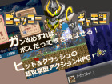

【注意】赤文字の「サイトへのリンク」や【ダウンロード】リンクは、現在のドメイン所有者が当時と変わっていて危険なサイトにつながる可能性がありますので、もしリンク移動時にブラウザの警告などが出た場合は移動しないよう注意してください。
（『緑色のリンク』と『青色のリンク』はそれぞれ「ページ内リンク」と「同サーバー内へのリンク」なので安全です）
部門別順位 → [熱中度] [斬新さ] [物語性] [画像/音声] [遊びやすさ] [その他]
総合グランプリ / 全ての応募作品 / エントリー番号順リンク / 総評 （どれもページ内リンクです）
第15回 WOLF RPGエディターコンテスト 部門別順位表
以下は「熱中度」「斬新さ」「物語性」「画像/音声」「遊びやすさ」「その他加点」の６項目の部門別順位です。はやく【総合順位】を見たい人はこちらをクリック！
各部門の得点は「平均点の順位ポイント（最大30点）」「総計点の順位ポイント（最大15点））」「中央値」の
合計点で算出されます。なお、有効投票者数は347名、のべ評価作品数は3986作品でした。
1.【熱中度】部門
| 順位 | 作品名 | 平均点（ﾗﾝｸP） | 合計点（ﾗﾝｸP） | 中央値 | 熱中度 得点 |
| 1位 | 【SIBLINGS】 |
8.25 (1位:30点) | 1377 (2位:15点) | 9点 | 54点 |
| ◆疾走感溢れるスピーディーな演出が、手に汗握る緊迫した死闘を繰り広げているようで大変良かったです。
◆操作自体は非常にシンプルなゲームなのに最後まで熱中できた。 ◆死にゲー特有の楽しさをうまくRPGに落とし込めていて、それでいて難しすぎない絶妙なバランスと不快にならないゲームのテンポが取れていてとても良かったです。 |
|||||
| 2位 | 【文無し行商人の遺跡探索】 |
7.80 (2位:29点) | 1396 (1位:15点) | 9点 | 53点 |
| ◆最強のダイスを作り上げていくワクワク感がたまりません。
◆戦闘勝利報酬などからダイスをどのように育てていくか考えるのが楽しく、上手く強いダイスが作れると嬉しくなりました！ ◆非常に可愛らしいイラストとゆる～いストーリーやネーミングからは想像もつかない位、何度も繰り返し遊びたくなる魔性を秘めた、システム面の作りこみが光るローグライトだと感じました。 |
|||||
| 3位 | 【不屈のスペラ】 |
7.60 (3位:28点) | 1034 (4位:14点) | 8点 | 50点 |
| ◆精霊や実績狙いによって戦略の方向性を変えていくのが楽しすぎる…！
◆必ず思い通りのデッキが作れるわけではないが、精霊、ルート、カード等をどう選択するか、臨機応変に判断し切り抜けていく戦略性が面白い。 ◆残りHP一桁でもうダメだと思いきや逆転勝ちできる絶妙な調整に病みつきになり、ずっと熱中しっぱなしでプレイしました。 |
|||||
| 4位 | 【メリカと野菜の剣士たち】 | 7.25 (4位:27点) | 826 (7位:12点) | 7点 | 46点 |
| 5位 | 【ビャッコーギャモン】 | 7.04 (7位:24点) | 894 (6位:13点) | 8点 | 45点 |
| 5位 | 【プリティアックス外伝 ～斧姫～】 | 7.08 (6位:25点) | 935 (5位:13点) | 7点 | 45点 |
| 7位 | 【ウラミコドク】 | 7.09 (5位:26点) | 624 (11位:10点) | 8点 | 44点 |
| 8位 | 【零落と紺碧の海神】 | 6.66 (10位:21点) | 1046 (3位:14点) | 7点 | 42点 |
| 9位 | 【BerriesWitch】 | 6.88 (8位:23点) | 516 (15位:8点) | 7点 | 38点 |
| 9位 | 【その日暮らしの冒険補償】 | 6.53 (12位:19点) | 816 (8位:12点) | 7点 | 38点 |
| 11位 | 【SICS（シックス）～特殊事件対策係～】 | 6.44 (17位:14点) | 670 (9位:11点) | 7点 | 32点 |
| 12位 | 【じゃんけんバトラー俺】 | 6.60 (11位:20点) | 495 (21位:5点) | 6点 | 31点 |
| 13位 | 【救済少年の終末】 | 6.51 (13位:18点) | 475 (22位:5点) | 7点 | 30点 |
| 14位 | 【亡者の行軍 Invasion from OtherSide】 | 6.83 (9位:22点) | 362 (ランク外:0点) | 7点 | 29点 |
| 14位 | 【女神の迷宮】 | 6.47 (15位:16点) | 498 (20位:6点) | 7点 | 29点 |
| 16位 | 【 マインのパズルでバトル】 | 6.33 (20位:11点) | 538 (14位:9点) | 7点 | 27点 |
| 16位 | 【ギフテッドワールド】 | 6.39 (19位:12点) | 505 (16位:8点) | 7点 | 27点 |
| 18位 | 【ロロろくプラス】 | 6.47 (14位:17点) | 440 (27位:2点) | 7点 | 26点 |
| 19位 | 【DayDreamDreamer】 | 6.45 (16位:15点) | 471 (23位:4点) | 6点 | 25点 |
| 20位 | 【一画面で成し遂げる地獄再興】 | 6.17 (25位:6点) | 636 (10位:11点) | 6点 | 23点 |
| 21位 | 【怖がらないでよ僧侶さん】 | 6.21 (24位:7点) | 503 (18位:7点) | 7点 | 21点 |
| 22位 | 【Forcelagoon2 因果律の少女】 | 6.42 (18位:13点) | 257 (ランク外:0点) | 7点 | 20点 |
| 23位 | 【少女大猩猩 -その猩猩、凶暴につき-】 | 6.15 (27位:4点) | 541 (13位:9点) | 6点 | 19点 |
| 24位 | 【ショートファンタジー マージョのマジかるパニカル】 | 6.31 (21位:10点) | 429 (29位:1点) | 6点 | 17点 |
| 25位 | 【一人非零和有限確定無情報非ゲーム】 | 5.77 (ランク外:0点) | 548 (12位:10点) | 6点 | 16点 |
2.【斬新さ】部門
| 順位 | 作品名 | 平均点（ﾗﾝｸP） | 合計点（ﾗﾝｸP） | 中央値 | 斬新さ 得点 |
| 1位 | 【SIBLINGS】 |
7.78 (2位:29点) | 1300 (1位:15点) | 8点 | 52点 |
| ◆アクションの表現の仕方が過去に見たこともない方法でとても驚いた。
◆手に汗握るハイクオリティの演出と組み合わさって、世界一アツい後出しジャンケンが実現しています。 ◆ウディタでここまでリズミカルにテンポよく爽快感のあるゲームに仕上げたのは斬新だった。 |
|||||
| 2位 | 【その日暮らしの冒険補償】 |
7.59 (3位:28点) | 949 (3位:14点) | 8点 | 50点 |
| ◆ファンタジー世界で保険を販売するという発想そのものが斬新で、ゲームとしてもしっかり自転車操業でやりくりするゲーム性が成り立っており発想が面白いと思います。
◆契約するか、しないかのボタンを押すだけ？ってゲーム。それでゲームとして成り立ってるすごい斬新なゲーム。 ◆目の付け所も、ゲームシステムも非常に斬新だと感じました。 |
|||||
| 3位 | 【アドリブ・ロール】 |
7.92 (1位:30点) | 562 (13位:9点) | 9点 | 48点 |
| ◆プレイヤーは映画監督なので、映画タイトルはもちろん訪れる町で発生するイベントや四天王の登場順、さらにはラスボスまである程度自由に決めて自分なりのRPG映画が作れます！
◆自分で物語を創り上げる（ロールする）楽しさと、カードとHPが直結したシステムに新鮮さがある。 ◆カード枚数がコマンドとHPを兼ねる戦闘システムが斬新で面白かったです。 |
|||||
| 4位 | 【ビャッコーギャモン】 | 6.75 (7位:24点) | 857 (6位:13点) | 7点 | 44点 |
| 4位 | 【文無し行商人の遺跡探索】 | 6.73 (9位:22点) | 1204 (2位:15点) | 7点 | 44点 |
| 6位 | 【棺ふる海】 | 6.93 (5位:26点) | 582 (11位:10点) | 7点 | 43点 |
| 7位 | 【メリカと野菜の剣士たち】 | 6.74 (8位:23点) | 768 (8位:12点) | 7点 | 42点 |
| 8位 | 【コトノリ】 | 6.78 (6位:25点) | 542 (15位:8点) | 7点 | 40点 |
| 8位 | 【Anthy】 | 7.16 (4位:27点) | 480 (20位:6点) | 7点 | 40点 |
| 10位 | 【竜と黄金の梨と焼け残り】 | 6.72 (10位:21点) | 625 (9位:11点) | 7点 | 39点 |
| 11位 | 【DayDreamDreamer】 | 6.71 (11位:20点) | 490 (19位:6点) | 7点 | 33点 |
| 11位 | 【不屈のスペラ】 | 6.44 (17位:14点) | 876 (5位:13点) | 6点 | 33点 |
| 13位 | 【怖がらないでよ僧侶さん】 | 6.56 (16位:15点) | 531 (16位:8点) | 7点 | 30点 |
| 14位 | 【一人非零和有限確定無情報非ゲーム】 | 6.28 (20位:11点) | 597 (10位:11点) | 6点 | 28点 |
| 15位 | 【プリティアックス外伝 ～斧姫～】 | 6.18 (22位:9点) | 816 (7位:12点) | 6点 | 27点 |
| 16位 | 【未来よ心のままに】 | 6.70 (12位:19点) | 315 (ランク外:0点) | 7点 | 26点 |
| 17位 | 【WOLFALL】 | 6.64 (13位:18点) | 365 (ランク外:0点) | 7点 | 25点 |
| 17位 | 【BerriesWitch】 | 6.37 (18位:13点) | 478 (22位:5点) | 7点 | 25点 |
| 19位 | 【前進中の迷い人他四種のミニゲーム】 | 6.62 (14位:17点) | 265 (ランク外:0点) | 7点 | 24点 |
| 20位 | 【零落と紺碧の海神】 | 5.76 (29位:2点) | 904 (4位:14点) | 6点 | 22点 |
| 20位 | 【Know Your Enemy, Know Yourself.】 | 6.59 (15位:16点) | 336 (ランク外:0点) | 6点 | 22点 |
| 22位 | 【少女大猩猩 -その猩猩、凶暴につき-】 | 5.95 (26位:5点) | 524 (17位:7点) | 6点 | 18点 |
| 22位 | 【めっちゃ危険なダンジョンだろうとみんなで潜れば怖くない】 | 6.30 (19位:12点) | 353 (ランク外:0点) | 6点 | 18点 |
| 24位 | 【救済少年の終末】 | 6.04 (25位:6点) | 441 (24位:4点) | 6点 | 16点 |
| 24位 | 【 みかど出現】 | 6.19 (21位:10点) | 260 (ランク外:0点) | 6点 | 16点 |
3.【物語性】部門
| 順位 | 作品名 | 平均点（ﾗﾝｸP） | 合計点（ﾗﾝｸP） | 中央値 | 物語性 得点 |
| 1位 | 【ビャッコーギャモン】  |
7.76 (1位:30点) | 986 (4位:14点) | 8点 | 52点 |
| ◆序盤だけでもかなりアツいが、後半に進むにつれそのアツさが加速度的に増えていくストーリー限界突破な作品だ！
◆常に勢いがありつつも緻密に組まれた設定とストーリー魅力的で個性的すぎるキャラクターそれらを支える丁寧で美麗な気合の塊のような演出！すごいゲームでした！ ◆想像を遥かに超えてストーリー・キャラクターが良かったです。物語性に文句なしの満点が出せるレベルです。 |
|||||
| 2位 | 【零落と紺碧の海神】 |
6.90 (6位:25点) | 1083 (2位:15点) | 7点 | 47点 |
| ◆ストーリーや雰囲気についてはについてはイベント回数こそ多くないものの1回1回に文学的語りがあり、それとBGMやアイテム名称が合わさって夏と過ぎゆく空想が醸し出されていた。
◆今回のウディコンで遊んだゲーム内では、ストーリー性では間違いなくトップの作品でした。 ◆すっきりした味わいに、確かな苦さもある読後感。まさに炭酸飲料のような、夏にふさわしい作品でした。 |
|||||
| 2位 | 【ウラミコドク】 |
7.11 (3位:28点) | 626 (7位:12点) | 7点 | 47点 |
| ◆キャラクターの魅力もさることながら世界観や伏線の張り方など色んな要素が混ざり合うことで物語の深みへと昇華されている、すごく遊んでいて楽しい作品でした。
◆ウディタ製ゲームであまり見ることのないデスゲーム系推理ADVで、進めるにつれてどんどん先が気になる物語が魅力の作品でした。 ◆何といってもシナリオが良い！ 先が気になる謎、スピード感とインパクトのある悲劇的展開。ディテクティブ物としても良く出来ており、解明によるカタルシスも強い。 |
|||||
| 4位 | 【救済少年の終末】 | 7.21 (2位:29点) | 526 (13位:9点) | 8点 | 46点 |
| 5位 | 【SIBLINGS】 | 6.38 (10位:21点) | 1066 (3位:14点) | 7点 | 42点 |
| 5位 | 【怖がらないでよ僧侶さん】 | 6.86 (7位:24点) | 556 (10位:11点) | 7点 | 42点 |
| 7位 | 【DayDreamDreamer】 | 6.96 (5位:26点) | 508 (15位:8点) | 7点 | 41点 |
| 8位 | 【文無し行商人の遺跡探索】 | 6.16 (14位:17点) | 1103 (1位:15点) | 6点 | 38点 |
| 8位 | 【その日暮らしの冒険補償】 | 6.35 (13位:18点) | 794 (6位:13点) | 7点 | 38点 |
| 10位 | 【BerriesWitch】 | 6.53 (9位:22点) | 490 (17位:7点) | 7点 | 36点 |
| 11位 | 【Forcelagoon2 因果律の少女】 | 7.08 (4位:27点) | 283 (ランク外:0点) | 8点 | 35点 |
| 12位 | 【不屈のスペラ】 | 6.04 (17位:14点) | 821 (5位:13点) | 6点 | 33点 |
| 13位 | 【オカルトノート 土雲ガクレ編】 | 6.74 (8位:23点) | 256 (ランク外:0点) | 7点 | 30点 |
| 14位 | 【WOLFALL】 | 6.38 (11位:20点) | 351 (29位:1点) | 6点 | 27点 |
| 15位 | 【アドリブ・ロール】 | 6.08 (16位:15点) | 432 (21位:5点) | 6点 | 26点 |
| 15位 | 【死をきたい】 | 6.10 (15位:16点) | 409 (23位:4点) | 6点 | 26点 |
| 17位 | 【亡者の行軍 Invasion from OtherSide】 | 6.36 (12位:19点) | 337 (ランク外:0点) | 6点 | 25点 |
| 18位 | 【SICS（シックス）～特殊事件対策係～】 | 5.74 (24位:7点) | 597 (9位:11点) | 6点 | 24点 |
| 19位 | 【ギフテッドワールド】 | 5.92 (20位:11点) | 468 (19位:6点) | 6点 | 23点 |
| 20位 | 【一人非零和有限確定無情報非ゲーム】 | 5.72 (25位:6点) | 543 (11位:10点) | 6点 | 22点 |
| 21位 | 【可愛い子と夏祭りに行きてえよなあ！】 | 5.94 (19位:12点) | 392 (25位:3点) | 6点 | 21点 |
| 22位 | 【祟女 -TATARIME-】 | 5.95 (18位:13点) | 351 (29位:1点) | 6点 | 20点 |
| 23位 | 【竜と黄金の梨と焼け残り】 | 5.58 (28位:3点) | 519 (14位:9点) | 6点 | 18点 |
| 23位 | 【棺ふる海】 | 5.64 (26位:5点) | 474 (18位:7点) | 6点 | 18点 |
| 25位 | 【メリカと野菜の剣士たち】 | 5.31 (ランク外:0点) | 605 (8位:12点) | 5点 | 17点 |
4.【画像/音声】部門
| 順位 | 作品名 | 平均点（ﾗﾝｸP） | 合計点（ﾗﾝｸP） | 中央値 | 画像/音声 得点 |
| 1位 | 【SIBLINGS】 |
8.78 (1位:30点) | 1466 (1位:15点) | 9点 | 54点 |
| ◆アニメーショングラフィック、特に戦闘シーンのダイナミックな動きが極めて素晴らしく開始してすぐ心を掴まれました。
◆状況に連動したBGMの変化がまた素晴らしく、没入感を高めてくれる。 ◆抽象化されたグラフィックが世界観にぴったりで、アクション描写の邪魔もしない。 ◆演出面が優れているとゲーム自体がここまで面白くなるのかと驚いた。 |
|||||
| 2位 | 【ビャッコーギャモン】 |
8.71 (2位:29点) | 1106 (3位:14点) | 9点 | 52点 |
| ◆ドット絵の質が非常に素晴らしく、息をのむように美しい風景や滑らかに動くキャラグラフィックなどのすべてが懐かしい質感のドット絵で表現されています。
◆これ以上ないくらい綺麗なグラフィックでした。BGMやSEも胸が高鳴るものでした。 ◆キャラのモーションが細かくてドット絵のクオリティが凄い！ ◆すさまじい作り込みのドット絵でビジュアルでも魅せるド級の作品。 |
|||||
| 3位 | 【文無し行商人の遺跡探索】 |
7.94 (4位:27点) | 1422 (2位:15点) | 8点 | 50点 |
| ◆グラフィックは可愛く、音楽は心地よくノリが良いです。
◆メインキャラの絵は更に可愛くなったり、後半に来て新規BGMが来た時のﾜｸﾜｸ感だったり、ここもまだ使える物は使いつつ新鮮味を薄れさせない、良いバランスで配置されていたと感じます。 ◆イラストめっちゃかわいいな……！！ |
|||||
| 4位 | 【竜と黄金の梨と焼け残り】 | 8.27 (3位:28点) | 769 (8位:12点) | 9点 | 49点 |
| 5位 | 【不屈のスペラ】 | 7.39 (6位:25点) | 1005 (4位:14点) | 8点 | 47点 |
| 6位 | 【カエルはカエる】 | 7.61 (5位:26点) | 571 (13位:9点) | 7点 | 42点 |
| 7位 | 【SICS（シックス）～特殊事件対策係～】 | 7.17 (8位:23点) | 746 (9位:11点) | 7点 | 41点 |
| 8位 | 【DayDreamDreamer】 | 7.23 (7位:24点) | 528 (14位:9点) | 7点 | 40点 |
| 9位 | 【ウラミコドク】 | 7.00 (10位:21点) | 616 (12位:10点) | 7点 | 38点 |
| 10位 | 【メリカと野菜の剣士たち】 | 6.88 (13位:18点) | 784 (7位:12点) | 7点 | 37点 |
| 10位 | 【一画面で成し遂げる地獄再興】 | 6.94 (11位:20点) | 715 (11位:10点) | 7点 | 37点 |
| 12位 | 【その日暮らしの冒険補償】 | 6.74 (15位:16点) | 842 (6位:13点) | 7点 | 36点 |
| 13位 | 【救済少年の終末】 | 6.81 (14位:17点) | 497 (17位:7点) | 7点 | 31点 |
| 14位 | 【死をきたい】 | 6.88 (12位:19点) | 461 (23位:4点) | 7点 | 30点 |
| 15位 | 【Forcelagoon2 因果律の少女】 | 7.03 (9位:22点) | 281 (ランク外:0点) | 7点 | 29点 |
| 16位 | 【零落と紺碧の海神】 | 6.26 (22位:9点) | 983 (5位:13点) | 6点 | 28点 |
| 16位 | 【ギフテッドワールド】 | 6.41 (17位:14点) | 506 (16位:8点) | 6点 | 28点 |
| 18位 | 【じゃんけんバトラー俺】 | 6.33 (18位:13点) | 475 (18位:7点) | 6点 | 26点 |
| 19位 | 【BerriesWitch】 | 6.31 (20位:11点) | 473 (20位:6点) | 6点 | 23点 |
| 20位 | 【STARCHILD】 | 6.45 (16位:15点) | 271 (ランク外:0点) | 7点 | 22点 |
| 21位 | 【WOLFALL】 | 6.33 (19位:12点) | 348 (ランク外:0点) | 6点 | 18点 |
| 22位 | 【アドリブ・ロール】 | 6.21 (23位:8点) | 441 (25位:3点) | 6点 | 17点 |
| 22位 | 【プリティアックス外伝 ～斧姫～】 | 5.62 (ランク外:0点) | 742 (10位:11点) | 6点 | 17点 |
| 24位 | 【デジチューバー】 | 6.27 (21位:10点) | 345 (ランク外:0点) | 6点 | 16点 |
| 25位 | 【少女大猩猩 -その猩猩、凶暴につき-】 | 5.76 (ランク外:0点) | 507 (15位:8点) | 6点 | 14点 |
5.【遊びやすさ】部門
| 順位 | 作品名 | 平均点（ﾗﾝｸP） | 合計点（ﾗﾝｸP） | 中央値 | 遊びやすさ 得点 |
| 1位 | 【不屈のスペラ】 |
7.56 (2位:29点) | 1028 (4位:14点) | 8点 | 51点 |
| ◆デッキ構築型ゲームとして、非常に理解しやすく遊びやすいため、プレイしてすぐに熱中できた。
◆チュートリアルが親切。デジタルもアナログもカードゲームはほぼ未経験だが、クリアまで遊ぶことができた。 ◆遊びやすさの点で優れたゲームだと思います。状態異常の種類が限られている点や、レアカード入手時にコモンカードが自動的に取り除かれる仕組み、ターゲット選択の手間が軽減されている点など、工夫が感じられました。 |
|||||
| 2位 | 【SIBLINGS】 |
7.47 (5位:26点) | 1248 (1位:15点) | 8点 | 49点 |
| ◆難易度は高いですが救済措置もあり、意外と間口が広い点も素晴らしいと思います。
◆ロードの速さ、リトライ性の良さが満点です。ワンシーンごとに呼吸を整えられるのも非常に良かったです。 ◆無駄なウェイトが無く、復活ポイントは任意に設定でき、移動速度を超高速にまで出来てしまう。そのユーザビリティの配慮が本当に素晴らしいです。 |
|||||
| 2位 | 【メリカと野菜の剣士たち】 |
7.55 (3位:28点) | 861 (6位:13点) | 8点 | 49点 |
| ◆バフ・デバフは何が付与されているか表示され、マウスを合わせると説明が出るのでいつでも確認できるなど、独自システムもフォローされてて遊びやすい。
◆戦闘ルールやマウスの操作性、UIもシンプルでわかりやすく何度も遊びたくなる魅力があります。 ◆プレイヤーの学習曲線を意識していて急に攻略不能なほどの難易度にもならず、かつゲームオーバーになっても何度も挑みたくなるゲームバランスが良かったです。 |
|||||
| 2位 | 【ギフテッドワールド】 |
8.00 (1位:30点) | 632 (11位:10点) | 9点 | 49点 |
| ◆とにかくプレイヤーに負担をかけまいとこれでもかというくらい作者の遊びやすくするための工夫が取り入れられている。
◆ワープ機能やクエスト情報など非常にストレスフリーにプレイできました。 ◆アイテムの取り逃しがないだろうか、図鑑が埋まらなくならないだろうか、取り返しのつかない要素はないだろうか、そういった不安要素を片っ端から全力で否定してくれる。 |
|||||
| 5位 | 【零落と紺碧の海神】 | 7.30 (6位:25点) | 1146 (3位:14点) | 8点 | 47点 |
| 6位 | 【プリティアックス外伝 ～斧姫～】 | 7.14 (7位:24点) | 942 (5位:13点) | 7点 | 44点 |
| 6位 | 【救済少年の終末】 | 7.48 (4位:27点) | 546 (13位:9点) | 8点 | 44点 |
| 8位 | 【文無し行商人の遺跡探索】 | 6.78 (11位:20点) | 1213 (2位:15点) | 7点 | 42点 |
| 9位 | 【じゃんけんバトラー俺】 | 6.88 (10位:21点) | 516 (17位:7点) | 7点 | 35点 |
| 10位 | 【群像物語～タコ型宇宙人と残された七日間～】 | 6.95 (8位:23点) | 403 (30位:1点) | 7点 | 31点 |
| 11位 | 【死をきたい】 | 6.75 (12位:19点) | 452 (24位:4点) | 7点 | 30点 |
| 11位 | 【Forcelagoon2 因果律の少女】 | 6.90 (9位:22点) | 276 (ランク外:0点) | 8点 | 30点 |
| 11位 | 【BerriesWitch】 | 6.60 (14位:17点) | 495 (20位:6点) | 7点 | 30点 |
| 14位 | 【少女大猩猩 -その猩猩、凶暴につき-】 | 6.42 (18位:13点) | 565 (12位:10点) | 6点 | 29点 |
| 15位 | 【亡者の行軍 Invasion from OtherSide】 | 6.66 (13位:18点) | 353 (ランク外:0点) | 7点 | 25点 |
| 16位 | 【一画面で成し遂げる地獄再興】 | 6.16 (24位:7点) | 634 (10位:11点) | 6点 | 24点 |
| 16位 | 【怖がらないでよ僧侶さん】 | 6.27 (21位:10点) | 508 (18位:7点) | 7点 | 24点 |
| 18位 | 【可愛い子と夏祭りに行きてえよなあ！】 | 6.48 (16位:15点) | 428 (28位:2点) | 6点 | 23点 |
| 18位 | 【デジチューバー】 | 6.53 (15位:16点) | 359 (ランク外:0点) | 7点 | 23点 |
| 18位 | 【SICS（シックス）～特殊事件対策係～】 | 6.15 (25位:6点) | 640 (9位:11点) | 6点 | 23点 |
| 21位 | 【祟女 -TATARIME-】 | 6.44 (17位:14点) | 380 (ランク外:0点) | 7点 | 21点 |
| 22位 | 【ショートファンタジー マージョのマジかるパニカル】 | 6.34 (20位:11点) | 431 (27位:2点) | 6点 | 19点 |
| 23位 | 【アドリブ・ロール】 | 6.24 (22位:9点) | 443 (25位:3点) | 6点 | 18点 |
| 23位 | 【 マインのパズルでバトル】 | 6.08 (27位:4点) | 517 (16位:8点) | 6点 | 18点 |
| 23位 | 【煽り時計の誕生の旅】 | 6.34 (19位:12点) | 241 (ランク外:0点) | 6点 | 18点 |
6.【その他】部門
| 順位 | 作品名 | 平均点（ﾗﾝｸP） | 合計点（ﾗﾝｸP） | 中央値 (1点以上 のみｶｳﾝﾄ) |
その他 得点 |
| 1位 | 【ビャッコーギャモン】 |
+1.94 (2位:29点) | 247 (2位:15点) | 5点 | 49点 |
| ◆「物語性」では評価しきれない、ケレン味のある台詞回しや個性的なキャラクター造形のセンス。
◆各種武器の味付けは不自由さと個性と強さのバランスが絶妙で下位互換がなく、プレイングがワンパターンにならず終始楽しくプレイすることができました。このバランスはコンシューマーでも類を見ない完成度だと思います。 ◆常に勢いがありつつも緻密に組まれた設定とストーリー魅力的で個性的すぎるキャラクター。それらを支える丁寧で美麗な気合の塊のような演出！すごいゲームでした！ |
|||||
| 2位 | 【SIBLINGS】 |
+1.99 (1位:30点) | 332 (1位:15点) | 3点 | 48点 |
| ◆高難度ながらも何度もリトライしたくなる魅力がありました。ボスや攻撃ごとに異なる素晴らしい演出に加点。
◆コマンドバトルRPGとアクションを融合させるアプローチとしてコマンドバトルの部分を緩、アクションの部分を急と区切る試みは初めて見ました。 ◆ハイスピードアクションとしての完成度と快適さはもちろん、アクションの表現の仕方が過去に見たこともない方法でとても驚いたので追加で加点を入れました。 |
|||||
| 3位 | 【DayDreamDreamer】 |
+1.93 (3位:28点) | 141 (6位:13点) | 4点 | 45点 |
| ◆終えてみると熱い展開であったり誰かへの祈りであったり、確かに記憶に残るだけの感動があって、どう説明すればいいのか分からないけれどなんというか強烈な印象が沸き上がった作品でした。
◆エンド後の余韻が今も続いています。素敵な作品制作お疲れ様です。 ◆プレステ初期世代に刺さる雰囲気が随所に感じられました。この雰囲気はなかなか出せないと思います。最高でした。 |
|||||
| 4位 | 【Anthy】 | +1.43 (5位:26点) | 96 (11位:10点) | 2点 | 38点 |
| 4位 | 【怖がらないでよ僧侶さん】 | +1.22 (7位:24点) | 99 (9位:11点) | 3点 | 38点 |
| 6位 | 【オカルトノート 土雲ガクレ編】 | +1.82 (4位:27点) | 69 (21位:5点) | 3点 | 35点 |
| 7位 | 【プリティアックス外伝 ～斧姫～】 | +1.12 (13位:18点) | 148 (4位:14点) | 2点 | 34点 |
| 8位 | 【ウラミコドク】 | +1.12 (12位:19点) | 99 (9位:11点) | 3点 | 33点 |
| 9位 | 【アドリブ・ロール】 | +1.17 (8位:23点) | 83 (17位:7点) | 2点 | 32点 |
| 9位 | 【カエルはカエる】 | +1.16 (10位:21点) | 87 (14位:9点) | 2点 | 32点 |
| 11位 | 【不屈のスペラ】 | +1.06 (15位:16点) | 144 (5位:13点) | 2点 | 31点 |
| 12位 | 【じゃんけんバトラー俺】 | +1.13 (11位:20点) | 85 (16位:8点) | 2点 | 30点 |
| 13位 | 【文無し行商人の遺跡探索】 | +1.04 (18位:13点) | 186 (3位:14点) | 2点 | 29点 |
| 13位 | 【Forcelagoon2 因果律の少女】 | +1.30 (6位:25点) | 52 (28位:2点) | 2点 | 29点 |
| 13位 | 【棺ふる海】 | +1.08 (14位:17点) | 91 (12位:10点) | 2点 | 29点 |
| 16位 | 【SICS（シックス）～特殊事件対策係～】 | +0.97 (20位:11点) | 101 (8位:12点) | 2点 | 25点 |
| 17位 | 【STARCHILD】 | +1.17 (9位:22点) | 49 (ランク外:0点) | 2点 | 24点 |
| 18位 | 【救済少年の終末】 | +1.03 (19位:12点) | 75 (19位:6点) | 2点 | 20点 |
| 19位 | 【亡者の行軍 Invasion from OtherSide】 | +1.06 (16位:15点) | 56 (27位:2点) | 1点 | 18点 |
| 20位 | 【メリカと野菜の剣士たち】 | +0.80 (27位:4点) | 91 (12位:10点) | 3点 | 17点 |
| 21位 | 【ロロろくプラス】 | +0.93 (21位:10点) | 63 (23位:4点) | 2点 | 16点 |
| 21位 | 【竜と黄金の梨と焼け残り】 | +0.88 (23位:8点) | 82 (18位:7点) | 1点 | 16点 |
| 23位 | 【 みかど出現】 | +1.05 (17位:14点) | 44 (ランク外:0点) | 1点 | 15点 |
| 23位 | 【BerriesWitch】 | +0.91 (22位:9点) | 68 (22位:5点) | 1点 | 15点 |
| 25位 | 【零落と紺碧の海神】 | +0.66 (ランク外:0点) | 103 (7位:12点) | 2点 | 14点 |
◆総合グランプリ◆
総合グランプリ順位は「熱中度」「斬新さ」「物語性」「画像/音声」「遊びやすさ」「その他加点」の６項目の「総合得点」に、「平均重視度（％）」を掛けて得られた値を総計したポイントで決定されます。
皆さまの投票から得られた平均重視度は以下の通りとなりました。
熱中度 81.3 ％ 斬新さ 54.5 ％ 物語性 61.9 ％ 画像/音声 53.2 ％ 遊びやすさ 76.3 ％
※その他加点は自動で「50％」となります。
|
【プレイ動画配信について】 ※各作品のアピール文の最下部には動画配信についての可否が記載されています。 [ゲームプレイ配信] 時間無制限のゲーム配信･プレイ動画投稿の可否です。 [動画への映像使用(3分以内)] ↑がダメな場合の、紹介動画・ランキング動画等への短いプレイ映像使用の可否です。 こちらへのご利用では映像利用は最大3分以内、かつ、ネタバレはなるべく避けてください。 ※ただし上記の可否は「有料動画」へのゲーム利用許可は含みません。有料動画の場合は個別に確認してください。 |
| 【ゲーム起動時に実行がブロックされる場合】 Windows10のデータ実行防止機能により、ゲーム起動時に以下の画面が表示されることがあります。  クリックで拡大 クリックで拡大この場合は、「詳細情報」をクリック後に現れる「実行」ボタンをクリックしてプレイしてください。 |
【1位】『SIBLINGS』(エントリー番号【22】/ 総ポイント188.3点)
熱中 43.9点(1位)+斬新 28.3点(1位)+物語性 26.0点(5位)+画像音声 28.7点(1位)+遊びやすさ37.4点(2位)+その他24.0点(2位)
熱中 43.9点(1位)+斬新 28.3点(1位)+物語性 26.0点(5位)+画像音声 28.7点(1位)+遊びやすさ37.4点(2位)+その他24.0点(2位)
- 【ダウンロード】
【運営ﾊﾞｯｸｱｯﾌﾟからDL(安全/321MB)】 - 作者 : 九乃頭虫（ここのずむし）
- プレイ時間 :20分~2時間（大きな個人差あり）
- 作者コメント:
- 【ジャンル】
高難易度対話型アクションゲーム
【概要】
【SIBLINGS】は、敵の攻撃を弾きや回避でいなし、戦いの流れを支配するアクションゲームです。
敵を凝視し、適切な防御方法を選択しましょう。
Ver1.0.12キーコンフィグのバグ修正。
Ver1.0.11テキストの調整。
Ver1.0.10致命的なバグの修正。
Ver1.0.9操作説明を調整
Ver1.0.8進行困難バグ修正。
Ver1.0.7キーコンフィグを明瞭に。一部難易度調整。
Ver1.0.6一部敵AIを修正。
Ver1.0.5初回止め演出に操作指南を追加。
Ver1.0.4誤字修正。
Ver1.0.3バグ修正、脱字修正。
Ver1.0.2掴み攻撃威力低下。誤字修正。
Ver1.0.1パッド操作対応。キーコンフィグ実装。
【ゲームプレイ配信はご自由に】
【動画への映像使用(3分以内)はご自由に】
-
【一般投票コメント】
[熱10新8物7画9遊9他+6] 全てがスタイリッシュにキマっている作品です。まずアクションゲームとして、そのトロの部分である差し合いだけを食べ続けられる贅沢なものとなっています。のみならず、そのアクションの軽快さや爽快感を些かも失わせしめることなく、テンポ良く差される美しい演出の数々はプレイヤーのテンションを否応なしに高めます。様々な相手のモーションを観察し、タイミングを取り、適切なボタンを押す、そのすべての流れが極めて高いレベルで完成された作品であり、その差し合いの極致の中に身を置くことで、抜身の緊張感を楽しめること疑いありません。その圧倒的なまでの演出力とアクションの完成度に裏打ちされた、夢中になれるゲームデザインに加点。
[熱10新8物8画10遊8他+8] あぁ〜！盾ではじく音ォ！！（ｶｷｨｰﾝ!!)戦闘の爽快感が半端ないです。ボコスカやられてるのに、たまに盾ではじけただけで楽しい。ちゃんと救済措置があるので苦手な方にもチャレンジして欲しい作品です。アニメーションや見せ方がかっこよすぎたので加点＋8です。本当に画面がかっこよくて楽しい。面白かったです。
[熱10新10物6画10遊8他+6] 敵の動きと対話しながら弾きや回避で攻撃をいなしていく高難易度ターン制アクション。アニメーショングラフィック、特に戦闘シーンのダイナミックな動きが極めて素晴らしく開始してすぐ心を掴まれました。移動中と戦闘シーンとでインタラクティブミュージックによる滑らかなBGM切り替えが実装されており、画像だけでなく音声へのこだわりも隙がありません。迫り来る敵の攻撃をスタイリッシュに防御・回避でき、その防御回避時の効果音からくるリズム感がクセになって敵に無我夢中で勝ちたくなる魅力があり最高の熱中度でした！戦闘システムは攻撃がRPG、防御回避がアクションに分離された斬新なターン制アクションを採用しており、プレイヤーは防御回避に専念すれば良いためアクション苦手な方にもお勧めです。難易度については難しめですが負けても即リトライできるためとても遊びやすかったです。どうしてもクリアできない場合は難易度が大幅に低下する「縋る者のお守り」という救済アイテムもあります。グラフィック演出面、BGMへのこだわり、効果音でわかる敵の動きの呼吸リズム感覚など、すべてが剣戟に集中するためにあるかのような細部にわたる作り込みの数々に対して感激しましたので大幅加点します
[熱6新7物4画9遊7] 挿入されるムービーや 決めの絵などの演出面が とくに良かった。演出面が優れているとゲーム自体がここまで面白くなるのかと驚いた。
[熱10新8物9画10遊9] うまく避けたりガードできたときのよろこびがすごかったです。救済措置のおかげでアクションの苦手な自分でも最後までクリアできました。
[熱10新6物6画10遊8] ver1.06で2周目までクリア。アクションもビジュアルも完成度が高く面白かったです。
[熱9新9物7画10遊6他+7] 画像と音声のチョイスがものすごく良く、キャラクターの動きが非常にカッコ良く気づいたらものすごく熱中していました！
[熱9新8物6画9遊8他+3] 「高難易度対話型アクションゲーム」の名の通り、高難易度で人を選びそうではあるもののそれ以上に光るところがある作品でした。敵のモーションにメリハリがあり、緊張感あふれる戦闘を最初から最後まで体験できました。モーションのよさとウディタの新たな可能性を見せてくれた点に加点です。
[熱10新9物9画10遊10他+4] コマンドバトルRPGとアクションを融合させるアプローチとしてコマンドバトルの部分を緩、アクションの部分を急と区切る試みは初めて見ました。どこからでもリスタートできるシステムやシームレスな場面移行など本筋以外でのユーザビリティがすごく練られていて、だからこそ素晴らしいゲーム体験に集中できる非常に優れた作品だと感じます。唯一惜しい点を挙げるならアイテム欄の大項目・小項目のシステムを2次元グリッドのUIでやるにはもう少し工夫が欲しかったという程度で、それにしたってゲームプレイに支障をきたすほどではないレベルです。
[熱10新7物6画8遊9他+2] 操作自体は非常にシンプルなゲームなのに最後まで熱中できたのは、演出や上手く行ったときの気持ちよさ、リトライ性の高さが凄く大きいと感じた。
[熱5新8物5画7遊3他+2] 疾走感溢れるスピーディーな演出が、手に汗握る緊迫した死闘を繰り広げているようで大変良かったです。
[熱10新9物9画10遊10他+5] 絵で気になってやってみたらすっごいクオリティ良過ぎた…でもパリィと回避そんな得意じゃないから救済アイテム最初からあるのも快適でありがたい、よくできてるわこれ。感動した絵と救済アイテムを用意してくれたことへの加点です。
[熱10新10物6画8遊9他+1] クリアした時の爽快感があったので加点します。熱中して遊べる面白いゲームでした！
[熱6新6物5画6遊6] 独自の世界観が作られていました。避けるタイミングをつかむのが少し難しい印象ですが、判定は緩めだと思うので、その分でバランスは取れていたかと思います。
[熱10新7物6画9遊7他+1] ●斬新さ●システム的には特に珍しくはない。はずなのに衝撃的だった。●画像/音声●圧倒的な躍動感と臨場感がこのゲームの本領だと思う。●その他加点●見た目より感じた感じの難易度が低く、救済措置もある。
[熱10新10物8画9遊9他+5] 自分は某葦名で忍びを苦難厄付で遊んでいたものです。まさか、2D、それもウディタでこのようなゲームをプレイできるとは思いませんでした。敵の攻撃のパリィ、危険攻撃の択の駆け引き、ボス戦で挟まるイベントなど、とても濃密な時間でした。初見クリアタイムは35分でしたが、速い方って誇れるかな(笑)素晴らしいゲームをありがとうございました！
[熱9新8物5画9遊9他+5] 無駄なウェイトが無く、復活ポイントは任意に設定でき、移動速度を超高速にまで出来てしまう。そのユーザビリティの配慮が本当に素晴らしいです。プレイヤーからするとストレスが少なく本当にありがたい……。高難易度のアクションゲームでリトライ性の厳しさから心が折れてしまった過去を持つ自分も、このゲームは最後までやりきることが出来ました。
[熱7新9物7画9遊9] アクション苦手なのであまり進められていませんが、感じる雰囲気や操作に対する気持ちよさなどはとても良かったように思います。
[熱7新9物7画9遊8他+2] いわゆる死にゲーをターン制バトルに落とし込んだもの。なので、コンシューマの3Dゲーだと珍しくない「リッチなあっちむいてホイ」ではあるのだが、アクションゲーの迫力のあるエフェクトとスピード感をあくまで同人系の絵柄＋2Dアニメで表現しきっており、フリーゲーム界隈ではちょっと見たことないレベルの完成度。救済アイテムでアクション下手に対する配慮も好感＋２。フリゲもここまできたかー！
[熱9新6物5画10遊9他+7] 戦闘シーンの演出がとにかく素晴らしい！お助けアイテムを使わないと歯が立ちませんでしたが、戦闘を眺めているだけでも楽しめました。
[熱8新7物7画10遊7他+5] 自分の反射神経と動体視力では縋り無しでのラスボスは厳しかったです。それでも躍動感のある表現は飛び抜けていました。これは素材の品質や使い方という枠を超えて評価されるべき表現方法だと思い、またバグがなかったためその他加点します。
[熱10新8物7画10遊7他+7] フリーゲーム業界に名を残した伝説級の高難易度アクション。演出力が類を見ないほど優れていて、ザコ戦ですら最高に盛り上がりました。ボス戦では更に激情的な演出を披露し、絶妙な緊張感に手汗を握りしめます。これだけ難しいにも拘わらず、ダメージ量を大幅に減らす救済措置があったり、リトライ性が高い影響でアクション初心者にもお勧めすることができて非の打ち所がありません。モノクロに彩られた美麗な世界観、失敗してもご褒美が貰えてストレスを感じさせない等、魅力な点を挙げればキリがありません。その凄まじい完成度にかなり多めに加点します。
[熱9新8物6画10遊9他+2] コマンド選択時に時間が止まるため、リアルで呼吸を整えるタイミングがあるのはよかったです。
[熱9新7物7画8遊8他+1] 最初のロード時間が気になったがそれ以外はテンポ良く快適に遊べた。2面のボスが一番苦戦して一番面白かった。
[熱7新10物5画10遊7他+3] 演出がすごい迫力でした。
[熱7新3物4画7遊6他+1] 漫画的表現加点。ひとつづつ覚えていく導線良き。死に覚えでプレイヤーの経験値が上がっていく。
[熱8新10物9画10遊8他+2] ゲーム性が、他に類を見ないすさまじさ。単純なゲームのはずなのに、ストリートファイター並みに「戦っている感」がありました。斬新さ 10で足りないところに+2します。
[熱10新6物4画10遊10他+7] SEKIR〇をうまくターン性の2Dアクションゲームに落とし込んだような作品。敵の攻撃を見切って回避、弾きを繰り返し、態勢を崩したところに攻撃を出す様はまさに狼。斬新さという点についていえば前述のとおりだが、それを2Dで再現したという点を高く評価する。敵の攻撃を見切って倒した時の快感はオマージュもとに勝るとも劣らない。敵のモーションの一つ一つやムービー、再戦までのスピード感などとにかくやっていてストレスを感じるどころか快感を感じてしまう。総じて非常に完成度が高いと感じたが、弾きに関しては連打をしていても問題なくはじいてしまうため、敵の攻撃を見切らなくてもはじけてしまうので、プレイヤー自身で連打禁止などの縛りを設けなければいけない点はやや原点要素か。オマージュもとと同じく死にゲーではあるものの、全体的な難易度はそこまで高くはない。また、詰まった時には被ダメージを大幅に抑えるアイテムもあるので未経験者でも問題なくクリアはできるだろう。とにかくスピード感が癖になって何度もプレイしたくなる良作であった。ボリュームの問題さえ解決すれば有償であっても喜んで買うくらいには面白かった。
[熱7新7物6画6遊7] 戦闘の爽快感と緊張感が最高だった。
[熱8新10物9画10遊9他+7] これほどスタイリッシュなゲームを見たのは初めてでした。自分には難しくてクリアできなかったもののグラフィックや回避しながら戦う戦闘には目を見張るものがありました。
[熱10新6物7画10遊10] zキーを押してるだけなんですが、「斬っている」感触があるんですよね。
[熱10新8物7画8遊9他+1] シビアな難易度ながらシンプルな操作や高速リトライによってテンポよく遊べ、上達を実感できる。アニメーションの見せ方も見事。
[熱10新10物7画9遊10他+10] 死にゲー特有の楽しさをうまくRPGに落とし込めていてそれで且つ難しすぎない絶妙なバランスと不快にならないゲームのテンポが取れていてとても良かったです。システム面でもセーブとリスポーン設定が個別で設定できるのが個人的にとても助かりました。
[熱9新8物7画7遊7他+3] タイミングアクションがメインのゲームだが、プレイヤーが息をつける暇があるのが良い。
[熱10新10物5画10遊8他+8] 開始１分で惹き込まれる剣戟アクション。プレイヤーのCキーが相手の斬撃を弾く！タイミングよくボタンを押すと得をするシステムはRPGにおける与ダメ上昇・被ダメ減少が過去の事例としてはあったが、本作はその習熟が必須で文字通り生死を分けるほどの手に汗握る戦闘が楽しめる。状況に連動したBGMの変化がまた素晴らしく、没入感を高めてくれる。厳しい時はアイテムで難易度を抑える事も可能で間口が広がっているのも好印象。
[熱9新9物7画9遊8他+4] 1周目クリア。フロムゲーの雰囲気を感じる作品。RPGエディターでこんなのが作れるのか……。敵の攻撃を見切って弾く、もしくは回避するのが基本的な操作であるが、これが非常に難しい。私は2面ボスで1時間ぐらい詰まった。幸い、敗北時のリトライは迅速に行えるし、どうしても無理なら救済要素もある。高難度でもプレイヤーを挫折させにくい工夫が多くなされている。ゲーム性以外の面では、制作者の性癖を感じるムービー演出が良い。えっちだ……
[熱6新6物6画10遊6] 負けながら受け方を覚えていくゲーム。演出がとてもすごいです。
[熱9新7物8画8遊7他+2] 2ボス後半の掴み攻撃好き
[熱8新9物8画6遊9他+3] 物語性を感じるストーリーアクション要素のあるRPGは他にもあるけれどここまで激しくそして中心的に置いてあるものは見た事がない雑魚で練習。連戦で練習してボスに挑むとどんどんやってしまう
[熱10新10物8画9遊10他+2] ハイスピードアクションとしての完成度と快適さはもちろん、アクションの表現の仕方が過去に見たこともない方法でとても驚いたので追加で加点を入れました。演出面もすごく、短めな内容ながら非常に濃密だった。
[熱8新7物8画9遊8] 躍動感のある画面が最高にかっこいいです。
[熱10新9物7画10遊9他+2] 【感想】こんなに迫力のあるアクションが楽しめるなんて！めちゃ面白かったです。アクションは得意ではないのでお守りを使用しましたが、それでも相手の戦意を削ぐのは一苦労で、手に汗握る戦いでした。【熱中度】一瞬も気を抜けない緊張感のあるバトルでした！【斬新さ】システムは既存タイトルとの類似性はありますが、2Dの視点固定で構築されていることに感銘を受けました。楽しさのエッセンスが凝縮されていました。【物語性】難解ですが、敵も味方も物語を背負っていると感じることができる素敵な見せ方でした。【画像/音声】無機質でシンプルな雰囲気に統一感があり、それでいてアクションの躍動感や迫力は十二分に伝わってきました。【遊びやすさ】ロードの速さ、リトライ性の良さが満点です。ワンシーンごとに呼吸を整えられるのも非常に良かったです。【その他加点】グラフィックの迫力と演出のテンポの良さは10点でも足りないと思うので加点です。
[熱10新9物7画10遊10他+2] 何よりも手触りの良さが最高ですね。敵の攻撃が直感的で、負けても自身の実力不足だという事が明確で、つい何度も再挑戦したくなります。
[熱10新7物7画9遊9他+4] かっこいい！すごくぬるぬる動く！自分の中では間違いなく優勝です。
[熱10新10物6画9遊9他+2] ウディタってこんなゲーム作れるの！？と一番驚いた作品でした。高難度ながらも何度もリトライしたくなる魅力がありました。ボスや攻撃ごとに異なる素晴らしい演出にその他加点（+2）させていただきます。
[熱10新8物10画9遊8他+3] 再プレイ性の高さによって最後まで熱中したまま遊び続けられました。疾走感がとても気持ちいいゲームです。
[熱9新10物6画10遊9他+5] テンポのセンスが間違いなく最高。演出やゲームのまとめ方も非凡としか言いようがなく、終始驚きと興奮があった。難易度だけは万人向けと言いにくいが、そこまで狭き門ではないと思われる。なによりこのゲームにおいて難易度は爽快感と切り離せないだろう。まさにお見事。一押しゲームです。
[熱10新8物6画10遊7他+6] ターン制なのにアクションゲームじみた剣戟の緊張感。迫力ある演出を伴って描く殺陣には臨場感とカタルシスがあった
[熱9新8物8画10遊7] あまりの演出の良さに痺れました。リプレイもスムーズでストレスはありませんでした。
[熱8新8物6画10遊7] この圧倒的なスピード感は脳が勝手に補完してくれるシンプルな2Dだからこそ味わえるソレである。
[熱10新10物8画8遊9他+6] クソかっけーゲーム出た！！！！おしゃれ！！！シンプルなのに面白い！アクションクソ雑魚人間ですが、特殊攻撃喰らったときの演出も良いのでやられてもテンション上がって楽しかったです。べろちゅーアタックえっち……。詳しく語られないストーリーも想像がかき立てられていいですね～。こういうシンプルにかっちょいいことやられるとたまらん。最初のボス倒す前くらいまでCでのガードに気付かなかったですが（苦戦するまで説明書あんまり読まないタイプ）、気付いた後も「全部避けたらええやろがい！」という気持ちで後半まで結局あんまりガード使ってなかった……。お助けアイテムで防御めっちゃ上げててちょうどいいくらいの難易度でした。アクション苦手ですがすごく楽しめました！
[熱7新9物7画10遊8他+3] 刹那的に繰り広げられる死闘の中で印象深いシーンの数々、演出に心奪われた。何度も戦いながら相手の行動を学んでタイミング良く避けたり弾けたりしたとき気持ちよかった！
[熱10新7物7画9遊7他+6] 目を見張るような演出とスピード感が素晴らしくて、最後まで夢中でプレイできた。強敵と戦いを繰り返して徐々に上手くなっていく醍醐味がこれでもかと楽しめるゲームだった。
[熱9新9物6画8遊8] 難しいけど面白い攻撃モーションを大体覚えないとボスを倒せないのはつらいがその作業も含めてかなり熱中できた
[熱10新10物7画9遊10他+10] 演出自体もそのテンポも良く、死んでやり直す事前提のゲームとして非常に好感が持てた。また、ハイテンポに戦闘を進める事が出来る上に入力のレスポンス・タイミングの違和感の無さもとても優れていると感じ、ずっと面白かった。もう少しボリュームがあればもっと良かった
[熱9新6物6画10遊9他+5] テンポの良さ、スピード感、演出がスタイリッシュでハマる。一瞬の中に詰め込まれた美が心に刺さる。特筆すべき演出に加点。
[熱9新8物7画9遊7] お守りなしでクリアまでプレイ。こちらの手番はコマンド制、相手の手番はアクションといったゲーム性。かなり死んで覚えるゲーム性で慣れても見切りにくい攻撃も多いものの、それでも回数を重ねることでギリギリ突破できる丁度良い塩梅であるとともに、その双方あと少しの死線の緊張感とそこからの解放に達成感がある。敵の攻撃はほぼ全て別モーションである上にそれが勢いと殺意を伴っており、単純にグラフィックの出来は良い。これに加えて何とか見切れるようになっているゲーム性との兼ね合いもあり、うまいと感じた。
[熱7新9物7画9遊8] 敵の動きを観察し、攻撃をリズミカルに弾いて対応するゲーム。操作感や効果音が軽快で、高難易度ながら心地よく遊べる。敵の動きや味方の動きの見せ方がケレン味たっぷりでセンスが光る作品。
[熱10新10物9画10遊8他+4] ウディコンで特に好きだったゲームの一つです。紛うことなき名作。それが＋評価点です。
[熱8新8物6画9遊8他+2] 演出、アニメーション、スピード感が素晴らしい傑作で、他作品にない魅力が詰め込まれた作品でした。難易度は高めでしたが、お助け要素もあり配慮が多く感じました。
[熱9新8物7画9遊8他+5] 独特の世界観が感じられて、自分がプレイしたいゲームを自分で作ったっていうのが伝わってきました。
[熱10新9物8画9遊7] 敵の攻撃をリズミカルに回避するのが爽快で楽しい！
[熱7新8物4画9遊7他+2] ほとばしる癖！愛！加点せざるをえない！
[熱7新8物6画10遊7他+3] 死闘死闘、そして死闘の果てを見届けてさせてもらいました。お守り込み、強化アイテム込みでのクリアでしたが、迫力の戦闘とそれを手軽に行うシンプルなシステムが素敵だと思います。
[熱9新10物8画9遊7] 「量より密度」に全ての割合をかけたようなクオリティの高さがお見事。あまりに敵がバリエーション豊かにアニメーションするので、2Dアニメなのにリアリティを感じる作りであったり、BGMも1曲がひたすら続いているように勘違いするほどスムーズに入ってくるのによく聴くと細かく曲目が変わっているところであったり。
[熱10新7物7画6遊6] 敵の攻撃を見極めて防御や回避をして倒すのが楽しかったです。アクションとしてのクオリティが高くて凄かったです。
[熱8新9物6画7遊8他+3] ゲームシステムがとても面白かったです。自分の記憶の中ではあまり遊んだことがない部類のゲームだったのですが、終始熱中してプレイさせてもらいました。とても楽しかったです。難易度は自分としては高く感じましたが、慣れていくほどに楽しさが増していき、最後まで集中してプレイしてしまいました。ありがとうございました。
[熱10新9物8画10遊9他+5] ほぼ全編アニメーションとも呼べるような画面に衝撃。爽快感にあふれた2Dソウルライクゲームと呼んでいい作品。難易度は高いですが救済措置もあり、意外と間口が広い点も素晴らしいと思います。操作性は高いため、高難度でも自分の操作の改善で乗り越えていける感覚があったのも素晴らしいです。
[熱10新10物3画8遊7他+7] v1.0.11で救済なしで2周までクリア。アクションゲームなんかで敵の攻撃を回避するところだけにフォーカスして、そこだけ切り取ってゲームにした手腕は見事。難しいゲームなのは間違いないんですが、何度も戦っているとだんだんと敵のパターンを覚えてきて、いつの間にか序盤は軽く凌ぐようになっていたりして、上達するのが面白いです。
[熱9新3物5画9遊10他+4] 短時間で遊べるゲームとして非常に優秀だと思います。音楽、文体、映像、キャラクターデザインの統一感は秀逸でした。
[熱8新8物9画10遊8] まず、何と言っても画がいい。抽象化されたグラフィックが世界観にぴったりで、アクション描写の邪魔もしない。アクションが苦手な人間にはやや難しいゲームだが、直前セーブでいくらでもやり直しがきくので理不尽感はない。悪いところを探す方が難しいゲーム。
[熱9新7物9画10遊7他+2] 難易度ゆえに途中で投げ出したい気持ちも多少は沸いたが、気づくとリトライしているほどには熱中した。商業ゲームを見渡せば2D対戦型というのは真新しくはないが、ウディタでここまでリズミカルにテンポよく爽快感のあるゲームに仕上げたのは斬新だった。主人公きゅんがリョナリョナしい目にあうのが興奮したので加点。アイちゃんがおれたちのせいへきを壊しにくるので加点。
[熱9新8物6画8遊7] あまり見ないシステムの戦闘を繰り返し、シナリオを挟みつつ進めるゲーム。その戦闘が高難易度かつ面白いので、熱中して遊べました。グラフィック、音声も質が高く、それも戦闘を盛り上げる要因となっていました。物語は表に出てこない設定が多いようなので、考察が必要かもしれません。その上で世界観の雰囲気が良かったと思います。
[熱10新8物9画10遊9他+3] テンポ良く進めることができて爽快感があります。アクションは苦手だったのですが救済アイテムもありクリアできました。掴み攻撃失敗のモーションが最高でした！
【2位】『文無し行商人の遺跡探索』(エントリー番号【55】/ 総ポイント163.7点)
熱中 43.1点(2位)+斬新 24.0点(4位)+物語性 23.5点(8位)+画像音声 26.6点(3位)+遊びやすさ32.0点(8位)+その他14.5点(13位)
熱中 43.1点(2位)+斬新 24.0点(4位)+物語性 23.5点(8位)+画像音声 26.6点(3位)+遊びやすさ32.0点(8位)+その他14.5点(13位)

- 【ダウンロード】
【運営ﾊﾞｯｸｱｯﾌﾟからDL(安全/76MB)】 - 作者 : なす太郎
- プレイ時間 :2～4時間くらい、飽きなければもっと
- 作者コメント:
- 最強のダイスを作り上げて敵を殴るゲームです
ジャンル:ハンバーグがおいしいローグライト
【ゲームプレイ配信はご自由に】
【動画への映像使用(3分以内)はご自由に】
-
【一般投票コメント】
[熱10新9物7画9遊9他+3] 最強のダイスを作りいかにそれを選択できるようにするか。そんなゲームだったと思います。敵の強さも常にこちらの少し上という感じで、雑魚戦でも気が抜けません。ただ、後半になりこちらのダイスも育ってくると、高火力で一掃する快感は他では味わえないものです。時間を吸われました。素晴らしい作品でした。ウディコン期間中一番遊んだ作品です。その点で加点をしています。ありがとうございました。
[熱8新8物7画8遊7他+7] ダイスを振って行動を決めるローグライト系RPG。第14回ウディコン『脳筋魔法使いは進学したい』作者様の作品。その道中のランダムイベントで登場したキャラたちが主人公になったり、またちょい役として登場したり。前作を知っているとあれがああなるのかといろいろニヤリとできるだろう。前作をダイスを増やすゲームと形容するなら、今作はダイスを改良するゲームと言える。ダイスには１～６固定の目ではなく、能力値やスキル効果量が書かれており、戦闘勝利などの際に能力値や効果量を増やせる。どの能力値を伸ばしたいかは3択で提示されるため、手持ちのスキルなどの状況に合わせて相性のいいものを厳選していこう。戦闘で使えるスキルは、特定の能力値が規定値以上だと早く使えるようになったり、性能が上がったりする。特定の条件を満たすと強力になるスキルも数多く存在し、今回の引きであればどういったシナジーを狙っていくか、といった戦術性が楽しめるだろう。道中のランダムイベントでは、その自分が改良してきたダイスを振って成否を判定するものも多い。前作に引き続き消費することでダイスの振り直しができるエキストラダイスもあり、その切りどころも肝心だ。もっとも振り直しであるため、振りなおしたらいい結果が出るとは限らないのが恐ろしいところだ。今度こそ出るはず、と大量のダイスを浪費してしまった経験はこのゲームのプレイヤーなら必ずあるはず。限られた時間リソース・成長リソース・振り直しリソースを何に使っていくか、出てくるスキルやイベントによって最適解が変わってくるので何度でも遊べるローグライトに仕上がっている。
[熱9新7物7画9遊10他+3] 最強のダイスを作り上げるのが楽しいローグライトRPG。戦闘勝利報酬などからダイスをどのように育てていくか考えるのが楽しく、上手く強いダイスが作れると嬉しくなりました！戦術は二連突き＆はっけいコンボが好きです。システムについては画面の気になる場所を右クリックすれば全部説明が出るため、少し遊べば理解できるようになっていてとても遊びやすい。登場人物のトティ、BB、アイラみんなかわいいのも魅力です。最強のダイスを作り上げる発想が面白かったので加点します
[熱7新8物5画7遊7] 画面を色々クリックして 自分でシステムを理解しながら作戦を考えていく事が面白い。ゆるいストーリーと わりとハードなゲーム性の組合せが個性的で良い。(Ver1.00時点での評価)
[熱10新10物9画9遊10他+5] ダイスによる攻撃とステータスの変化、その結果に対してスキルを上手く使って内容変化させていくのは試行錯誤の繰り返しでとてもおもしろい。キャラもかわいく途中で挟む会話劇もメタい内容もあり面白い
[熱9新6物5画8遊5他+2] 個人的には今回最推し。キャラがかわいくて、システムが面白くて、わりと鬼難度で、悔しいから何度も挑戦しちゃう。しかし、ぱっと見の画面情報がかなりわかりにくくとっつきづらいだろうなあと思われるのが惜しい。
[熱10新6物7画10遊8他+10] 非常に可愛らしいイラストとゆる～いストーリーやネーミングからは想像もつかない位、何度も繰り返し遊びたくなる魔性を秘めた、システム面の作りこみが光るローグライトだと感じました。序盤は中々強いダイスが作れず、じれったいと感じる事も多いですが、ある時突然『完成』した時に、膨大なドーパミンの放出を感じます。上手くエクストラターンを取れる構成が作れると、非常に楽しいですね。あと、しれっとゲームの説明文でネタバレしてるの好きですｗ
[熱8新6物7画7遊9] 前ウディコン王者の続編？という事で今回もデッキ構築型ノンフィールドRPG。ですがシステムは土台を残しながら一新しており、前作プレイ済みでも新鮮なプレイ体験が出来ました。今作は基本的な攻撃は２つのダイスにひとまとめにされている他、行動順の単純化など、前作より一見複雑さは減っています。しかし本気で考えて攻略するならスキルのチャージ、エクストラターン、ﾃｸﾆｯｸやｲﾝﾃﾘｼﾞｪﾝｽ等の管理と考える事が多い！この様々な要素を抱えつつも、ただプレイするだけならその全てを覚えなくとも楽しく遊べる、というのが上手い塩梅だと思います。画像/音声に触れるなら、敵グラフィックやBGMは前作の使いまわしも多いです、が、メインキャラの絵は更に可愛くなったり、後半に来て新規BGMが来た時のﾜｸﾜｸ感だったり、ここもまだ使える物は使いつつ新鮮味を薄れさせない、良いバランスで配置されていたと感じます。他にも語れる部分はありますが、それは他の方にお任せしまして…総合して私の感想としては「前作の良い所を引き継ぎ、でも前作と同じにならない様に」を徹底した、絶妙なバランス感覚で作られたゲームだと思いました。
[熱10新8物7画9遊6] イベントや戦闘を重ねてダイスの強化やスキルの取得をして強化していくと後半はかなり無双できてローグライクらしさを感じましたスキルそのものは単体よりも組み合わせる事でより強くなり、想定している完成系に近づいていって少しずつ強くなっていくのが楽しかったです
[熱9新9物8画9遊9他+3] 私は友達と一緒に前作の虜になっていたのですが、今回も素晴らしかったです！！ゲームシステムに関してはチュートリアルでは難しそうと感じていましたが、いざ進めてみると自然と頭に入り、そのままのめり込んでいきました！その他の加点は友達の分です！
[熱10新9物8画10遊9] オリジナリティは抜群。デッキ構築型ローグライク的な、ランダム性がある中で工夫して乗り切る戦略を求められるシステムも申し分のない中毒性だ。
[熱9新6物5画6遊7] ２回目で初クリア。ゲームバランスはちょうどよく感じました。最初に画面を見ると独自性と情報量の多さに少し身構えてしまいますが、徹底的に右クリックで解説が見られるように作られているので、1周目の終わりには大体どういうゲームなのかがつかめました。次回はもっとうまくやれそうと思い、つい就寝時間を延ばしてもう1周してしまいました。
[熱10新8物5画8遊7] 気づけば40周以上していた。敵含めキャラクターが可愛らしく、明るい雰囲気なので、楽しくプレイしているうちに、一見複雑そうなシステムも理解できた。チュートリアルで言われた通り、困ったときはとにかく右クリック。ローグライトの面白さに魅了された。
[熱10新7物7画8遊9他+6] ベリーハードクリア。時間を忘れて遊べるノンフィールドRPGです。技と魔法を撃ちまくるのがとにかく楽しい！最初は少しとっつきづらく感じましたが、運と選択のバランスが非常に良く、何度プレイしても飽きない素晴らしい作品だと思いました。バグがなく完成度が非常に高かったのと熱中10点では足りないので加点します。おまけでBGMが聞けるのも素敵です。
[熱9新6物7画8遊7他+2] 前作に負けず劣らず、期待を裏切らない完成度の高いローグライト。前作よりUIは複雑になったものの操作性の良さは変わらず、常に脳みそフル回転できてかなり熱中できました。会話イベントが増えたことで物語性も上がっていたのが嬉しかったです。優秀なゲームデザイン＋BBくんが超可愛くてショタコン心をくすぐられたので加点します。また、バージョンアップでチュートリアルがより丁寧になりEASYが追加されたことで遊びやすさが上がりました。
[熱5新6物5画6遊8] 絵が可愛い
[熱10新7物5画8遊8] ざっと参加作品を見た時「これは絶対遊びたい」と思った作品です。俺の考えた最強のダイスとスキルのコンボを作るゲームでした。画面のグラフィックがきれいで見ていて飽きません。ゲームバランスもいいです。回復手段が時間を消費するくらいしかないのもいい感じのバランスになっていて、時間を残さないといけないのを考えればそもそもダメージを受けない立ち回りが大事になってくる、と、すごくあれこれ考えながら楽しく遊べました。ダイスを振るゲームブック的なやつとかTRPGをデジタル化したようなゲームって運要素強すぎて理不尽だと感じることが多いんですがこのゲームは理不尽さは感じませんでした。何周目か分からないぐらい周回しています。
[熱9新5物7画9遊8他+1] 昨年に続き面白い。より洗練されている。より複雑になっている。ノーマル、ハードはクリアマニュアルにもっとイベント時のパラメータの説明や、元々のパラメータの説明があると嬉しいです（パラメータの意味が全く分からりませんでした）
[熱10新7物6画9遊9] アクシデントは基本的にプレイヤーにとって損なんですが、挿絵が可愛すぎてそこまで悲しくならないという圧倒的なイラストパワー。描き下ろしのイラスト素材の数にこのゲームにかけた情熱の強さを感じました。
[熱8新7物6画6遊7他+1] ルールを理解するまで時間を要したが、そこを乗り越えてしまえば夢中になれる作品。ダイスの目に一喜一憂したり、引いたスキルをどう組み合わせるかを考えるのが楽しい。結局ウディコン期間中遊び続けてしまった時間泥棒（褒め言葉）。
[熱10新9物9画10遊10他+3] グラフィックもbgmも自作なのにクオリティが高くて素晴らしいです。
[熱10新9物7画9遊10他+4] 前作も遊ばせてもらいましたが、今作も多彩なスキルでの様々な攻略の仕方、程よいバランス調整などしっかりしていて収集要素もあり、長時間でも短時間でも遊んでいける良いゲームだと思った。次回作…あったらいいな。
[熱9新8物8画7遊7他+2] 提示されるランダム要素がだいぶ強い。そこをうまくかみ合わせると非常に楽しく遊べる。
[熱8新7物6画9遊7他+2] EASYでクリア。組合せのシナジーを考えながら技を覚えていくのが楽しい。前作の脳筋よりもイラストがパワーアップし、会話の軽妙なノリは相変わらずで、面白可笑しく繰り返しプレイが出来る。EASYクリアでもEDとおまけは解放されてそれだけでもクスリと笑えるのでおすすめ。
[熱10新5物7画9遊8他+3] 難易度ハードまでクリア。非常に完成度の高いローグライト系RPG。昨年の作品の続編だが、前作をプレイしていなくても問題なく楽しめる。パーティが2人になったことで、前作より構成の自由度が増し、周回して遊びやすくなっている。難易度はノーマルでも簡単ではなく、歯応えがある。
[熱10新9物9画10遊10他+6] やはりこのゲームシステムはおもしろい。何回でもプレイしたくなる。キャラも立っていてかわいい。
[熱10新6物7画10遊6] 前作もやりましたが、エクストラダイスを入手する機会が増えたりランダムイベントが少しやさしくなったりと運要素は減った印象。ビジュアルやBGMの良さは相変わらず。ステータス周りは少し見づらいですが、中毒性は高いです。ラスボスが空を飛んでいるかも知れないので空中の敵に効かない技は少し存在意義が薄いかも？
[熱8新8物6画9遊6] 一部システムを理解するまでに時間がかかったが、理解できると育成やシナジーの組み合わせが楽しく、ローグライクとしての育成の楽しさがあった。
[熱10新9物9画10遊10他+10] 何百週プレイしても飽きません。昨年の脳筋魔法使いの世界の続きの世界線でしたが、前作を知らなくても十分楽しめるようにできていて良かったです。個人的にはストーリーがとても好きです。ハードまでは普通にクリアできる難易度に調整されていました。ベリーハードはさすがベリーハードという感じです。まだクリアできていませんが、何週してでもクリアしてやるぞ！という気持ちになれるおもしろさ。これはﾋﾟｶｲﾁの作品でした。
[熱10新7物7画9遊8他+2] 【感想】めっちゃ面白かったです！最強のダイスを作り上げていくワクワク感がたまりません。キャラが2人になってどうするんだと思いきや、行動順やダイスフェイスのシステムが大担に変更されていて唸りました。【熱中度】かなり複雑なシステムなので理解に時間はかかりましたが、理解してからはずっと夢中でした！【斬新さ】すごくオリジナリティのあるシステムだと思います。昨年からのパワーアップも十分あり、目新しいです。【物語性】気楽なノリのストーリーが好きです。【画像/音声】グラフィックは可愛く、音楽は心地よくノリが良いです。【遊びやすさ】操作に慣れるとサクサク遊べます。チュートリアルは長すぎず、遊んで覚えられます。【その他加点】前作の脇役がまさかの主役に！キャラクタの可愛さとファンサに加点です。
[熱10新9物7画10遊9] 次こうやったらうまくいくかも、と考えてたら一番熱中してました。何度もやりたくなるゲームでした！
[熱9新8物10画10遊10他+2] 高難易度だとあっという間に負けてしまえるほどの難易度ですが、再プレイが気軽に出来るボリュームで飽きずに遊べました。
[熱9新8物6画8遊7他+3] 持てる力とビルドの方向性を最大限活用してダイス運を乗り越える楽しさのあるローグライクでした。スキルの構成からダイスに割り振る項目まで、運に左右されつつも都度の最適解を模索していく面白さがあります。それに加えて、自動進行と手動選択の塩梅もちょうど良く、テンポ良くゲームを進めていくことができました。何度でも繰り返し遊びたくなる完成度の高いゲーム性に加点。
[熱9新8物5画7遊8他+1] 前作に比べて2人PTになり、イラストも進化、強化や移動先の選択肢が増した。でも死ぬときは死ぬ。
[熱10新8物7画8遊7] 最初は前作とも違うシステムになっていて、どういう事かのみこめなかったけれど、遊んでいるうちにすぐ慣れて、やっぱりとても楽しかった。この、時にままならない感じは好き嫌い別れるのかもしれないけれど、自分はとても好きです。ゲームオーバーになっても次！と思ってまたプレイしてしまいます。とにかくやり続けてしまう魅力がある！そして、キャラも魅力的。
[熱9新8物5画8遊8他+2] 二人になったことで前作より攻略が複雑になった。シンプルだった前作の方が好きだった人もいるだろうがしっかり差別化できてバージョンアップしている。
[熱10新7物8画9遊10他+3] モチベーションを保つ良いバランスと遊びながらプレイングスキルが上がっていく楽しさ。
[熱9新7物7画9遊7他+7] 前作『脳筋魔法使いは進学したい』同様楽しかった。最初は戸惑ったものの、慣れると前作を遊びやすく整理されているように思う。
[熱9新7物6画8遊8] （Hardまでクリア）（1.01）ついもう一回やっちゃう、悔しい……中毒性の激しいテーブルゲームのようなゲームです。やり方次第で1ターン中に敵をボッコボッコにできるのが楽しいしキャラもかわいい。難易度が高まるにつれて運ゲー要素が高まっていくけど、Normalは1回でクリアできたのでかなり調整されているなと感じました。
[熱10新6物5画6遊8他+3] ゲームのバランスが良い。
[熱10新9物8画10遊8] イラストめっちゃかわいいな……！！（第一印象）ゲームの内容は前作をブラッシュアップした感じ。最初は操作法などわかりづらかったですが、事故死が減ったな～という印象。防御しやすくなったのが嬉しい。状態異常は変わらず凶悪でしたが……。今回はチャレンジ二回目でクリアできました。続編ではあるけど前作知らなくても出来る塩梅がいい感じ。たまに二人の上にフキダシが出る時があって、そのフキダシをクリックすると会話を見られるが、意外と見逃しやすいのでそこの説明も入れておいてくれるとありがたかった……かも。三回くらいスルーしてたので……。会話かわいいからいっぱい見たいぞ。
[熱10新9物6画9遊8他+2] 前作よりアップグレードできるものが増えたにもかかわらず、ここまでバランスが整えられていることに感銘を受けました。プレイ感覚は違えどのめり込む感覚は一緒でした。リソース管理に頭を悩ませたり、エクストラダイスに裏切られたり…。楽しかったです！！
[熱8新7物7画6遊5他+3] なかなかの運ゲーダイス神を信じるのだ…
[熱8新7物7画9遊8他+3] 運に左右されるのを強く実感するランダムな数値決定、絶妙なゲームバランスで難易度は高いがうまくハマったときの気持ちよさが大きい。プレイヤーの操作不能時間がほぼなく、ゲームテンポがとてもいい。キャラクターもかわいくイラストが良い！
[熱10新10物8画8遊7他+6] スキルの組み合わせによるシナジーの幅が非常に広くて、とても楽しかった。
[熱10新6物7画10遊8] こちらの上達が実感できる良質なローグライト。／前作主人公の目の荒み方がやや改善していて、楽しくやってそうで何より。
[熱10新9物7画9遊9] 戦闘成長が三択から選択できるので、ランダム性があるスキル習得から色んな構成をやりやすく、常に新鮮感がある
[熱8新8物7画9遊8他+2] NORMALをクリアまでプレイ。ルーレットのようなダイスを振ったり作り上げたりしながら進むローグライト。システムはかなり独特ではあるものの、チュートリアルもあり少し触ると楽しめる程度になれると丁度いい塩梅。UI面でも画面の情報量が凄まじく瞬間は圧されるものの、実際にやってみると必要な情報が全て表示されていると上手くできている。ゲーム性は戦闘中の乱数をそこまでの成長で補うといったところで、ダイスの状態を見ながら有効なスキルをとるという点にローグライトらしい楽しみはあったように思う。会話に関連して吹き出しがログ上に残る点がなかなか独特かつ見やすさとしても会話シーンの増えた本作において結構機能していたため、その点と相変わらずに独特な命名センスにその他加点。
[熱7新4物5画7遊8] ランダムなイベントと戦闘でダイスを成長させながら進んでいくノンフィールドRPG。サクサクと手軽に遊ぶ事が出来、毎回違ったランダム性を楽しめる作品。
[熱9新7物7画10遊8他+2] ノンフィールド系のローグライトであり、前作の正統進化であるように感じました。最初は少しシステムの理解に手こずりましたが、進め方が分かってからは夢中でプレイしてしまい、友達と交代交代で気づけば6時間経過していました。ストーリーも前作の続編ではありますが、道中の会話やキャラクター性などを含め更にパワーアップしていると思いました。グラフィックや音楽も素晴らしく、運要素とプレイヤの取捨選択要素が絶妙にマッチした最高の作品でした。
[熱10新6物7画8遊6他+2] 何回挑戦したかわからないくらい挑戦し続けたゲームでした。ラスボスのうさぎに加点。
[熱9新7物8画8遊8他+5] チュートリアルが丁寧でわかりやすかったです。
[熱10新6物7画9遊9] NORMALを3回目の挑戦でクリア。前作より難易度が下がって遊びやすかったです。
[熱9新7物7画8遊6他+3] 相変わらず熱中度が高く、難易度バランスは絶妙でつい繰り返しプレイしてしまう。ただ、前回より要素が増えており、遊びやすさは下がってしまったか。面白さは同等。絵は去年のままの味があるほうが好きだったかな…。
[熱4新7物5画8遊4] HARDクリアまでプレイ。VERY HARDはクリアできませんでした。脳筋はシステム同士が噛み合っていたんですが、文無しは色々なものが散ってしまい、バラバラでシナジーがなくなり、状況をコントロールできない場合が多く、運ゲーの度合いが高くなった印象を受けます。システム自体は面白いので、調整の問題かと思います。
[熱8新7物6画9遊7他+1] 運要素が大きいので向かない人には向かないと思いますが、それを楽しめる人には繰り返し遊べるゲームだと思います。冒頭の会話シーンの台詞の表示方法が面白かったです。
[熱7新7物7画9遊8他+2] 一見難しそうに見えるが、チュートリアルを終えてちょっと触ってみたら遊び方は簡単だった。後は何度もトライアンドエラーでゲームに慣れていく。その際にスキルやアイテムの詳細を全てメモしようと思ったら、ゲーム内の設定から一度習得した物が強化後の性能や必要経験値等一覧で見れるので便利だった。遺跡内のBGMがノリノリで、折り返し地点まで来たんだなって気持ちと合わさって最高。BB君が可愛い男の子である、ここ加点要素。
[熱10新7物7画9遊7他+4] 一見前作の焼き直しに見えて、前作を正統進化させているところがとても素晴らしかったです。実績システムで変わったプレーに挑戦できるのもいいです。その他加点部分：クリア後も時間が空いたら何度も遊びたくなるゲーム性を高評価します。
[熱10新8物9画10遊10他+3] 二人パーティーのダンジョンハックローグライク。魔法やスキルのため具合も相まって戦略に深みが増している。二人の凸凹コンビが可愛い～！
[熱10新6物7画10遊8他+2] 前作の脳筋魔法使いとシステムが似ている分、斬新さという部分は少し低めに評価させていただきました。しかし、前作より更に幅広い戦術を楽しむことができ、クリアミッションでのやり込み要素も面白いです。また、クリアの仕方が運やプレイヤーの好みでだいぶ変わってくるので、SNS等でプレイヤー間での攻略情報を共有するのも楽しいです。それらのことから、何度でも熱中してやり込むことができるこの作風は他に無いものだと感じます。
[熱9新5物5画10遊7他+1] 報酬でダイスを構築する達成感とワクワクが楽しい。前作と比べてややこしくなった点はあるが、遊んでいるうちに覚えられるので問題はなかった。キャラがめちゃくちゃ可愛いし、BGMまで自前なのがすごいので加点。
[熱9新8物8画10遊7] 前作から引き続きダイスで遊べるゲームでしたが、システムが変わっており新鮮な気持ちで遊ぶことができました。プレイするたびにランダムで変わるダイスの強さが、より強いダイスを作ろうという熱中度に繋がっていると思います。画像、音声も自作のものが使われており、高クォリティなので遊んでいて豪華さを感じました。遊びやすさの面は、システムを理解するまでに少し遊ばないとならないですが、慣れるとサクサク進められるようになりました。シナリオも前作から引き続き、個性的なキャラクターの掛け合いがとても楽しかったです。
[熱9新8物9画8遊7他+2] 技やアイテムによって進めやすさが変わるが、すぐに再開できて試行錯誤が面白かった。
【3位】『不屈のスペラ』(エントリー番号【12】/ 総ポイント158.5点)
熱中 40.6点(3位)+斬新 18.0点(11位)+物語性 20.4点(12位)+画像音声 25.0点(5位)+遊びやすさ38.9点(1位)+その他15.5点(11位)
熱中 40.6点(3位)+斬新 18.0点(11位)+物語性 20.4点(12位)+画像音声 25.0点(5位)+遊びやすさ38.9点(1位)+その他15.5点(11位)

 【紹介動画を見る】(新ｳｨﾝﾄﾞｳ)
【紹介動画を見る】(新ｳｨﾝﾄﾞｳ)- 【ダウンロード】
【運営ﾊﾞｯｸｱｯﾌﾟからDL(安全/136MB)】 - 作者 : テイク
- プレイ時間 :EDまで3時間 1周30分程度
- 作者コメント:
- ジャンル：RPG×TCG×デッキ構築×ローグライク
←30秒の紹介動画をご覧ください
【ゲームプレイ配信はご自由に】
【動画への映像使用(3分以内)はご自由に】
-
【一般投票コメント】
[熱9新8物8画9遊9他+5] はやりのローグライト式のデッキ編成型カードバトルRPGながら、相方の精霊によって戦闘スタイルを変えられる点が独特で面白かった。ボリュームが程よいために精霊を変えつつ何度も違ったゲームプレイを楽しめる点が良かったと思います。ストーリーもシリアスで興味を引きつつも全体としては明るく快活な雰囲気があり、遊んでいてとても気持ちいい作品でした。
[熱8新7物6画8遊8他+2] 完成度の高いRPGxTCG。ストーリーモードは超サクサク、ノーマルモードは意外と油断できないバランス、ハードモードは名前通り歯ごたえのある、どれも絶妙な戦闘バランスでした。精霊や実績狙いによって戦略の方向性を変えていくのが楽しすぎる…！また、回復量とダメージ量が可視化されている点が非常に有難かったです。作品全体を華やかにさせるグラフィックも素敵でした。良質な作り込みに加点します。
[熱10新8物7画8遊9他+4] ピンチをチャンスに！体力が減るほど強力なカードによる攻撃で一発逆転できるスリルと開放感が魅力のデッキ構築×ローグライク。残りHP一桁でもうダメだと思いきや逆転勝ちできる絶妙な調整に病みつきになり、ずっと熱中しっぱなしでプレイしました。何人かいる精霊からパートナーを一人選ぶのですが、どの精霊もかわいいほか使いたくなる面白い補助性能を持っており、選んだ精霊によって最適なデッキ構成も変わってくるため新鮮な気持ちで何度も遊びたくなります。精霊はバンシーがお気に入り。カード図鑑や中断機能、見やすいUIなど遊びやすさへの配慮も充分。実績画面の背景に実績解除して見たくなる素敵な絵を用意してモチベーション源とした工夫が良いアイデアでとても感心しましたので大幅加点します
[熱7新6物4画8遊8] 細部にわたって緻密に作られている。完成度の高さに対して エンディングまでが短く感じた。それだけ良くできているという事なのだろう。
[熱9新7物6画7遊8他+4] 多数の精霊によってそれぞれの特徴を生かしたカードパーツを引き当てたり、コンボを考えるのが面白い
[熱7新8物6画8遊8他+7] マウス操作でプレイしやすく、ゲームのルールも分かりやすく。ストーリーモードをクリアした後もノーマルモード、ハードモード、実績と何度も楽しめる要素があり良いと思った。
[熱8新6物5画9遊6] パートナーとして連れて行く精霊の特性やランダムで入手できるカードの特性をよく見てデッキを構築していき少しずつ強くなっていくのが楽しかったです。カードがランダム入手な点や攻撃対象もカードによって決まっていたり不便で安定性にやや欠ける所はありましたがハマった時の爽快感もあったので個人的に良いシステムでした
[熱9新7物6画10遊8] 精霊ごとにコンセプトデッキを考えるのが楽しかったです。そして絵がとてもかわいかったです！
[熱9新8物5画7遊9] 20枚固定というルールにすることで新しいカードを取りやすくしていたり、後半盛り上がるようにHPやコストが派手になっていく仕組みが良くできている。唯一の不満は、デッキが完成した後に不要なカードを取得させられてデッキを弱くしなければならないシーンがあること。
[熱9新7物6画6遊7] カードゲーム風の作品はルールの把握が難しい印象があるのですが、この作品は比較的わかりやすく、ルールの理解に関するストレスがあまりないまま、ストーリーモード一周を一気に遊べました。プレイヤー自身が成長できる余地もあるため、一周だけでなく何度もプレイしたくなる作品になっていると思います。残りHPでダメージ倍率が決まるシステムもいい味を出していました。
[熱8新7物5画6遊7] どのカードが出るか運要素もあり、必ず思い通りのデッキが作れるわけではない。しかし、精霊、ルート、カード等をどう選択するか、臨機応変に判断し切り抜けていく戦略性が面白い。気軽に周回できるボリュームと遊びやすさで、実績コンプを目指す楽しさがある。
[熱8新5物5画7遊9] PvE形式のカードゲーム、ノーマルクリアまで。デッキ構築、コスト管理等、この手のゲームの面白い要素がきっちりと詰め込まれています。操作性等、大きな不満点なく、ゲームとして完成度の高い作品です。
[熱7新6物6画8遊8] Ver1.03をプレイ。テンポよくゲームが進んでいくのが楽しい。
[熱8新7物6画8遊7] 基本はカードバトルだが、HPが少なければ少ないほど攻撃力が高まる要素など、デッキ構築以外の部分にも考える部分が多く、HP減らしておいて相手を瞬殺してHP回復…など、案外大雑把なバランス？途中でやられてもHPが徐々に増えたりカード引継ぎできたりである程度は強くなっていけそうだが、それよりも自身のプレイスキルと運のほうが重要かな？と思った。自分の腕では3時間でハードクリアまでは辿り着けなくて残念。
[熱9新8物6画8遊5他+1] 精霊（最初に1種類だけ選べる常駐効果）が多く、その数だけプレイを楽しめる余地があるので、一周して楽しめれば、今度は精霊を変えてもう一周、とかなり長く遊べるのが魅力。それを促す実績機能にもご褒美絵を添えるなど、一工夫されていて好感触。また、女の子のイラストがかわいいのも高得点（重要）。おのおの見た目がしっかり差別化されているのも、よく考えられているのだと思います。
[熱9新6物7画9遊10] ハードが文字通りハードだけど面白かった！
[熱10新6物5画6遊10他+1] ええ感じのキャラクター
[熱3新4物2画5遊4] バトルデザインが上手い気がする
[熱10新9物8画9遊10他+1] 冒険を進めながらデッキを強化していくゲーム、斬新でした。最初のへちょいデッキから自分の思い通り、これまで取ってきたリスクに相応しいデッキが出来上がっていくのは快感です。SR以下の硬派なファンタジー絵と、SSRのポップな絵のギャップに萌えました(*´▽｀*) (+1)
[熱8新6物6画9遊9他+3] デッキビルド型のゲームだが、デッキ構築の中心となる妖精が7種類している。どの妖精を選択するかによってデッキ構築の指針が変わるため、ゲームのリプレイ性が高く、何度も遊びたくなるモチベーションへとつながる工夫がうまいと感じた。また、実績を全開放することで特別な一枚絵がみられる点もモチベーションへとつながってくる。ノーマルモードは繰り返しプレイすることでクリアできるため、だれでもクリアできるつくりになっているが、ハードモードは一発勝負のため、人によってはクリアできないかもしれない。しかしストーリーをすべて読むにはハードモードのクリアが必須になっているため、そこに不満を持たれる可能性はある。総じて、プレイヤーが自分から様々なデッキを作ろうとさせるシステム周りの調整がうまい作品だった。
[熱7新4物5画7遊8他+3] デッキ構築型カードバトルゲーム。道中で手に入るカードを集めてデッキを構築し、戦闘では作ったデッキのカードを使って戦う系統。相棒として精霊を一人選ぶことができ、精霊ごとに違った強力な支援効果を得ることができる。支援を生かしやすいカードも精霊によって違うため、選んだ精霊によって違った傾向のデッキを構築していくことになるだろう。実績システムがあることも併せて、様々なプレイングを積極的に試していける構成になっている。
[熱10新9物7画9遊10他+9] 精霊によってデッキの構成と進みたいルートが変わるのが良い。少々精霊の強弱が目立つが、ある意味では難易度選択の役割を精霊が担っているとも言える。
[熱10新7物7画9遊10他+5] ・デッキ20枚固定で新規カードが入手されると自動的にCカードがデッキから抜けるというのは斬新だしゲームがスムーズに進められてよかったです。ノーマルモードだと敗北してもHPが高くなったり、カードを引きつげるのもいいですね。負けてももう一度プレイしてみようという気持ちになれます。
[熱7新7物4画7遊7] 丁寧なチュートリアル、ワンクリックでカードを即発動出来るつくりがプレイヤーに優しい。精霊毎の取れる戦略が異なるため、周回プレイが楽しめるのも〇。被ダメ時のテンポがやや悪く感じるため、戦闘の速度設定が出来ると嬉しい。シルフかわいい。
[熱10新7物5画8遊9他+3] 実績8割くらい開放今回一番ハマったゲーム。普段あまりカードゲームをやらないが楽しくプレイできた。選んだ精霊次第で違った戦い方をすることになり、プレイするたびに新しくカードの強さに気づけて面白かった。審査期間の関係で全キャラ分のハードクリアだけ出来ずに切り上げたが時間が出来たらまた挑戦しようと思います。「その他加点」実績で開放に「ご褒美」があるところ。文字だけで済まさないところに達成感があってよかった。
[熱8新5物6画9遊9] 気軽に繰り返しプレイしながら主人公もプレイヤーも強くなれる良いカードゲーム。強い精霊とカードの組合せが無数にあり何度やっても飽きない奥深い良作。
[熱10新6物6画8遊9他+4] 難易度ハードまでクリア。カードゲーマー大満足のデッキ構築ローグライトRPG。リソース管理がHPとデッキに集約されているため、デッキ構築に集中して進めることができる。また、HPが減ると攻撃力が高まる仕様が大逆転を演出してとてもアツい。キャラデザインも良い。
[熱8新8物7画7遊7他+2] TCGらしく「デッキのテーマ（精霊）」とそれにみあったカードを集めてデッキを強化することで難易度が変わる。運要素は強いが、それも含めてほどよういバランスだと思う。欲を言えばHARDでも少しぐらいは連戦のボーナスが欲しいかな、ぐらい。
[熱10新8物8画9遊10他+3] 面白かった。実績もやりがいがあるしまだプレイしそう。
[熱10新7物8画9遊9他+2] とにもかくにも、スペラさんとフローナさんが想いあっているのが、とてもとてもぐっと来ます。「オレは死んだ」から始まるストーリーは、さては自分の苦手な感じかと思いきや、スペラさんがかっこよくてかっこかわいいので総合でプラス！！加えて、精霊さん達の中にも一人称がぼくやオレな子がいて、考えられているなあと思いました。
[熱9新7物7画7遊10] チュートリアルの作り方が上手。1戦闘で全てのシステムを解説せずに3つに分けて説明してくれるており、説明量と進行速度が程よい塩梅。カードゲームだけあってデッキ構築がしっかり楽しめた。
[熱8新6物9画10遊9他+5] ハードクリアしました。不満がない良作でした。
[熱10新7物7画8遊8他+4] ストーリーはシンプルながら牽引力が高い王道物で、キャラクターの可愛さ、戦略性の高いシステム、程よい難度もあり、ラスボスまで熱中してプレイできました。戦略性の高さ、絵の可愛さで加点＋４とさせていただきます。
[熱8新9物8画9遊8] キャラクターが皆可愛くて良い！短いストーリーの中にキャラクターの魅力がみっちり詰まった、とても魅せ方が上手い作品だと感じました。戦闘部分は「自分が危険であればあるほど与ダメージがあがる」システムが新鮮で、ギリギリの戦いが燃えるいいローグライトゲームでした。精霊がどれも特徴的で、かつ同じくらい強いことも良バランスで好印象でした。
[熱8新6物6画7遊9他+1] 【感想】TCG経験がなくてもお手軽に遊べて、ピンチから逆転する楽しさが存分に味わえました。【熱中度】負けてももう一度チャレンジしたくなる魅力がありました。【斬新さ】ピンチ時の倍率補正は斬新でした。【画像/音声】キャラクタイラストが豊富で可愛かったです。【遊びやすさ】徐々に難しくなっていくのが良かったです。【その他加点】スペラのカッコよさと女神様のポンコツ可愛さに加点します。
[熱9新6物7画8遊9] デッキ構築型ゲームとして、非常に理解しやすく遊びやすいため、プレイしてすぐに熱中できた。ストーリーは王道でキャラクターにも嫌味な部分が無く、とてもスッキリとした遊び心地。これは面白い！
[熱9新8物8画10遊9他+8] 女神が精霊が主人公がひたすらに元気でかわいい。そして画面いっぱいなうえ、ズームもする。シアン系ヒロインは元気がウリで、そして危ういはかなさがある。
[熱8新8物6画8遊9他+2] パッシブを勘案しつつ、その時々の状況に応じて柔軟にデッキ構築をしていく楽しさがあります。与えられる選択肢や制限が程よく、戦闘バランスも良好なためリトライ性も高い作品となっています。適度に指向性がばらけた上でテンポよく進めるような、その何度でも遊べる楽しさに加点。
[熱7新6物7画6遊8] ストーリーの進ませ方とシンプルでありながら考えさせられるゲーム性も良かった。
[熱8新6物6画8遊9他+3] バランスがしっかり練られていた
[熱10新6物7画9遊9] 面白かった！キャラクターかわいい。ストーリーボス戦で状態異常キツかったのでノーマル以降サラマンダーちゃんで回ってたけど、一度事故ったのでケットシーに変えました。軽い札をぐるぐる回す！ということがわかってからすごい進めやすかった……ありがとうネコチャン……。負けたのはストーリーボスで二回（カードてきとう入れ替えしてたらクソデッキになり回しづらくなる）、ハードの雑魚で一回（完全な事故）なのでする～っとクリアできたところもよかったです。とりあえずクリアしたい私みたいなのにはこのする～っとクリアできる感はありがたいですね……。実績がいっぱいあるからやり込み勢にも優しい。えらい。
[熱8新7物7画8遊8他+3] 基本面白いと感じたゲームでも１回クリアしたらやめてしまう人間なのですが、HARDまで物語が続くことによってプレイ継続の動機ができてよかったです。ストーリーの最後が見れるよう、難易度が控えめなのも好印象でした。プレイ面では、お供によって戦略が変わるのが楽しかったです！
[熱6新6物5画5遊8] 実績が多くて、縛りプレイがなかなか楽しいゲームでした。
[熱10新7物8画8遊10他+3] 初心者にも配慮された難易度の上げ方で抜群の遊びやすさ、精霊を変えながら実績獲得を目指したりプレイヤー自身の目標の持たせ方も上手、デッキ構築・ルート選択など快適に遊べるよう練られている、オリジナルイラストもかわいい
[熱8新8物5画6遊7他+2] ノンフィールドTCG系でも飽きさせない工夫が多かった。
[熱8新6物7画8遊6他+3] 精霊よって手札の印象がガラッと変わるのがとても楽しかった。個人的には高コストカードをばんばん使っていけるバンシーが好き。
[熱8新7物7画6遊8] ハードはカード運によるところもあるけどHPが低いほど大ダメージが出る仕様はお陰でギリギリで勝てるという演出がされるのでかなりいい
[熱8新7物7画7遊8他+1] HARDクリアまでプレイ。デッキ構築型ローグライト。カードに防御効果がほぼなく戦闘後のHP回復が大きいことからかなり攻撃偏重なゲームバランスという印象。これとHPが減るほど攻撃力が増えるシステムからダメージ貰ってピンチからの大逆転という展開が起きやすく、かなり熱い場面がちょくちょくみられる。一方この大きなダメージが出せないと強敵の回復量が大きいせいで戦闘が全く進展せずジリ貧で負けることになり、両極端なゲームバランスというように感じた。ゲーム難易度と合わせていい感じにタイトルを回収してくれたので加点。
[熱9新7物6画9遊10他+3] 全体的に高水準でまとまっており、最後まで夢中でプレイすることができました。システムを理解するまではもっと自由にデッキを構築させてほしいと感じていましたが、ローグライク的なコンセプトのゲームであることが分かってからはトライ＆エラーによる試行錯誤を楽しむことができ、苦労してHardをクリアした際の達成感は格別でした。繰り返しプレイしても全く不満ないユーザビリティといい、総じてハイクオリティな良作品です。
[熱9新8物9画8遊8他+2] ＨＰでカードが買えるというリスクとリターンの駆け引きのあるゲームそのものの完成度も高く、またＳＴＯＲＹ、ＮＯＲＭＡＬ、ＨＡＲＤでストーリーが違うのもそれぞれ全部やってもらう上で斬新で飽きない、そして精霊が７人いることでやりこみをするときは何周でもできるいい構成だと思いました。精霊たちもかわいいので加点します。
[熱8新6物7画9遊9] HARDモードをドライアドで初見クリア。イラストのクオリティが高くて、セリフに応じて立ち絵のポーズが変化してかわいい。
[熱9新8物4画8遊9他+2] 逆転をシステムで演出する巧さ！加点！
[熱8新9物7画9遊8] ローグライクゲームの弱点である「長時間の努力が一瞬の気の緩みですべて無になってしまったときの苦しみ」を極力軽減するカード・HP引き継ぎが素晴らしかった。特にルールに慣れていない序盤において、「真剣に取り組まなくてもいつかは自分にもクリアできそう」とプレイヤーさんに思わせるための良い取っ掛かりになりそう。
[熱9新7物6画7遊7] デッキ構築を考えるのが楽しく、かなり熱中しました。ゲーム性が本当に素晴らしかったです。
[熱10新8物6画7遊10他+5] v1.02で実績全解除までプレイ。イラストを実績で隠すのはいいアイデアでこれは全部やりたくなります。カードの数値を見ると一見しょぼそうだけど、HPが減ると倍率が上がるので思ったよりもダメージになる点が、HP回復が減ったHPの1/3なので瀕死で戦闘しているとたくさん回復することともシナジーがあってシステムの作りが良いと思いました。カード枚数の20枚という数字が、即席デッキを把握できる量としてちょうどいいこと、20枚使い切るとライブラリアウトで負けになるので、火力のあるカードがどうしても必要なこと非常にバランス感覚が良く、ハードモードで難易度がちょうどいいのも調整の妙を感じました。キャラクターもかわいらしく、どなたにもオススメできるゲームだと思います。
[熱9新5物4画5遊6他+2] SSRでも入手のしやすさからデッキ構築の幅が広くて不便なく遊べる。（それでももうちょっと種類が欲しかったくらいだが）サポートキャラの設定でデッキを組む方針も変えられるのも良い。ミスなくクリア。ボリュームがもっと欲しい感じではあるが、素直に満足した良ゲー
[熱8新8物7画8遊8他+2] 難易度ハードまでクリアする事で初めて全てのストーリーを見る事が出来る。言いかえれば、チュートリアル→ノーマル→ハードとプレイヤーにゲームを慣れさせ、徐々にステップアップさせていく構造になっているとも言える。また、実績解除の要素を入れる事で、様々な妖精でのチャレンジを促し色々な戦法を体験する切欠になっているとも思えた。ノーマルでは途中で負けても進行具合によってボーナスがあり強化されていくので、何度も挑戦していればいずれはクリア出来るのでライトユーザーでも挫折しづらい設計であると感じた。戦闘では自分のHPが減ると攻撃力が上がる逆転要素が面白かった。買い物等でわざとHPを減らし、肉を切らせて骨を断つと言った戦い方が道中は強いがやり過ぎるとうっかり負けてしまう、ここの攻め具合がハラハラして面白い。そして感心した点が、実績を解除していく事でイラストがどんどん見えていくのは上手いもんだな～と思った。
[熱9新4物7画8遊6] ローグライクTCGとしてのカードのやり取りや圧縮など、先行のゲームをよく研究しているなと感じました。主人公が可愛いのも魅力。
[熱9新8物7画8遊8] TCGですが複雑なルールもなくバランスが取れてたと思います。ハードが結構苦労しましたが、苦手な私でもクリア出来たので、あまりTCGに馴染みがない人でも楽しめるゲームだと思いました。
[熱6新6物5画7遊8他+3] HARDクリアまで。単純ながら精霊とデッキとでシナジーを狙うと選択肢は多く戦略性がある。コマンド選択バトルのコマンドをデッキ構築と絡めたもの自体は珍しくないが、カード入手方法やカード強化/ステータス強化などで差別化できていると思う。ストーリーは簡潔だが自作画像素材の数は相当でオリジナリティは低くない。プレイ時間も操作性も問題なくストレスなくプレイでき、外部ヘルプファイル+オンカーソルTIPSでルール説明も万全。かなり遊びやすい。独自システムに加点+2、グラフィック自作に加点+1
[熱9新8物7画6遊9] ピンチになるほど火力が出るカードゲームは新鮮で非常に楽しかった。割と思い通りのルートを通ることができるので、もう少し道中にランダム性があるともっとスリルがあってよかったかも。
[熱7新6物4画6遊7他+1] 面白くてルールもわかりやすいカードゲーム。バランスもなかなか良好。も少しボリュームが欲しかったかな。
【4位】『ビャッコーギャモン』(エントリー番号【18】/ 総ポイント157.9点)
熱中 36.6点(5位)+斬新 24.0点(4位)+物語性 32.2点(1位)+画像音声 27.7点(2位)+遊びやすさ13.0点(--)+その他24.5点(1位)
熱中 36.6点(5位)+斬新 24.0点(4位)+物語性 32.2点(1位)+画像音声 27.7点(2位)+遊びやすさ13.0点(--)+その他24.5点(1位)

- 【ダウンロード】
【運営ﾊﾞｯｸｱｯﾌﾟからDL(安全/408MB)】 - 作者 : こげ（ヒワイロボ）
- プレイ時間 :5～6時間
- 作者コメント:
- ロマンあふれるギミック武器で、
アグレッシブに吹き飛ばせ！
積極的に攻め続ければ、ボーナス盛るよ！
接近戦主体の2DアクションRPGッ！
【ゲームプレイ配信はご自由に】
【動画への映像使用(3分以内)はご自由に】
-
【一般投票コメント】
[熱9新7物10画10遊8] とにかくアツい！スタイリッシュ2D断罪アクション！序盤だけでもかなりアツいが、後半に進むにつれそのアツさが加速度的に増えていくストーリー限界突破な作品だ！難易度は中々高めだが、ちゃんと頑張れば勝てそうという感じに抑えてくれており敵を倒せるとちゃんと嬉しさが湧き上がってくる、良い難易度の作品だと感じました。
[熱10新9物10画10遊8他+9] 結論からですがとても面白かったです。今ウディコンではダントツの一番好きなゲームです。システムは独自性に満ちていて癖があるのですが、ゲームに慣れてくるとどれも噛み合っておりよく考えられて作られていることに気付かされます。特に各種武器の味付けは不自由さと個性と強さのバランスが絶妙で下位互換がなく、プレイングがワンパターンにならず終始楽しくプレイすることができました。このバランスはコンシューマーでも類を見ない完成度だと思います。演出面もちょっとしたイベントから盛り上がりどころまで全てが非常に充実しており、熱い展開に名台詞と合わせて最後まで飽きずに楽しめました。そして、ストーリーも自分の頭が良くなった気分にさせるロジカルさと名言だらけの熱い展開が噛み合わさり最高の仕上がりでした。総じてゲーム・演出・ストーリーの全ての出来が尋常ではなく、ウディコン史上の中でも最高の傑作の一つだと感じました。まさに「こんな奴が野心も持たずに隠れていたとは」の心持ちで、作者の今後の作品がとても楽しみです。期待と応援しています。あ、一番好きなセリフは何と言っても「ノーだろうよ！」です。ノーだろうよ！
[熱9新9物9画10遊8他+6] 美麗なドットの背景や演出が素晴らしい。冒頭のムービーからは想定しなかった、考えさせられるストーリー
[熱10新8物10画10遊7他+10] バージョン１．３でクリアしました！バージョン１．２の時に一度諦めてしまったのですがクリアして本当に良かったです！常に勢いがありつつも緻密に組まれた設定とストーリー魅力的で個性的すぎるキャラクターそれらを支える丁寧で美麗な気合の塊のような演出！すごいゲームでした！難易度の高さは少々キツイ所もありましたがそれに見合ったご褒美、達成感で非常に完成度が高かったです。一度、投げてしまった方もセーブファイルを新しいバージョンにコピーして再度チャレンジしてみる事をお勧めします！ビャッコーギャモンにはその価値がある！！！
[熱6新6物10画10遊4他+2] 演出とストーリーに圧倒された。
[熱7新7物8画9遊5他+1] 熱と魂を感じるゲーム。操作性にクセがある。ジャンプアクション部分が意外と難しく、ノックバックでやり直しになることが多かった。難しい分野へのチャレンジと高いクオリティに加点したい。
[熱5新6物5画9遊2他+3] ドット絵のアニメーションの細やかさはとても素晴らしかったです。
[熱8新7物8画10遊8他+3] 操作説明の親切さがとにかく好き、セリフのセンスも好き、グラやばすぎ、背景おかしい、ゲームの難易度と遊びやすさは別だと思う。難しいけど遊びやすいゲームだった。その他加点しないなんて？そんなの、ノーだろうがよ！！
[熱10新9物10画8遊8] アクションは苦手なのですが、夢中になって遊ぶくらい楽しかったです。
[熱6新5物7画9遊7] ver1.62をプレイ。キャラクターの癖の強さで物語に引き込まれた。素材のクオリティが高い。あまり進められなかったので時間があるときに何回も挑戦したい。
[熱8新7物10画10遊7] 想像を遥かに超えてストーリー・キャラクターが良かったです。物語性に文句なしの満点が出せるレベルです。
[熱9新8物10画10遊7他+5] 積極的に攻め続けて戦う接近戦主体のSFアクションRPGッ！まずドット絵の質が非常に素晴らしく、息をのむように美しい風景や滑らかに動くキャラグラフィックなどのすべてが懐かしい質感のドット絵で表現されています。導入こそ勧善懲悪ロボットものに見えますがその後の物語展開がとても上手く、特にダンジェロとある女性キャラとのボーイミーツガール展開が私に深く刺さり二人の関係性が大好きになりました！戦闘システムは武器耐久度に気をつけながら積極的に攻撃と回避のサイクルを回すことが重要で、最初はとっつき難くて何度も負けるかもしれませんがリトライを繰り返すと面白いように攻撃が入ってあっさり勝てたりもします。そんな独自性ある戦闘に徐々に慣れてきた終盤は物語の先が気になるのもあって没頭してプレイしました。ラストの結末も含めて最高の物語性といえるでしょう。そんなシステムと物語の相乗効果やドット絵の素晴らしさなど総合的な完成度の高さからくる魅力に大幅加点します
[熱10新7物8画10遊10他+5] 王道直球ド真ん中なアクションRPGです！遊んだタイミングが難易度緩和前だったため何百回もリトライした気がしますが、それだけリトライさせる面白さや遊びやすさがある作品でした。とにかく高品質で、ボリュームやグラフィック、操作性や武器選択肢等の充実っぷりは往年の名作ARPGと並ぶ水準にあると感じました。敵の攻撃が熾烈であり、かつ操作キャラの連続攻撃回数に制限があるため、攻撃を回避しながら一瞬の隙にダメージを叩き込むゲーム性が楽しかったです。本作品は全般的に極めて高品質ですが、それに加えて作者のこだわりや熱意、魂が感じられ非常に魅力的だったこと、またバグが無く完成度が極めて高かったことから、その他加点します。
[熱9新7物8画10遊5他+6] ウディタ製とは思えないほど極めてハイレベルなアクションRPG。非常に難易度は高くボリュームも大きめですが、最後まで諦めずにプレイすることができました。ザコ戦すら油断できず、ボス戦は本当に苦戦しましたが達成感は他の作品の何十倍も得られました。ストーリーも良い意味で癖が強く、昔のヒーローアニメを観ているような熱い気持ちになれて楽しかったです。そのフリーの域を超えた凄まじい完成度に多めに加点します。
[熱10新10物10画10遊6他+6] 操作こそかなり独特で癖が強いが、それを覆すレベルでストーリーが熱くとても良い！良いという言葉だけでは足りない、特にヒロイン？の生き様が凄い。とにかく難易度が高いのだけが難点なのでなんとか乗り越えて欲しい……！
[熱5新7物8画9遊4他+5] ぐりぐり動くド派手なドット絵で楽しむ横スクロールアクションゲーム。用語やら挙動やら、やや格闘ゲームっぽく作られているのかも。ローリング行動中は敵の攻撃を回避し、成功時にボーナスがつくシステムがある。敵に囲まれたピンチをチャンスに変えられると気持ちいい、が実現はなかなか難しい。使える武器は種類ごとに特徴が大きく異なっており、3つ武器を持てるためどれを持っていくか好みと場面に合わせて選んでいきたい。個人的には攻撃範囲が上下に広くて使いやすく、防御にも使える斧が気に入った。ほかにも射程に優れるアンカーや連続攻撃で真価を発揮する剣、意外なものではバイクまで登場する。店売りの武器はランダムエンチャントつき。いろいろ試して扱いやすい武器を見つけよう。最初ヒーローものかと思っていたらだんだん様子が雲行きが怪しくなってくるストーリーも必見。主人公が倒すべきとされているデモンズとは一体何なのか。果たすべき正義とは何で、それを実現する方法とは。難易度は高い（というか、システム要素が多くて大変だ）が、ぜひ結末を見届けたい一作。
[熱10新8物10画10遊5他+5] 無料で遊んで良いんですか！？！？ヒャッハー！！という作品です。全体的にクオリティが高く、ストーリーもあつく、戦闘も盛り上がり、やりごたえのある作品でした。OPだけであつさが限界突破してます。ただ、操作周りが難しく敵HPも高いので何度もやられました。リスポーンができるのですぐにやりなおせますが、ある程度プレーヤー側に体力がないとクリアできないように思います。とても面白かったです。ドット絵がぬるぬる動き見てるだけで楽しかったので加点＋5です。
[熱10新8物10画9遊7他+5] その他加点は「物語性」では評価しきれない、ケレン味のある台詞回しや個性的なキャラクター造形のセンスに。
[熱9新6物7画8遊9他+6] ２Dアクションとしてとてもよくできている武器や、３種類しか持っていけない、ボスのシールドを消せばラッシュで行ける等、個性もあるしストーリーがノリと熱さが楽しい詰まった時にどうすればいいのかの導線が弱い気がするのが惜しい
[熱9新8物10画8遊8] 全体的に敵の攻撃に対して攻撃や回避の硬直がつらく、事前に整えないと回避できない場面が度々あるのがつらかったが、回避を使うことで攻め継続するシステムは面白かった。話の流れが非常によくできていて、シナリオ面で読み進めたくなるアクションは非常に珍しかった。
[熱10新7物10画10遊8他+4] 【感想】最高に熱い物語とクールなアクションが楽しめる最高の作品でした。セリフ回しが非常に魅力的で、キャラクタが活き活きとしていました。ヒロインのメズルは凄く可愛くて、終盤の怒涛の展開は涙なしに見れませんでした。【熱中度】先が気になるシナリオ＆操作性の良いアクションの面白さでノンストップでした。【斬新さ】クールに攻撃をかわすと連続で攻撃できるシステムが楽しかったです。【物語性】壮大なSFシナリオにワクワクしました。テンポよく、王道でありつつ予想も付かない展開の連続でした。しかも分かりやすい！【画像/音声】これ以上ないくらい綺麗なグラフィックでした。BGMやSEも胸が高鳴るものでした。【遊びやすさ】中ボス格の敵が復活しないなど、アクションが苦手でも少しずつ進める配慮に救われました。【その他加点】溢れるロマンに心打たれました！
[熱10新10物10画10遊10他+10] これが一番じゃなければ、何がいちばんなんだろうという圧倒的な作品。熱いし、操作楽しいし、どーすりゃこんなの作れるんだかっていう力作
[熱10新7物10画10遊8他+7] 困った、非の打ちどころがほぼ見当たらない。特に物語性、10では到底足りない。強いて言うなら斬新さの評価に困った。斬新ではない。しかし非常に価値がある。なぜなら古き良き熱いゲームを、ウディタで令和の世に再現した快作だから。自分がプレイしたverでは難易度も歯ごたえがありながらも決して無理ではなかった。まるで少年期に戻ったようなゲーム体験だった。素晴らしい。
[熱9新10物9画10遊9他+6] まずグラフィックが素晴らしい。テキストセンスも素晴らしい。プレイヤーへの配慮、導線が素晴らしい。難しさと遊びにくさは別物だと思う、難しいけど遊びやすかった。操作ボタンが少ないのも良い。世界観の描写がとても良い。オープニングから開いた口が塞がらず今も困っています。
[熱9新9物9画10遊5他+10] 今回の一押しにしたい作品だった。あらゆる作り込みが素晴らしい、これはウディコンの歴史に、いやゲームの歴史にビャッコーギャモンここに在りと刻まれるだろう。そしてアクの強いノリも物語の進行に従いやがて間違いなく舞台に引き込まれる。ただ全部はクリアできなかったので後半は判らないがコンテスト後もトライしたい。
[熱10新6物10画10遊7他+1] 物語が激アツでどっぷりのめり込みました。
[熱9新7物8画9遊5他+2] 全体として非常に完成度が高いアクションゲーム！攻撃が無制限ではなく、武器の選択が重要な要素となるなど独特のシステムがありますが、それに慣れてくると楽しさを感じます。一度クリアすると2周目をプレイすることで上達を実感できるはず。シナリオは何を書いてもネタバレになってしまうので何も書けませんがこちらも非常に熱いです。武器としてバイクが使えるところに加点。壁に向かって走れ！！
[熱9新8物10画9遊7] 魅力的なキャラクターとストーリーでクリアまでぶっ続けでプレイしました！
[熱3新8物9画9遊6] 素材や演出・物語などどれも素晴らしいゲームだと思います。
[熱8新8物9画10遊5他+6] え……ヤバ……なんやこのカッコいいゲーム！！！！！OPカッコいい！ドット絵いっぱいちゅき！！アクションゲーできてるすごい！！！いい感じのボイスも付いとる！！！！？？一発で魅了されました。ストーリーもこういうのでいいんだよ……って感じで好き。ぜ～～んぶ好きだ。ただ操作これキーボードでやるのむずいな！？ただでさえアクション苦手マンなので余計に！！これやるためにコントローラー買おうかと一考する程度にはハートキャッチされちゃった。いやね……あとここだけの話ボイスあんまり好きじゃないんですけどね、いい感じの加工されてて効果音っぽくなってるのが個人的にすごく評価高いです。耳に入っても嫌じゃないの、ほんと助かる。面セレクトの画面とかもオシャレでなんかもう……普通にSwitchとかでお金出してやりたい……。
[熱8新8物10画10遊6他+3] 超クオリティの2Dアクション、ストーリーは読み進めるほど引き込まれていく全てにおいてハイレベル、難点はアクションの難しさだがそれもまた攻略できたときの達成感に繋がっているのだろうよ
[熱6新5物8画9遊3他+3] 物語とドットがとても凝っていて、プレイするのが楽しかった。作品全体にこもった熱量が非常に高い良い作品だった。
[熱10新9物10画10遊4他+7] どんでん返しからのどんでん返しでまさかの展開が連続してて訳分からんけど結果オーライ！
[熱10新8物10画9遊5他+3] すべてにおいてハイクオリティ、文句なしの完成度。今回の自分的1位はこの作品です。フルドット絵であえてこの難のある操作感、だがそれがいい。（でもイージーモードは欲しかった）キャラの性格、物語、非常に良い。泣けた。唯一気になるのはボイスの質だが些細な問題であろう。そんなことでこの作品の評価が揺らぐかね？ノーだろうよ！この完成度に加点+3
[熱7新6物8画8遊3他+2] ウディコンで特に好きだったゲームの一つです。ストーリーやキャラクターたちの熱さが＋評価点です。
[熱7新8物10画10遊6] 背景までドット絵というところに神がかったものを感じた作品。雲に差す光と影や要塞の蛍光灯の光など、グラフィックとは何かという衝撃を受けました。熱いストーリーもよいです。
[熱9新7物9画10遊5] キャラのモーションが細かくてドット絵のクオリティが凄い！
[熱9新7物9画10遊7他+4] 様々なゲームに対してのリスペクトを下地に、独自の濃い個性をエンタメに昇華した傑作。デザイン力と演出力が非常に高く、やや不必要にも思える難易度の高さを感じさせながらも、プレイしたいという思いが上回り、乗り越えさせる力を持つ。プレイヤーに爽快感よりもオーバーヒートのような壁を用意してしまうところに、作者様のある種の不器用なこだわりを感じる。その不器用さには主人公ダンジェロを重ねてしまう。だがそれこそが個人製作の醍醐味ってやつだろうよッ！
[熱8新6物8画9遊6他+5] 熱いバトルと、熱い物語。やや不満な部分もありますが、それをぶち抜く熱量が素敵な作品だと思います。
[熱10新8物7画8遊6] クオリティがずば抜けて高かったです。アクション面も慣れれば快適で最後まで熱中して遊びました。
[熱10新7物10画10遊8他+7] このゲームにハマらないことがあるか？ノーだろうよ！高いアクション性と個性的なキャラクター、セリフ回し、重厚なストーリー。素材の灰汁だけ抽出して最高にポップに煮立てたような独特なゲーム体験が最高でした！メズルに洗脳されたいよ。
[熱10新7物10画10遊7他+7] ストーリー部分のアクションは程よく、エンディング後の隠し要素はかなり歯ごたえのある作りでとても満足できる作りだった。この手のゲームにありがちな特定の武器ばっか振っていればいいといったこともなく、各武器に長所短所がありどれも使いどころがちゃんとあるのもよかった。一部落下ギミックと、ステータス割り振り周り(武器毎に対応ステータスが異なるのに対し、各武器の情報が出そろうのが中盤であり、振り直しもないためビルドが定めにくい)に若干の不満を覚えるが許容範囲内のゲームバランスだと思う。アクションゲームにも関わらずやたら濃いキャラクター達によって繰り広げられるストーリーも、この世界観に引き込まれる素晴らしい出来であった。かつてのス〇ロボじみたムービーもよくできており、開幕のフックをこなし、〆の興奮を最高に盛り上げてくれた。どの要素も高水準であり、ウディコンはおろか他プラットフォームの有料作品群でもなかなか見れないほどに熱中できた。
[熱9新7物10画10遊6他+4] 独特なシステムの脳汁ドバドバなアクションと、熱量が高いだけでなく技巧も冴えるシナリオに、すさまじい作り込みのドット絵でビジュアルでも魅せるド級の作品。特にシナリオは、商業作品やゲーム以外の媒体の作品と比べても上位に来そうなほどハート掴まれました。物語性・画音は正直10点でも足りないくらいなので、その他加点でボーナスを入れます。このゲームはな…私の、ときめきなのだ。
[熱10新8物9画9遊9他+3] チュートリアルと最初のステージだけちょっと触ろうかな、そう思ってこの作品をDLしてプレイ。気が付いた時には約4時間半が経過し。一気に本編をクリアしていた。ここまで集中して一気にプレイ出来るゲームに出会えたのは久し振りである。先が気になるストーリー、失敗しても即リトライ出来る(解除したギミックはそのまま、一部敵も倒したままと楽ちん)のでコントローラを手放す隙を与えない作りになっている。1ステージ辺りの長さも短いので非常にサクサク進められる点も相まっている。ストーリーは基本「熱いッ！」がメインで所々に散りばめられたシリアスな部分が良いスパイスとなっている。特にメズルの過去や真実が明らかになってくる辺りから一気に盛り上がって、ラストの方は熱い！盛り上がる！目から汗が出る！！個人的に一番好きなシーンと言うかイベントは操作キャラがメズルになってダンジェロを助けに行く所、こういう要素大好き。
[熱9新5物9画10遊3他+7] 中々な難易度で何度も諦めそうになりましたが、もうやめちまおうかと投げやりになる度に脳内のダンジェロがノーだろうよと轟き叫んでくれたおかげでクリアできました。傑作でした。
[熱9新8物10画10遊8] 非常に作りこまれたアクションゲーム。ドット絵により構成されたグラフィック、個性豊かなキャラクター達により描かれるシナリオ、多彩なステージを攻略していくボリューム感、全てにおいて高レベルなゲームでした。強いて言うなら、難易度の高いステージがいくつかあるため苦戦するところでしょうが、それがかえって熱中度に反映されると思います。
[熱8新8物9画10遊7他+5] ハイクオリティなドット絵で表現されたキャラクターのモーションやマップなどのグラフィックなどの第一印象から驚かされる点が多かったのですが、それ以上に個性的かつ熱いテキストや演出面など個人的に琴線に触れるポイントが多く非常に楽しめた作品でした。
[熱9新6物9画9遊7他+7] 非常にハイレベルなアクションゲームだと感じた。グラフィック・シナリオ・ゲームシステム、すべてが高い水準であり、特にストーリーが自分には刺さった。外連味のある台詞回し、序盤から散りばめられた伏線、アクの強いキャラクターなど様々な魅力が詰まったゲームだった。
【5位】『メリカと野菜の剣士たち』(エントリー番号【6】/ 総ポイント136.4点)
熱中 37.4点(4位)+斬新 22.9点(7位)+物語性 10.5点(25位)+画像音声 19.7点(10位)+遊びやすさ37.4点(2位)+その他8.5点(20位)
熱中 37.4点(4位)+斬新 22.9点(7位)+物語性 10.5点(25位)+画像音声 19.7点(10位)+遊びやすさ37.4点(2位)+その他8.5点(20位)
- 【ダウンロード】
- 作者 : サカモトトマト
- プレイ時間 :3時間程度
- 作者コメント:
- 野菜でおなかを満たしながら戦う、デッキ構築型ローグライトバトル！
自分だけのオリジナルコンボを見つけよう！
----------
伝説の野菜を求めて、料理人メリカは剣士のパートナーとともに遺跡を目指す！
パートナーに野菜を食べさせて応援しよう！
----------
・選んだパートナーによって、攻撃スキルと使える野菜が変化するよ！
・ピンチのときには「シェフスキル」を使おう！
・36コの充実した実績要素があります。目指せコンプリート！
※プレイ時間は、1エリアにつき15～30分ほど、全実績クリアまでは10時間ほどの見込みです。
【ゲームプレイ配信はご自由に】
【動画への映像使用(3分以内)はご自由に】
-
【一般投票コメント】
[熱7新9物5画7遊9] 野菜をデッキとして構築し、ＴＣＧのカード感覚で使って戦う異色ＲＰＧ。野菜はＲＰＧらしいものも含めてそれぞれ特殊効果を持ち、どう野菜コンボ・野菜ソリティアしていくかという斬新でありつつＲＰＧしてて気持ちよく楽しめた。バフ・デバフは何が付与されているか表示され、マウスを合わせると説明が出るのでいつでも確認できるなど、独自システムもフォローされてて遊びやすい。
[熱9新9物5画9遊10他+3] 面白い！控えめなランダム性と、多くないデッキ枚数上限で、とてもカジュアルな入りやすい構え。それでいて豊富な野菜のおかげでカスタム性にも優れており、加えて周回解放要素など、軽い気持ちで始めてウッカリやり込んでしまうような奥深さも完備。快適さにもしっかり配慮されているようで、完成度が高く、とっても快適。例年ながら、入りやすさと奥行きの両方を兼ね備えたこのジャンルは、本当に強いですね。あとあと、総じてイラストがとても良いです。キャラクター立ち絵はもちろんのこと、UIデザイン、そしてそこに収まるクソデカ野菜。いずれも高品質のみならず、彩りも豊かで調和もとれていて、安心感すら覚えます。
[熱10新9物6画8遊9他+4] 剣士の胃袋を野菜で満たして戦うデッキ構築型ローグライト。野菜の食べ合わせ（食べさせる順番）を模索して効率的に剣士を強化していく試行錯誤が楽しく、多種多様な野菜を臨機応変に使い分けて戦っていくプレイ感が斬新で夢中になってプレイしました！道中で手に入る調味料のパッシブ効果に面白いものが多くいろいろと試したくなるところも好きです。戦闘ルールやマウスの操作性、UIもシンプルでわかりやすく何度も遊びたくなる魅力があります。どの野菜も美味しそうで食欲がわいたところと、調味料との相乗効果が料理を想起させて素晴らしかったので大幅加点します
[熱7新7物7画9遊8他+2] 回復からバフまでこなす冒険者の口に野菜を詰め込むスーパーサブとなって様々な迷宮を踏破していくＲＰＧ。冒険者と野菜の相性を見極めてビルディングするのはカードゲームに近い感覚がある。所持している野菜をデッキって表示されてるし。折角食べ物を扱っているのだから料理のような要素が有っても良かったかもしれない。ターン経過で大豆がミソや納豆になったり。裏でも動く為ソシャゲの日課の合間に出来てプレイしやすかったので加点+2。
[熱6新7物4画8遊8] 独自のシステムながらスムーズに理解していくことができるよう配慮されている。斬新さと遊びやすさの両立ができている良作。
[熱10新10物7画8遊9他+4] 野菜同士のコンボだけでなく、キャラとの合わせ技としてもあるため飽きが来ずに周回できる
[熱9新8物6画8遊10他+4] サポートキャラのステータス、スキル、そしてデッキに入ってくる野菜まで、すべてに間接的にしか仲介できないもどかしさがゲーム性を生み出している。システムは少々ややこしいものの、親切なチュートリアルやUIのおかげですんなりと理解することができた。【その他加点】実績や他プレイヤーの踏破率が見える仕組みが素晴らしい。実装も決して楽ではないと思われるので、大いに加点をしたい。
[熱9新6物6画7遊8] プレイヤーの学習曲線を意識していて急に攻略不能なほどの難易度にもならず、かつゲームオーバーになっても何度も挑みたくなるゲームバランスが良かったです。
[熱8新8物6画8遊9] 野菜で戦闘をアシストするという発想が面白いし、戦略性もあって楽しめた。
[熱10新9物7画7遊9] シンプルなストーリーとシステムで最後まで熱中できるデッキ構築ローグライクゲームでした。敵も利用したコンボが決まった時の爽快感が最高です。
[熱9新9物5画7遊8] ゲーム性は言うことなしの良作でフレーバーが面白い。生ジャガイモを味方の口にシューッ！気になる点を強いて言えば、シェフスキルに料理演出か完成品の演出が欲しかった。
[熱9新8物5画6遊7] 『野菜』で応援する発想が新鮮で、どの野菜をどういう順番で使うか、臨機応変に考える戦闘が面白い。胃の満たされ具合など現実のその野菜らしい特徴が効果になっており、新しい野菜が見つかるとワクワクする。
[熱8新8物7画9遊10他+5] 独特なシステムを説明するチュートリアルがとても親切で、すんなり理解することができた。もりもり食べながら戦闘をするシュールな姿に加点。データ収集による難易度調整はやってみたかったので興味深い。こちらも加点。
[熱8新7物5画6遊8他+1] 非常に遊びやすい設計でありながらプレイヤーを飽きさせない工夫が施されているデッキ構築型ローグライト。最近流行っているゲームジャンルに「野菜」という独自性を加えることで一気に新鮮味が増し熱中度を上昇させることに成功しているように感じました。サクサクと新鮮な野菜を食べるような良い気分になれたので加点します。
[熱9新8物7画9遊10他+4] 子供にも安心して遊ばせれるゲーム内容なのが素晴らしいです。Q＆Aにある『基本的には、ウディコン作品は小学生の方にも遊ばれることを前提としている。』という部分にクリーンヒットしていると感じました。
[熱9新9物9画10遊10] 今年も楽しかったです。冒険を進めながらデッキを構築しつつ、ボスを目指すというスタイルは斬新ですね。途中のイベントからもトマトさんの世界観が伝わってきました。
[熱7新6物4画6遊9] シンプルで楽しいカードゲーム。
[熱9新7物5画7遊8他+2] ランダム性に合わせて複数の戦法が提示されることが多く、ランダムなデッキ型ゲームとしてよいバランスだった。
[熱9新6物6画6遊9他+3] EDまでプレイ。野菜にすることでデッキ構築的要素を感じさせずとっつきやすくしている……のだろうか。多くの野菜に絶妙に使いどころがあり、プレイデータを取得してまで行っている丁寧なバランス調整を感じる。
[熱10新8物6画8遊9] 実績全解放までクリア。登場する野菜や調味料の効果は全体的に思考を促すものが多く、強い組み合わせを見つけるのがとても楽しいです。登場する状態も少し複雑ですが、カーソルを合わせることで効果をいつでも確認できるので安心です。総じて、とても楽しいです。
[熱9新9物6画9遊10] 説明や操作が非常にわかりやすく、それでいて満腹度の少ないフィニッシャーをどう使うか考えるバランスで最後まで楽しめた。
[熱9新9物9画9遊8他+9] 5時間で1周クリアできました。とても完成度が高く、野菜を使ってというのはおもしろかったです。コンボを見つけるのが難しいと感じました。複数回攻撃でバフして大ダメージを与えられたときの爽快感はなかなかよかったです。野菜それぞれの能力が一覧で分かる図鑑機能やスキルの一覧などがあればよかったかな？と思いました。とてもおもしろかったです。
[熱5新6物5画6遊8他+4] 「野菜自体にバフをかける」というシステムが、独自性とコンボの面白さを生んでいました。状態異常など特殊な効果も多いですが、説明システムなども完備されており、ストレスフリーに遊べました。一方、ボリュームに比して、もう少しシナリオの牽引力がほしかったとも感じました。しかしながら、戦略性の高さは素晴らしく、おまけ要素などの充実もあり、加点＋４とさせていただきます。
[熱9新8物6画8遊10他+5] 【感想】ルールが直感的に理解しやすくて、UIも見やすいのでサクサク遊べました。野菜のコンボが決まったときの楽しさといったら最高です。【熱中度】1ステージが丁度いい長さで、あと少しあと少しとのめり込みました。【斬新さ】カードでは直接攻撃できない点、SPや使用枚数制限など、珍しいと感じました。【画像/音声】非常に見やすくて機能的にも優れたUIでした。【遊びやすさ】操作方法や用語の意味がわからないということがなく、快適に遊べました。【その他加点】難易度の上がり方が適切かつ徐々に要素を増やしていくことでプレイヤーに情報を詰め込み過ぎないゲームバランスでした。調整不足と思うような点がなく、完成度の高さに加点します。
[熱6新4物4画8遊7] ローグライトとしてシンプルに遊びやすい。ステータスや行動がわかりやすいのが導入に最適。ローグライト入門におすすめ。
[熱10新7物5画9遊10] かなり快適なローグライクゲームだと感じた。やりごたえも十分にある。野菜を使ったテーマはポップで楽しく全体的な雰囲気もとてもよかったように思う。
[熱7新8物5画6遊8] 野菜をベースにした、順序に意味のある斬新なデッキ構築ゲームとして完成されていました。敵の行動や野菜の組み合わせによるコンボなどの戦略の幅は担保されていながら、それらを考えることに集中できるUIの軽快さも素晴らしいです。
[熱8新5物4画6遊9] 全体的に完成度が高く各野菜のシナジーもあってこれとこれを組み合わせたいってなるのが良き
[熱8新7物6画8遊7他+4] デッキ構築型ローグライクで空腹とも戦う点はとても新鮮。強い野菜を入れると空腹になる悩ましさが楽しかった
[熱9新9物6画8遊10] 今流行りのデッキ構築ローグライトだけど、「デッキ上限あり」「いつでもデッキ編集可能」という点が思った以上に斬新で面白かったです。
[熱9新8物7画8遊8他+3] 野菜ゲーだ！楽しかったです！キャラクターかわいい。野菜によって性能が違うのでデッキ組むのも結構頭使う……その結果できた組み合わせをちょっと現実的に考えて、「大根とコーンのサラダに……青じそがのってる……？そこにからしマヨ……ほう中々美味そうじゃないか……」とか考えるのもまた楽しかったですｗパートナー男の子でクリアして、次は先輩でクリアだ！って思ったらキャラクター特性が全然違ってめちゃめちゃプレミしまくったので、記憶がリセットできたころにまたプレイします！
[熱8新8物7画6遊7] これがコックの戦場か…なかなか楽しく遊ばせてもらいました。
[熱9新7物6画6遊7他+3] 手札の効果がちゃんと考えないと活用できないものが多く、考えるのがとても楽しかった。さらに手札に対する効果が残って累積していくので、それがシナジーの幅を増やしていて非常に面白かった。
[熱6新6物4画6遊6] システムがちょっと独特で、まだ慣れていない感じがするけど結構面白かった。じっくりやっていってコツをつかむとさらに面白くなりそう。
[熱10新9物6画9遊10他+6] とにかく遊びやすい。ゲームバランスや難易度の調整だけではなく、見栄えと操作性の良いUIで不満点が無い。プレイヤーの野菜使用率を通信で収集し、バランス調整をするというこだわりの手法に加点。
[熱7新5物5画8遊8] 大ダメージを狙って野菜を使う順番を考えるのが楽しかった。
[熱9新7物7画8遊7] 丁寧に作られた印象のゲームでした。最初は出番の無い野菜でも捨てずにとっておくと、後々採用したりしなかったりと将来性を考える部分が楽しかったです。
[熱7新8物4画4遊8] のんびり和やかでワヤワヤとした感じのゲームかと思いきや結構難易度もハードで骨太のゲームでした。かなりカードゲーム的要素を強く感じるシステムで素養がなかったために新たに覚えることが相当にありためカロリーが高く、最初は苦戦したものの。終盤慣れてくると野菜デッキの構築でいかにシナジーを生み出すかと考えるのが大変ではあったものの楽しめました。戦闘以外でもお金をどう使うかが重要でリソース管理的面白さを味わえました。
[熱10新9物8画9遊10] やることがサポートだけなのでシンプルでサクサクプレイできました。野菜の能力はそれぞれ特徴が出ていて色々使ってみるのが楽しかったです。クレアさんにズッキーニ大盛してアクセントにニンニク入れるのが強かったです。
[熱8新7物6画7遊9他+1] これと言って複雑な要素は無く、遊びやすい作品であった。本編クリア後におまけステージや、ポイントを貯めて解放要素、チャレンジ要素のある実績等と気軽に遊べるゲームでもありつつ、やり込み要素もしっかりとある。じっくり腰を据えて遊ぶも良し、気が向いた時にちょこっと遊ぶも良し。手元で強化し続けた野菜で高火力を出すのは爽快感がありましたねえ。
[熱9新9物8画9遊9] 自由に攻撃するパートナーを野菜で支援する部分が、割とありそうでなかった部類のゲームで楽しめました。難易度も程々で快適に遊べて楽しかったです。
【6位】『零落と紺碧の海神』(エントリー番号【1】/ 総ポイント133.0点)
熱中 34.1点(8位)+斬新 12.0点(20位)+物語性 29.1点(2位)+画像音声 14.9点(16位)+遊びやすさ35.9点(5位)+その他7.0点(25位)
熱中 34.1点(8位)+斬新 12.0点(20位)+物語性 29.1点(2位)+画像音声 14.9点(16位)+遊びやすさ35.9点(5位)+その他7.0点(25位)

- 【ダウンロード】
- 作者 : 冒険者@シロヰ
- プレイ時間 :1周30分前後
- 作者コメント:
- 19歳の夏、僕たちは最後の2人旅に出る。
【ジャンル】
ノンフィールドRPG
【概要】
・完全マウス操作（ランキングの名前入力を除く）
・耐久力があり、取捨選択が求められる武器
・課される条件を満たせば、追加報酬が貰える戦闘
・ゲームオーバー無し。必ずクリアできます
・オンラインランキング実装済み
【あらすじ】
汗が目に沁みたときに、今年も夏が来たのだと感じる。
澄み渡る青空と、赤い自転車。自由帳をカゴに放り投げて、荷台に幼馴染の彼女を乗せた。
ペダルを漕げば、どこまでも行ける気がした。
大嫌いなソーダを飲んで、子供なりに大人ぶった。
それが幸せだったということは、ちゃんと分かっていた。
あの頃には戻れないということも、とっくに分かっていた。
[追記]プレイ時間を30分前後に変更しました。
[ver.1.01]一部持ち物の表記を変更しました。環境は変わっていないため、ランキングに支障はありません。
[ver.1.02]移動中のフレーバーテキストを追加しました。
[ver.1.03]「かつて最強だった武器」を追加しました。
【ゲームプレイ配信はご自由に】
【動画への映像使用(3分以内)はご自由に】
-
【一般投票コメント】
[熱8新7物9画7遊7] ペダルを漕ぎ夏を過ぎるノンフィールドRPG。システムとしてはランダム入手されるアイテムを取捨選択しながら進むものであるが、リソースは潤沢にあるうえ負けても続行するため難易度は低い。一方追加報酬の存在や手ぶらであるほどポイントが高まることから高得点を狙うと途端に面白くなり、行動に悩むのが楽しい。ストーリーや雰囲気についてはについてはイベント回数こそ多くないものの1回1回に文学的語りがあり、それとBGMやアイテム名称が合わさって夏と過ぎゆく空想が醸し出されていた。ほどよい緊張感とすっと沁みてくる雰囲気で、非常に澄んだ読後感があった。
[熱8新5物8画6遊7他+1] 閉鎖的で排他的な暗い影を落とす漁村を舞台にしながら、様々なモチーフとその駆け抜けるようなノンフィールドパートが清涼感を運んでくる作品でした。分かちがたく感じる大切な何物かを置き去りにすることで完成するプロットは、ジュブナイルの空気感を余すことなく感じられます。その夏に相応しい抜けるような爽やかさに加点。
[熱8新5物8画8遊7] とにかく文章がすごい。磯の匂いがする文章を読んだのは、この作品が初めてです。ノスタルジーモチーフに海を入れて来たことも雰囲気に合致しています。さて、物語の結末は、私にとっては悲しく寂しいものでありました。それでも、寂しさを前に微笑みかけることもまた、海の象徴なのでしょう。あるいは、彼女さんへの接し方に悩む姿勢そのものが、主人公さんが既に"大人"であり、あとは"未練"を晴らすのみであったことの示唆なのでしょう。海と陸、空想と現実、子供と大人。そのビターな対比の物語として、受け取りました。ありがとうございました。
[熱8新7物9画7遊8他+1] 1周クリア。ノンフィールドRPGらしいが本体はストーリーであろう。物語を軸に置き、最後まで読ませるためにゲームオーバーを廃止しつつも、スコアアタックによってプレイングを突き詰めるモチベを生み出している。運要素の強さも、ゲームオーバーが無いことでストレスになりにくく、シナジーがあって良い。
[熱8新6物6画8遊9他+2] 攻撃・魔法・回復、それぞれに効果量と使用回数と乱数要素があるだけなのに、インベントリ管理がめちゃくちゃ楽しいんですよね！特にいいなと思ったのが初見プレイ時での手触りの良さで、敵が出なかったらさっさとペダルを漕げば良いんだなとすぐわかるところ、ペダルを漕ぐボタンをもくもく叩く体験がストーリーとシンクロしてる点がとても良いなと思いました。
[熱7新7物8画8遊8他+1] 夏の青空が印象的な、シンプルながら奥の深いノンフィールドRPG。武器に耐久値があり、耐久を2倍消費すると攻撃力1.5倍になる仕様がどう攻撃するか良い意味で頭を悩ませて楽しかったです。幼馴染の彼女は何者か、なぜ旅に出るのか先が気になる素敵な物語でした。彼女を荷台に乗せて自転車で旅をする情景に魅せられたので加点します
[熱5新5物6画5遊6] システム面はサウンドノベル＆リソース管理ゲームといえる。物語を一言でいえば夏らしいジュブナイルと言いたいところだが、そう簡単には言えない気も後からしてくる。この複雑さが本物語の持ち味と感じた。
[熱10新10物10画9遊10] ネタバレになると怖いので、さっくり言うと。「爽やかな鬱」です。ノンフィールドRPGに加え、初心者でもサクッと遊べる難易度ですから気軽に遊ぶことができる難易度です。このゲームの素晴らしいところは物語！爽やかな夏の暑さをお供に鬱を摂取したいならば、是非プレイしましょう！素敵なゲームをありがとうございました！
[熱8新4物6画6遊8他+1] 彼のその後に幸運がありますように
[熱8新7物7画7遊9他+6] マウス操作でやりやすく、操作が簡単なので誰でもできるゲームだと感じた。さらに、やりこみ要素としてランキング機能を搭載しネットワーク上でスコアを競ったり何度でも楽しめるゲームだと思った。
[熱8新6物7画9遊8] シンプルなノンフィールドRPG。持ち物がたった４つと少ないながらしっかりやりくりの楽しさを味わえるよう工夫されていた。具体的には持ち物の消費を倍にする代わりに1.5倍ダメージを与えられたり、条件を満たして敵を倒すと追加報酬がもらえるなどの部分がよかったです。
[熱9新8物8画6遊6他+4] 少ないアイテム枠で拾ったランダムアイテムを取捨選択して戦闘を繰り返していくノンフィールドRPG。難易度はだいぶ抑えめであり親切設計。田舎の村社会で孤独に生きる少年が、空想彼女に別れを告げるためにサイクリングして海に向かう物語。都合良すぎる幼馴染が本当に妄想だったとわかる流れが好き。物語上、戦闘が本当にただの主人公の妄想なので、もうちょい主人公の現実とリンクした設定があっても良かったように思った。とはいえゲームではあまり出会うことのないシチュエーションであり新鮮さを感じて引き込まれ、一気にクリアまで楽しくプレイした。主人公の暗い境遇や鬱屈と、田舎の夏の爽やかな風景の対比が鮮やか。夏にプレイするのにぴったりな良作。
[熱8新7物7画6遊7] ローグライクとして普通に楽しめた。ストーリーも結構面白かった。
[熱10新8物10画9遊9] シンプルなシステムで遊びやすく、ランキングが周回のモチベーションになりました。そして何よりもストーリーの内容が刺さりました。
[熱7新7物7画7遊8他+1] クリアを容易にはするが物足りない人へはスコアアタックで面白さを引き出しているのがとても良い工夫
[熱8新6物9画7遊9他+1] 短編小説を読んだかのような読後感に加点します。
[熱7新6物8画8遊8] リソース管理型の一本道ローグスラッシュＲＰＧに青春サイコジュブナイルノベルをトッピング。ＲＰＧ部分は偶に見かけるジャンルだが、スコアアタックや撃破条件によるボーナス等で差別化されていて同ジャンルの経験があっても割と新鮮な気持ちでプレイできる。
[熱9新8物10画7遊8他+1] 今回のウディコンで遊んだゲーム内では、ストーリー性では間違いなくトップの作品でした。
[熱9新6物5画6遊10] 面白かったです。１プレイ短いので周回もしやすく、ほどよいランダム性と遊びやすさで熱中できました。物語性は最初からオチが読めていたため平均値ぐらいにし、画像音声は見たことのあるフリー素材と立ち絵だったので少し落としています。
[熱8新7物9画7遊8] 大人になってしまうと大人になった頃のことは忘れてしまうので、そういう気持ちを思い出せたような気がします。
[熱7新6物7画6遊8] 夏のコンテストに相応しい、サイダーを飲み切ったような爽やかな気分になれるノンフィールドRPG。UIや説明が丁寧で非常に遊びやすく、青春ノベルとして最高に美しく、そして情熱的な作品でした。終盤の真相に衝撃を受けること間違いなし。
[熱7新7物9画6遊7他+2] 只管に進んでいくノンフィールドRPG,そしてこの作者さんの文章は物語の深さを感じます。最後の方で入手できる武器やアイテム等が尽きる事が多いですが、それを差し引いても最終的にゲームオーバーにならない親切な配慮もされてて遊びやすかったです。
[熱7新6物6画8遊8他+2] マウス操作で遊びやすく、戦闘も運の要素が高く強敵に遭遇しても意外と倒せることもあるため、上手く倒せると爽快感があるのが良かったです。
[熱7新4物5画6遊8他+1] やられてもゲームオーバーになるわけではなく、スコアが減るという所が新鮮でした。とりあえず最後まで物語を見せてあげようという配慮が感じられました。
[熱8新6物8画7遊10] シンプルなシステムに快適な操作性で程よい長さ。クリアまで楽しく一気に遊べた。ノスタルジックで夏らしさを感じるBGMと風景がストーリーと合っててよかった。
[熱8新6物8画6遊8他+1] 武器と回復の取捨選択の戦略性があるノンフィールドRPG。自由帳さえあれば最後まで走り抜けられる！読後感が大変良い作品。
[熱7新7物7画7遊8他+2] 現実の窓の外の蝉時雨との一体感が素晴らしかったのでその他加点です。
[熱10新7物9画7遊8] とっても良かったです。泣きました。
[熱8新7物9画7遊7他+7] ストーリーがとてもよかったです。周回も容易でした。（イベントの選択で追加報酬がもらえることに最初気づかなかったのが引っかかったところですが説明読んでなかっただけでした）
[熱8新8物7画7遊9] 守りたい少年の聖域(サンクチュアリ)がそこにあった。他に理由は要らない。決して穢されてはならない。
[熱7新6物7画6遊7] 夏に後ろに女の子を乗せて自転車を漕いで進む、ノスタルジックで短編小説みたいなシナリオのイメージと一本道RPGのシステムがマッチしていた
[熱5新5物7画6遊8他+2] 中二病っぽい世界観がうまくできてた。20歳というのはちょっと大人すぎるかも
[熱8新6物8画5遊7] 特にストーリーがかなり好きなゲームでした。最初？と思ったシーンもそういうことだったんだとなり、切なくなりました。ラスボスの導入が特に幻想的で儚かったです。終わりもああっ…!!と主人公の成長を感じつつも余韻に浸りたい感じになりました。
[熱10新7物8画7遊9他+2] 面白かった！ストーリー部分もゲーム部分も好きです！！ノスタルジックでどこかせつないストーリーと、直感的に操作がわかりやすいノンフィールドRPGが組み合わさった作品。もったいぶらずに一周がさっくり終わるのも好感触。やり込みプレイにも対応していてかゆいところに手が届く。今回のウディコンで最初に触ったのがこの作品で良かったなと思いました。
[熱6新5物7画5遊6他+2] 飽きずに最後まで読み進められる文章と物語、簡単に遊びたい人はゲームオーバーがなく進められるようにしてくれていて、逆に極めたい人には競えるようにしているのは考えられてて親切だなと思います。誰がプレイしても楽しいと言える作品ですごいなと思います。
[熱5新10物8画7遊7] ストーリー性が高くなかなか斬新なゲームだなと思った。
[熱7新5物8画7遊8他+1] 物語が良くて、文章が浸れる深い味わいがあった。ゲーム性もとっつきやすく、とても良い作品だった。
[熱6新6物9画6遊6] このなんとも言えない微妙に切ない物語が心に刺さるこの物語は個人的にすごく好き
[熱7新4物7画6遊8他+1] 季節感がある(+1)／ノンフィールド型ながら、意外にストーリーが主体のゲームだった。
[熱7新6物7画8遊9] ランダム性のあるノンフィールドRPG。シンプルなルールと操作で快適に楽しめる。爽やかな夏の雰囲気を味わえる作品。
[熱8新6物8画7遊7] リソースの管理が大事なノンフィールドRPG。失敗しても大幅減点くらいで詰むということはない優しさ。シナリオも夏らしい爽やかさと蒸し暑さを感じさせるような物語で良い。
[熱5新3物7画7遊8] ルールがシンプルで遊びやすかった。
[熱8新6物7画7遊9他+4] まぶしいぐらいの青春が詰まっている！加点！
[熱9新8物10画9遊8] 実はプレイ前の説明文やOPで描写される「19歳の夏に自転車で冒険する」にめちゃくちゃ違和感を持って疑心暗鬼でプレイしてたことを正直に告白します。だって「夏の自転車の冒険」とは中高生のアイデンティティであり、「19歳の夏の冒険」とは車・せめてバイクであるべきだと思っていたから。でもこの作者さんはすべての違和感にちゃんと意味を用意してくれてた。これは「19歳」で「夏」で「自転車」でないとダメだし、なんならこの「7～8月」の「コンテスト」に出すことまで踏まえてシナリオを磨き上げているやり手の作者さんだと思う。
[熱7新6物7画7遊6] ノンフィールドRPGで持ち物の数が少ないので取捨選択が重要で、道中考えながらプレイしてました。かなり戦略性のあるゲームで楽しかったです。
[熱7新7物8画8遊8] 爽やかで短いながらストーリーの奥行があり良かった。戦闘システムやスコア制度なども掌編ながらとてもよくまとまっていると感じました。
[熱8新7物5画6遊9] ストーリーはいろんな意味で圧倒的中二的文章と内容で綴られていて、それが物語上の演出だとしても尖っていました。ゲーム部分は結構デッキ部分のリソース管理がシビアで意外にも難易度が高く、どのアイテムを取得するかの選択に楽しく悩まされました。難易度的にもスコアアタックがメインなのかなという印象でした。
[熱9新6物10画8遊9] 潮風と冒険の香りをふんだんに感じる作品でした。諸々含めて泣ける。
[熱10新9物9画9遊9] ゲームとしてはあっさりとしてますが、物語に引き込まれて夢中でやってました。難易度もほどほどで遊びやすかったです。
[熱9新7物10画6遊9他+8] ゲームシステムが上手くシナリオに融和していて、二人の冒険を第三者視点で眺めているような気持ち良さがありました。登場人物ではなく世界観に没入しているからこその感動がある作品でした。
[熱5新5物5画5遊7] ローグライト的なノンフィールドRPG。ゲーム部分は良く出来ており面白かったです。お話は早々に核心が読めてしまいましたが、コンパクトにまとまっているとは思います
[熱8新7物9画7遊7] アイテムや魔法を拾ってリソースを管理しながら進めるRPG。クリア時点のスコアでランキングも競える。ゲーム中にシナリオもあり、それが非常に世界観を盛り上げる要素となっていました。ゲーム性だけでも何度も遊んでハイスコアを目指す熱中性も高いように感じました。
【7位】『ウラミコドク』(エントリー番号【15】/ 総ポイント124.0点)
熱中 35.8点(7位)+斬新 8.7点(--)+物語性 29.1点(2位)+画像音声 20.2点(9位)+遊びやすさ13.7点(--)+その他16.5点(8位)
熱中 35.8点(7位)+斬新 8.7点(--)+物語性 29.1点(2位)+画像音声 20.2点(9位)+遊びやすさ13.7点(--)+その他16.5点(8位)
- 【ダウンロード】
- 作者 : なごみやソフト
- プレイ時間 :5~10時間
- 作者コメント:
- 13人の個性的な仲間を編成し、ダンジョンを攻略していく和風謎解きホラーRPGです。状態異常や戦闘ギミック、パズルや推理が好きな方にお勧めです。
※本作には多少の恐怖表現が含まれます。設定により表現を緩和することができますが、苦手な方はご注意ください。
[あらすじ]
主人公【ミミコ】と、その幼馴染【フデノ】は、
ヤマト帝国一の巫女養成機関【陰陽連学園】の入学式に向かっていた。
しかし、その道中で謎の空間【孤独の社】に囚われてしまう。
突然現れた【カンヌシ】を名乗る怪しい人形は、ミミコたちにこう告げた。
「脱出する手段は二つだけ…」
果たして、ミミコたちは無事に脱出することができるのか…。
[更新履歴]詳細は付属の更新情報.txtをご確認ください。
ver1.08.1 誤字等修正他
ver1.08 武装解除バグ、誤字等修正、バランス調整他
ver1.07 誤字修正、バランス調整他
ver1.06.1 1.06で発生した特定条件で会話が少し進むバグを修正他
ver1.06 特定条件で会話が少し巻き戻るバグを修正他
ver1.05 敵図鑑が100％にならないバグを修正他
ver1.04.1 1.04で発生した4章の進行不能バグを修正
ver1.04 アイテム画像が消えないバグを修正、誤字修正他
ver1.03 立ち絵が消えないバグを修正、ボス討伐報酬追加他
ver1.02 アイテム画像が消えないバグを修正、ヒント機能拡充他
ver1.01 フデノのパッシブスキルの不具合修正、効果を上方修正、信頼度の表示他
【ゲームプレイ配信はご自由に】
【動画への映像使用(3分以内)はご自由に】
-
【一般投票コメント】
[熱9新6物10画8遊7他+5] 良質な謎解きADVと状態異常ギミックを活かした戦略的なRPGが楽しめる、一粒で二度美味しい作品です。推理パートを楽しんだ後に、息抜きで戦闘も楽しんでいくといったように、交互に高品質なものを遊び続けることで、飽きることなく最後までのめり込むことができます。双方がちゃんぽんされている中における、個々の極めて高い完成度に加点。
[熱9新7物9画9遊7他+5] 装備やキャラクター説明書などの豊富なアイテムを推理パートの証拠品に上手く昇華させており、謎解きの楽しさを確保している。迷宮探索を通して術技の特性を理解させ、推理パート（生贄裁判）に活かさせるユーザー習熟を考慮した導線の貼り方が見事で、間違えた回数が増えると任意で「閃き＝先に進む」を選べる救済措置もあることから無理のない範囲で読み解けるのが有り難い。何より探索を通して集めた秘密から真実が明らかになった時には、彼女たちの言動と感情が画面を通して伝わってくるような感覚があり、プレイして良かったと本心から思えた。精緻な舞台装置と情緒あるウラミコドクが合体したまさに最強の和服ADVRPGである。
[熱8新6物8画8遊7] クリアまで9時間くらい。途中で投げ出しさえしなければ 誰もが高評価になりそう。熱中度が高く最後まで飽きさせない展開であった。
[熱10新9物9画9遊9他+4] ストーリーの展開と各キャラの魅力、そして何より推理パートの面白さ。戦闘はレベル上げがなく、キャラの特徴を活かしつつ戦うので縛りプレイ的な立ち回りで考えながら戦った
[熱10新10物9画8遊8他+5] 巫女＋デスゲーム＋RPGという異色のゲーム。１３人のキャラクターがどれも個性的で、その個性がデスゲームの議論においてもRPGの戦闘においてもしっかりと発揮されている素晴らしいゲームでした。
[熱6新6物7画6遊4] 推理にRPG要素が入ることで推理パートは非常に面白かった。半面、RPG要素部分が全キャラクター+全仕様把握が前提のボスが多く、ストーリーの都合上早めに倒したい関係で苦しさを感じた面がある。
[熱9新7物9画8遊8他+2] 証拠品提示による議論は熱い。RPG部分も強化や状態異常で工夫しがいのある戦闘は面白く、RPG的なキャラ立ちがADVの構成要素として上手く機能している。ダンジョンを攻略した時の演出があっさりしているが、もう少し会話があったほうがADVとRPGの融合がなめらかに感じられたかも知れない。
[熱9新9物10画9遊8] ありとあらゆるものが調べられたり、非常に凝った謎解きなど作りこまれていてとても楽しめました。最後の証拠提示はかなり悩みました。まさかあれが証拠になるなんて…
[熱10新9物10画7遊7] 先が気になるストーリー展開でクリアまで一気に遊んでしまった。推理要素の根幹こそオマージュ元があるものの、巫女らしい世界観に沿った内容にアレンジされており、バトル面が推理に絡む面も斬新でとても楽しかった。
[熱9新8物7画7遊8] 可愛らしい雰囲気の和服巫女達でデスゲームというギャップが珍しい。状態異常や術技が独創的で、戦闘を面白くするだけではなく、キャラクターの個性やトリックに大きく結びついているところが素晴らしい。推理を間違えてもヒントが得られ、まめにセーブもできるという親切な仕組みなので、遊びやすかった。
[熱9新6物10画7遊8他+4] 13人の巫女さん達が魅力の和風謎解きホラーRPG×ADV。RPGダンジョン探索パートは五行相性による属性パズルな戦闘が、ADV推理パートは豊富なトリックが特徴でどちらも楽しかったです！ADV推理パートではRPGのシステムに沿った証拠（状態異常や仲間のスキルなど）を突きつける場面が何度かあり、RPGと掛け合わせた本作ならではだと感心しました。13人もの巫女が丁寧に描き分けられており性格も多様でそれだけでもすごいことなのですが、その13人が繰り広げる物語の意外性と真相には驚きました。ユミヤとクルハ好き。そんな13人の個性付けの素晴らしさに大幅加点します
[熱10新9物10画8遊8他+7] プレイ開始して、さっそくダンジョンに篭るタイプのわたくし。ザコですらずいぶん強く感じまして、いささか爽快感に欠けるなと顔をしかめておりました。その後何度か、あーでもないこーでもないとボスにぶつかって・・・やめだやめだ！HP無いし回復もやってらんねぇ！もう寝る！と言うのを作中2日ほど繰り返しまして。自分には難しくて向いてないのかもしれないな、これ。そう思い始めたとき、事件が起こったのです。詳しくは申し上げられないのですが、ええ、事件です。まさか、あんなことが起きるだなんて・・・。そこから面白さのバロメーターがうなぎのぼり！まさかRPGにアレを魔合体してくるとは思いませんて。キャラクターロストがある旨の示唆だと思ってましたし。しかもこのシナリオ、かなり力を入れて練られているようで、複雑ながら無理を感じさせず、意外性にも富んだ展開、そして状態異常の効果まで活かした〇〇。ただの思いつきみたいなコンセプトをここまで昇華させた実力と情熱は賞賛ものです。女の子もこれだけの数を没個性にならないようにうまく描き分けたなぁ、と。振り返ってみて、この子いらなかったよね、と言う子がいない。これって結構すごい事だと思っています。WAFUKU の KAWAII GIRL いっぱい（〇ん）で満足度高め！
[熱7新5物8画7遊5他+3] 戦闘も推理も本格的で難易度が高めな和風RPG。某作品をリスペクトしつつオリジナリティの強いキャラクター性で舞台を盛り上げてくれました。かなり情報量が多くクリアするには相当な時間を要しましたが、だからこそ謎が解けた時の達成感や解放感は非常に気持ち良かったです。ボリュームの大きさに加点します。
[熱9新6物7画9遊7] いつもおもしろい和風少女ゲームを出してくださるなごみやソフトさん。バトルにおけるキャラ性能が、推理パートでの判断材料になるのが面白かったです。
[熱5新2物3画4遊3] 耐性パズルはやっていて楽しい。ストーリーは評価に困る
[熱10新7物9画9遊8他+7] 秀逸な世界観・設定・キャラクター・ビジュアル・BGMチョイス。RPGとしてのゲームバランスは初めのうちは戸惑ったものの、慣れてくると程よい難易度でかつ奥深さや自由度もなかなかのもの。しかし何といってもシナリオが良い！先が気になる謎、スピード感とインパクトのある悲劇的展開。ディテクティブ物としても良く出来ており、解明によるカタルシスも強い。結末や分岐の拙さは気になったが、根幹が素晴らしいからこその不満とも言える。フリーゲームの１作品としてこのまま終わらせるには惜しい、快作。
[熱8新8物7画7遊4] はじめは「RPGと推理で噛み合うのか？」と思ったのですが、自分でRPG攻略に使ったアイテムや術がトリックに関わっていることで没入感がありました。推理パートは選択肢が多く探すのが大変だったので、もう少し細かく分類されててもよかったと思います。
[熱8新10物10画9遊9] キャラクターの魅力もさることながら世界観や伏線の張り方など色んな要素が混ざり合うことで物語の深みへと昇華されている、すごく遊んでいて楽しい作品でした。RPGの要素と◯し合いの要素は一見全然噛み合わなさそうなのに、操作キャラの固定化が起こりにくいため戦闘スタイルの変化が多く楽しいことや、推理パートの際にRPGパートで何気なく使った特技などが謎を解くヒントになったりなど上手く噛み合っている点が多く、その点でも斬新で熱中できました。
[熱7新8物8画8遊6他+2] 推理パートの進行お助けが親切で助けられたけど自力で1回目で正解を出せるとカタルシスがあった。
[熱10新7物10画10遊10他+5] オープニングを見てすわ人狼かデスゲーム系か……と思っていたら和風ファンタジー系ダン□ン！！？？？すごい面白かったです！一番好きな感じのキャラが真っ先に死にましたが！！あるあるですね。主人公が言霊使いってのがインスパイア元よりそれっぽくて好き。最悪ダンジョン探索、ボス戦はやらなくてもいいみたいなことが書いてあったんで気楽に進められました。レベルの概念がないっぽい？ので戦闘むずかしい……つえー！と思ってよく使ってたのはクルハさんとユミヤさんでした。逆に使わなかったのはレイネさんとマナエさん。トリッキーで難しい！メンバーが半減したころに本腰入れて探索を始めたのですが（遅い）、キヨヒメと風神雷神の倒し方がわからず……。多分風神雷神は天候操作だからコヒナちゃん有利かな？と当たりを付けていますがキヨヒメはマジでどうしたらいいのか見当も付かぬ。なので最終章でキーアイテム有りのダンジョンだけこなせるようになってたのすごくありがたかったです！論戦パートも楽しい！けど難しい……！その分自分でわかったときのうれしさはひとしお。間違えまくるとオートで閃いてくれるのすごく助かる、助かった。おしおきパートも完備していて良き。インスパイア元のゲームを上手いこと和風ファンタジーの世界観にいい感じに落とし込んでいてすごいな～と思いました。メタ的な展開が好きなのでラストはにこにこしながらプレイしてました。やっほージュジュちゃんみてる～？（じゃあくなプレイヤー！）好きなキャラはジュジュちゃんとコヒナちゃんでした！！！！
[熱10新7物9画8遊6他+1] 推理パートは推理モノに疎くても理解・納得できる作りで良かった。RPG面は様々な状態異常で深みがあり、アイテムという救済措置もあるのでクリアはできるという安心設計。
[熱9新6物7画6遊6他+2] ウディコンで特に好きだったゲームの一つです。ADV形式が多いデスゲームテーマでRPGジャンルに挑戦されていたことが＋評価点です。
[熱8新6物8画7遊7他+2] ウディタ製ゲームであまり見ることのないデスゲーム系推理ADVで、進めるにつれてどんどん先が気になる物語が魅力の作品でした。よくある推理要素だけでなく、キャラクターの戦闘ステータスやスキルなども推理に関わってくる点が斬新で、各々のキャラクターも立っているため世界観が良い素晴らしいゲームだと感じました。
[熱10新7物10画9遊7他+5] スキルの効果や数字とにらめっこが必要な戦略的なRPG＋推理ADVというつくりが面白かった。特にジャンル複合作品の中でも両者の要素をここまで上手く組み合わせた作品は記憶になく、とても完成度が高いと感じました。和服愛にあふれる世界観やキャラも魅力的です。
[熱8新5物7画7遊6他+2] 本格的な推理ADVと、パズル要素強めの高難度RPGを組み合わせたゲームで、私はどちらも楽しめましたが、それぞれの面白みが交わることなく独立していて、かけ合わせの相性は良くなかったように思います。シナリオはよく出来ていて面白かったですが、設定や真相などに元ネタの影響が色濃く残ってしまっている点で少し評価に迷うところです。ひねりを加えていてオリジナリティも感じられたため、その他加点でマイナス分を相殺したいと思います。
[熱9新8物7画8遊9他+3] 推理系で物的証拠を使う物はよくあるが、RPGとしてのキャラクターの性能やスキル等、出てくるデータはほぼ全て使うと言うのは今まで聞いた事のない点である。情報は少々多いが一度全てに目を通してを頭に入れてしまえば問題無い。事件のトリックは露骨な伏線があったりして全体的に予測しやすく、裁判は色が付いている証言に注目すれば良く、Cキーでのヒントがかなり役立ち、非常にスムーズに進める事が出来た。(こういった密室デスゲーム系はどんどん登場人物が減っていくので犯人が容易に絞れてしまうのもある。)裁判だけならば割とあっさり目に感じられるかもしれないが、様々な迷宮を攻略する戦闘パートがかなり熱中できて楽しかった。プレイアブルキャラが多いので、ボスに合わせて様々な組み合わせで複数の攻略法があるので、クリア後に見れる戦闘ターン数の短さから他人はどんな方法で攻略したのか気になった。クリア自体に戦闘は必須では無いが、真エンドを見る為にはボスを倒す必要があるし何よりこの手応えある戦闘をやらないのは損である。上手い具合に組み合わせが噛み合った時には心地よい達成感がある。
[熱9新8物6画7遊6] コヒナちゃんをちっちゃくしておっきくしてくれてありがとう。推しです。
[熱8新8物8画7遊8] 可愛いキャラクターや敵のビジュアルとは裏腹に、とてもシビアな戦闘難易度やストーリーなどのギャップがある作品でした。推理パートではRPGならではの仕様（状態異常やスキル）みたいなメタ要素が証拠となっていたりとRPG+推理ゲームというコンセプトという意味でも完成度が高い作品だと感じました。
[熱8新5物8画7遊6他+5] デスゲーム×巫女さんという癖のあるテーマでありながら、完成度の高い戦闘システムやよく練られたシナリオで最後まで飽きずにプレイできた。裁判パートは市販ゲーのオマージュだが、うまく自作ゲーの形に落とし込めていると思う。推理要素もRPGならではのエッセンスを取り入れて、単なる模倣ではない、独自性のある作品だと感じられた。
【8位】『救済少年の終末』(エントリー番号【46】/ 総ポイント121.6点)
熱中 24.4点(13位)+斬新 8.7点(24位)+物語性 28.5点(4位)+画像音声 16.5点(13位)+遊びやすさ33.6点(6位)+その他10.0点(18位)
熱中 24.4点(13位)+斬新 8.7点(24位)+物語性 28.5点(4位)+画像音声 16.5点(13位)+遊びやすさ33.6点(6位)+その他10.0点(18位)
- 【ダウンロード】
- 作者 : すたーあいす＊
- プレイ時間 :1～2時間
- 作者コメント:
- 地球最後の10時間、少年は何を想うのか。
【ジャンル】
時間経過型探索アドベンチャー
《注》一部センシティブな表現あり
【概要】
・本作品は時間経過でストーリーが展開する
探索アドベンチャーゲームです。
プレイヤーの行動で運命は大きく変化します。
・キーボード操作を想定しています。
スキップ、バックログ、音量調節機能付き。
・エンディングは全8種類。
【その他】
・詳細についてはReadmeをご一読ください。
【ゲームプレイ配信はご自由に】
【動画への映像使用(3分以内)はご自由に】
-
【一般投票コメント】
[熱7新6物9画7遊8他+3] この世に生まれた事への祝福と愛を感じる作品。（加点３）
[熱8新6物8画7遊7他+5] 行動・持ち物・選択肢が物語を変えるというシステムに驚きました。プレイしていると「あ、あの時の....」「あ、あの持ち物！」となるゲームでした！
[熱7新8物8画6遊7他+3] 世界最後の日に町の人たちを救っていく物語。優しい雰囲気と見せかけて登場人物のうち何名かはガチでヤバい人々で、ちょっと…いやだいぶサイコホラーみがあります。主人公の動きで良い方向に変われて良かったですね……とは思うけれど、そんな簡単に人の本質が変わるものかなあと複雑な気持ちは残りました。ゲーム内ガイドが親切なので一周目で問題なくトゥルーエンドに行けるとは思いますが、バッドエンドの方がこの作品の真骨頂と感じます。バッドエンドに見えて、実はハッピーエンドなのかもと考えさせられるものもありました。すべてのエンドを見ると逆にすっきりしないものが胸に残りますが、それこそがこの作品の個性なのだろうと思います。
[熱7新7物7画7遊8他+2] システム周りが非常に充実しており、細部までしっかり親切設計で最後まで快適に遊ぶことができました。
[熱8新7物9画8遊10] ワープ機能やタイムスケジュール、ヒントの見れるテレビなど親切な個所が多くて助かりました。
[熱8新7物8画6遊8他+5] 作るのは絶対大変だったろうなというキャラクターのスケジュールのシステム、そして世界観が魅力的なゲームでした。また、バックログ機能、スキップ機能など、実装する側であれば面倒だがプレイヤー側だと嬉しい機能がしっかり実装されているのがありがたかったです。そして、何よりも自分が感じたのは所々の人物の心情描写の生々しさでした。たとえ頼まれてもここまで身に迫る感じで描ける人は少ないのではないかと思います。何度か席を立ってう、うわああああ！！って叫んでたレベルで生々しかったです。
[熱7新7物8画7遊10他+2] 地球最後の10時間（ゲーム内10分）を少年が過ごす短編ADV。タイムテーブルで時間帯によって人物の場所や会話が変わるよう緻密なイベント管理がなされていて限られた時間をどのように行動するか考えるのが楽しかったです。時間早送りやワープ機能も完備されており周回でエンディング回収しやすくて快適でした。カレーライスなどの持っているものを見せて反応を確かめるのが面白かったので加点します
[熱9新9物9画9遊9他+6] クオリティがものすごく高い。テーマは斬新だし見た目も珍しいしシステムは快適。ストーリーも面白い。１個欠点はベストエンドルートに入ってしまうと他のエンドが見れなくなってしまう。これは厄介だった。（アプデで修正済み）
[熱8新7物9画7遊9他+2] RTSのような探索アドベンチャーは斬新だと思いました。予定表やワープなど全体的に遊びやすかったです。印象に残る結末に加点＋２
[熱9新9物8画7遊6] ゲームシステムが独特で、最後まで楽しめた。エンディングも多く満足できた。世界観も素敵だと思ったし、キャラクターも魅力的。
[熱6新7物8画8遊8他+1] システム面の影響もあり、時間の流れを濃く感じながら楽しめました。
[熱9新8物8画8遊9他+3] 滅亡までの僅かな時間をどう過ごして生きるかっていうテーマと個人的にショタエンドの両方で評価を高くさせて頂きました。全体的にも遊びやすく全てのエンドを見させて頂きました。
[熱7新6物7画6遊7他+7] 地球滅亡まで10時間となった世界で、できることをするADV。舞台は未来世界でありほとんどの人々は地球を脱出して移住しているが、それでもなお隕石衝突直前の地球には少しの人間があえて地球と最期を共にすることを選び残っている。それぞれただ事ではない背景があるのが推察されるだろう。人々はリアルタイムな時間の経過とともにそれぞれに行動を起こし、それぞれの人生はそれぞれに動いていくことを感じられるリアリティある構成だ。しかし一方で、人々がいつ動くかはいつでも予定表を確認できるので全員を救済することは初見でも難しくないように仕上がっている。主人公は小さな少年であり、その身でできる事は限られている。大きな権力も無く、財力もわずかで、ましてや隕石を破壊するような超能力を行使できる超人というわけでもない。世知辛い過去作の物語がこの物語の中でも本として語られ、それに共感を示す人々が居るように、やはりこの世界も世知辛い。なにもかもが理想通りに解決できるわけではない。少年がなにもしなかった世界と全力で走り回った世界を見比べても、物質的には後に何も残らないのは同じだ。だとしても確かに少年の生に価値はあったのだと、確かに信じられる読後だった。
[熱8新8物9画9遊9他+6] 絵の雰囲気が物語とすごく合っていた。時間になると登場人物が移動したり、秒針の音がするなど細かい演出もいい。物語はクセの強い人間関係の話を、クセの部分をある程度抑えて物語としていい雰囲気を醸し出している。登場人物の“救済”により見えてくるストーリーと世界の終わりが美しかったです。
[熱10新6物8画7遊9] ゲームシステム的には珍しくはないですが、プレイを継続させる工夫が巧妙で、いつの間にか最後までプレイしてクリアしてしまい驚きました。
[熱7新7物9画8遊8] 悪い意味ではないもやもやが心に残る印象的な物語でした。救済されても未来はないし、未来のない終末だからこそ救済された。やさしくない世界のやさしい話。
[熱9新7物7画7遊9他+2] 時間経過と予定表のシステムは新鮮でありながら分かりやすく、周回も簡単で、また１周が短いため空いた時間に遊びやすい。滅亡が定められた世界で住人たちが抱える闇と向き合い、少年が何を想い、どんな選択をするのかがプレイヤーに委ねられており、物語にも一見の価値がある。
[熱5新5物8画8遊7] 放っておいても時間が進むのが深刻さを示している……！
[熱9新7物8画9遊10他+10] 全ED回収しました。初見でもトゥルーエンドにたどり着けました。物語がとても作りこまれてました。操作もしやすくプレイ中引っかかることなく最後まで遊ぶことができました。
[熱7新8物8画9遊9] 世界が終わる日何をするか。街を散策しながら人の最後の行動を見届けるADV。儚くも情動的な”終末”がよく表現されている良いプレイ感のADVでした。ADVとして特にプレイしにくい部分、引っ掛かりもなくすんなり遊べたのも高評価でした。
[熱5新5物5画5遊8] ワープや早送り、ヒントの充実など遊びやすさがとてもよかった。
[熱7新6物7画7遊8] ADVとして全体的な構成とまとまりが高品質なゲームでした。終末に寄せた各々の行動について、観察あるいは干渉した行末を見届ける体験が良かったです。またタイムラインやワープの存在もあり、全体的に遊びやすく作られている印象でした。
[熱7新7物8画8遊8他+2] 住民の心を救うために走る少年が健気でエモい。
[熱8新6物8画7遊8] （ED5個クリア）（1.04）経過時間で起こるイベントやキャラの場所が変わるシステム。時間がリアルタイムで経過するのでともすれば移動だけで時間に追われてしまいがちなところ、いつどこに誰がいるかなどは予定表として閲覧することができたりワープ機能があったりでゲーム中移動のみに終始してしまうことはまずないというのが好印象でした。雑誌を買えるのは2週目以降とかEDを1個以上見た後とかにしても良かったのではと思いました
[熱8新7物9画9遊8他+1] １周目で全員救済エンド行けました！雑誌買ってテレビ情報チェックしてたらいけるので難易度はそこまで高くないかな～。クリア後ずっと早送りしてバッドエンドの方も回収しましたが、まぁそうなるな……という感じで。一部センシティブとあったので戦々恐々としていましたが、過去作に比べたらだいぶマイルドでした。イラストもほんわかかわいくて内容に合っていて良かったです！
[熱8新7物8画8遊9他+1] 品質的に隙のない作品でした。ヘキがにじみでているのもいいですね。面白かったです！
[熱6新4物8画6遊7] システムとしてはそこまで目新しさはなかったが、登場人物が少ない中でもストーリーがしっかりしていて良かった。ヒントも多めでED全部見るのもあまり大変ではなく、ありがたかった。
[熱8新9物9画9遊10他+1] 雰囲気ゲーかと思いきや、その雰囲気を裏切らないシナリオや、操作性・時間調整などで雰囲気を損なわない丁寧なゲーム作りが素晴らしい。
[熱7新7物8画6遊8他+2] 登場人物達の掘り下げが深い！いい！加点！
[熱6新5物9画6遊6] 物語がとても良く出来ていて、雰囲気も素晴らしかったです。登場人物の動きが予測できたり、ワープ機能もあって親切でした。
[熱8新8物9画9遊10他+4] 時間制のADV。行動の時間割が最初から分かっており、難しくなりがちなシステムながら1周目からかなり自由にアクションがとれる、遊びやすさに配慮された作品です。かなり強烈なシーンもあり、作品のメッセージも強い点が魅力だと思いました。
[熱5新4物7画6遊6] 時間制限が気になるかもだが思ったよりは時間に余裕がある。細かい野暮はおいといて、短くまとまっていてプレイヤー受けはたぶん良い
[熱10新9物9画8遊9] 凄く良いゲームだと思いました。物語に引き込まれてしまい、全エンドを見るまで熱中してプレイ出来ました。
[熱8新8物7画5遊10他+1] 素材の統一感はありますが、新鮮さはあまり感じられないかもしれません。しかし、一見すると手抜きにも見え兼ねないモノクロの素材が物語の進行によって意味のあるものになった瞬間がとても良かったです。物語と素材、どちらに加点して良いかわからなかったのでこちらで加点します。
[熱4新4物6画6遊7] キャラ付けがこの作者さんらしいと思いました。
[熱8新8物9画8遊8] 地球最後の一日を過ごす少年の物語。探索型アドベンチャーとしては難しい場面もなく、素直に遊んでいればフラグを回収できると思います。ヒントも豊富なので、シナリオに集中して遊ぶことができました。地球に残った人々の話が中心で、地球最後の日という特殊な状況で日常を過ごす人の姿が描かれていました。画像は自作の素材が多いようで、見た目がオリジナル感あふれるつくりになっていました。登場人物にアイテムを渡して反応を見るのも面白かったです。
[熱5新6物7画6遊6] 終末シミュレーター。登場人物の予定表があるし、条件も複雑でないし、ワープ機能があるので時間管理に追われることもないと、アドベンチャー部分に限って言えば親切だが普通。ただ、このゲームで注目するのは登場人物が決まった時間になるときちんと歩いて移動するのである。移動中のキャラには干渉できないし移動中じゃないと見れないイベントとかないので、この部分を省いて作ることも可能なはず。それでも作ってある。この凝り用は評価できる。「〇〇にとっては、あなたが生きているだけで救われています。」というさりげない文章が特に印象に残った。
【9位】『その日暮らしの冒険補償』(エントリー番号【19】/ 総ポイント120.1点)
熱中 30.9点(9位)+斬新 27.2点(2位)+物語性 23.5点(8位)+画像音声 19.2点(12位)+遊びやすさ13.7点(--)+その他5.5点(--)
熱中 30.9点(9位)+斬新 27.2点(2位)+物語性 23.5点(8位)+画像音声 19.2点(12位)+遊びやすさ13.7点(--)+その他5.5点(--)

{kind=link}
{kind=link}
{kind=link}
{kind=link}
- 【ダウンロード】
- 作者 : ハッピーエンド過激派
- プレイ時間 :1～3時間
- 作者コメント:
- 魔王により経済が混乱し薬が高騰する世界で、
その日暮らしの青年が冒険者に保険を売るSLGです。
【ジャンル】自転車操業系保険会社経営SLG
【特徴】
・リスクリターン判断、資金繰りの楽しさを重視
・予測補償金分布、マチュリティラダー等、金融フェチに刺さるグラフ機能を複数搭載
・ストーリーは前向き、EDは1つ
・操作はマウスのみで完結
【更新履歴】
7/16 公開
7/16 ハードモード追加
7/17 リヴイベント追加
7/18 実績ゲージ追加等
7/21 リザルト評価追加等
7/23 ヘルプ改善、最序盤の難易度緩和
7/26 冒険者名にアイコン追加
7/28 結果リスト追加、リザルト文言変更
【ゲームプレイ配信はご自由に】
【動画への映像使用(3分以内)はご自由に】
-
【一般投票コメント】
[熱8新9物8画8遊8] 「保険業は統計学であり数学が重要な仕事」と言われるけど、実際にこのゲームでそれが実感できる。とは言え実際に数学が出来ないとこのゲームは無理かと聞かれるとそうでもなく、あくまでゲーム内で提示される情報から機械的に判断するだけでも「それっぽく保険業ができている」ように見える。これはシステムと世界観が完全にマッチしているという意味で非常に素晴らしい出来では？
[熱7新8物7画8遊7] 損得を見つつ気力と相談しながら保険契約をしていくシミュレーション。やることは少ないながらも、落ち着いた雰囲気のグラフィックと音楽から数値とにらめっこする中、希望に対して淡々と契約や拒否を進めていくのが心地良い。たまに「ガキ一人でそんなとこに行くなアアアァァァ」みたくなるのもおつ。ストーリーはあっさりしながらも考えの遷移だったり世界の様子が見えたりして飽きることは無かった。
[熱6新9物6画6遊6] えっ？契約するか、しないかのボタンを押すだけ？ってゲームそれでゲームとして成り立ってるすごい斬新なゲーム
[熱7新9物6画7遊8] 保険屋となって、数字を見てリスクとリターンを上手くバランスしていくのが楽しい作品です。一方で数をこなしていくと、文字と情報だけの冒険者でさえも愛着が湧いてきて、あんまり無理をさせたくない気持ちも湧いてくる不思議なゲームでした。
[熱7新10物6画7遊8他+5] ファンタジーでお店経営、と聞いて、まず思い浮かべるのは、武器屋、防具屋、道具屋、わたくしの貧困な想像力ではこの程度。それが何ですって、保険屋！？ぶったまげですわ！プレイ効率に偏ると、どう考えても要らないような保障を売りつけたり出来るのがユニークで、逆に悪徳プレイに制限をかけて遊んだりしても楽しめます。キャラクターの掘り下げはあっさりめですが、プレイングの自由度と合わさってイメージが膨らむったらない！世界観も保険屋を始める動機に説得力を持たせていて、すごくしっくりきます。
[熱7新9物7画8遊7他+1] 冒険者に、ケガしたときの薬を保証する保険を売るSLG。ファンタジー世界で保険を販売するという発想そのものが斬新で、ゲームとしてもしっかり自転車操業でやりくりするゲーム性が成り立っており発想が面白いと思います。保険販売を通して冒険者たちの冒険に思いをはせる物語的な楽しみ方もあり、冒険者の一人であるリヴが目的を達成したときは嬉しくなりました。なじみのない保険ということもあり最初は画面の見方や効率的な保険の売り方がわかりませんでしたが、慣れてくると前払金が平均補償額を上回るときに契約すると安定して儲かると気付いて画面の様々な数値がありがたくなりました。そんな冒険補償というゲームデザインの発想の良さに加点します
[熱8新9物9画7遊6] 保険というもののヤバさを感じさせてくれる作品。決して異世界ものだからこんなにヤバい話になる、ってだけではないとは知ってるものの、異世界もの故に万人にわかりやすく世界を動かすほどのヤバさを伝えられるんじゃないだろうか、と思う。ゲームバランスはえらく儲かるときと明らかに損しかしなさそうなときが結構あってなんかすごい感じだけど、現実にもこんなありえないような客が来るんだろうか？とか色々考えてしまった。ハードモード以前にノーマルモードでもどうにも酷過ぎて大幅赤字にしかなりそうにない客ちらほら来るのは運が悪いんだろうか？お願いだから子供一人で人食い熊が出るようなとこ行かせないで下さい。
[熱8新10物9画7遊7] ゲーム性はシンプルでゲーム終了まで一生店の中。にもかかわらず、心配、不安、悲しみ、喜びなどいろんな感情をゆさぶられる。ゲーム性とストーリーが面白いほどにかみ合っており、センスを感じる一作だった。
[熱9新10物7画8遊8他+9] 超斬新な異世界保険業ゲーム！ハードだと実績レベルを上げるために受けたくない契約も受けないといけないバランスが絶妙でした。こんなんお前絶対死ぬやで！って契約でも、断る気力が無く受けざるを得ない時に客に殺意を覚えます笑プレイヤーとしては危険なことはさせたくなくても、契約を受けないと自転車操業を回してゆけないという板挟み感が凄まじい。絶対に死ぬとわかっていても薬の補償を切るときの想い、味わったことのない感情です。右上に表示されるようになった冒険結果で冒険者が血に染まっているのが見えるようになり、より業の深いゲームになったなと感じます。個別の判断の結果がそれとなく可視化されたことで戦略性が上がりました。全作品プレイしましたが個人的にこの作品が優勝です！気になった点は、ノーマルとハードの難易度差がかなりあるので中間の難易度があってもいいかな？くらいです。凄まじいゲームを作って下さり有難うございました。
[熱5新6物5画6遊7] END後の結果表示で 解説のコメントが変わる要素があり もう一度 最初からやり直してみる気になれるよう作られている。全体のボリュームとイベント要素のバランスが多すぎず少なすぎずで ちょうど良い。
[熱6新8物8画8遊7] イシュアちゃんかわいい。世界観というか雰囲気が良い、今何が起こっていて成功失敗なのか直感的に分かりにくいのが気になった点ですが、良いゲームです。
[熱8新8物6画6遊7] ルールてんこ盛りなゲームが増えてる昨今、契約するかしないかの一点に絞ったゲーム性がとても遊びやすかった。
[熱8新10物7画7遊9] 冒険者の怪我の保証をするなんてゲーム初めて見ました。とても楽しめました。
[熱6新9物6画6遊7] ファンタジー世界の保険屋経営という斬新さに驚いた。グラフの見方が分からない人間には難しかったが、お節介な親戚の気持ちで補償をつけまくった結果、リザルトでキャラクターから反応があったのが嬉しかった。物語は多くを語らない静かな雰囲気だが、じんわりほっこりとさせてもらって後味が良い。
[熱8新8物7画6遊7] イベントは少ないながらも世界観を描いていて魅力的でした。
[熱9新8物7画8遊8] 車の免許取り立ての頃は、車の保険料が高いことが非常に不満だった。しかしこのゲームで保険側の立場になってみると、当然の措置であるのが今になってわかった。そのレベルでそこに行くな！
[熱6新8物7画6遊6] 冒険者に保険を売る斬新なアイデアで生み出されたシミュレーションゲーム。操作は簡単ですが案外一筋縄ではいかず、しっかり考察しないと即バッドエンドになる良い緊張感を味わえました。王道に見える世界観の裏では見えない苦労人がいる、その苦難を表現したシナリオが短いながらも良質でした。
[熱6新8物5画5遊6] ノーマルクリアまで。リスクが高く、報酬の少ないパーティーは無視し、リスクが低く、報酬の多いパーティーに保険を押し売りするゲーム。保険屋というのはあまりないジャンルだったので斬新だと思う。
[熱10新6物8画5遊5他+4] 1.07でプレイ。操作の取っつきにくさとクズ丸出しの主人公に戸惑うかもしれませんが、操作は勘でいけますし、主人公は責任感を持って仕事をするようになるのでご安心を。クリア後のリザルト会話が楽しかったので、その他に加点します。末永く爆発しろ。地味にボスに「がらがらどん」がいたの笑いました。
[熱6新6物5画5遊6] 最初は手間取ったけれどプレイしていく内にコツが掴めてきてそこからのめり込んだ。
[熱7新9物8画7遊9他+1] 保険がテーマの作品。無謀な冒険者たちが保険に入りたいと言う際に、その保険で自身が食っていけるかどうかを見極めながら補償を決めてゆく。難易度は高くない。サクッとプレイできておすすめこういう系のゲームもっと出てほしいですね
[熱9新8物8画6遊6他+1] 保険というゲームシステムを、ちゃんと物語と絡めて心に訴えかけてくるものがあった。
[熱5新8物5画8遊7] 目先の利益のために子供を危険な冒険に送り出そう。
[熱8新9物8画8遊9] Ver.1.05、ノーマルモード、リヴイベントありでクリア。ストーリーが進むにつれて主人公の考えが徐々に変わって、命を預かる責任感を持っていき、結果的に冒険者たちを救っていくのが良かったです。良いか悪いかは別にして、ゲーム性が序盤から終盤までだいたい同じなので、終盤は少しダレそうになりましたが、ちょうど良いところでエンディングを迎えられました。また、自分の操作が下手なせいもあると思いますが、セーブ＆ロードを間違えて逆にしてしまうことが何回かあって、そこだけ気になりました。
[熱9新10物8画7遊6他+3] 初めてプレイするタイプのゲームでとても新鮮だった。冒険者の帰還時にどんな契約で支払われたのか確認できればいいのになあとは思った。
[熱7新8物6画6遊8] 保険屋として商売するという斬新さが好きです！
[熱5新8物6画8遊5] リスク・リターンを考えつつ数字とにらめっこしながら保険店を経営していく経営シミュ。店を経営していくことによって街の皆、ひいては国や世界が平和になっていくというストーリーがいい作品でした。ただ物語の進行上プレイヤーの預かり知らぬところで国が活気を取り戻していって最終的に「なんか知らないけど国が平和になっていってるんだな」くらいの感想になってしまったので、もっと国の情勢の変化を身近に感じられるような展開が作り出せればもっとこの作品にのめり込めたのではないかと思います。
[熱9新9物9画9遊9他+2] グラフや確率を表示してゲームの題材にした観点が加点要因です。鍛冶錬金術やギルドとは違う要素がある。
[熱9新9物9画7遊8他+3] 【感想】冒険者ではなく、裏方にスポットを当てたファンタジー世界の描き方が秀逸でした。数字に没頭してよし、背景のドラマに思いを馳せてもよし、色々な楽しみ方ができました。【熱中度】お金を稼ぐのが楽しくてつい熱中しちゃいます。シンプルな内容で中毒性が高いです。【斬新さ】目の付け所も、ゲームシステムも非常に斬新だと感じました。【物語性】あっさりとした語り口ですが、意外にも熱いエピソードもありました。リアリティのある物語で納得感がありました。【画像/音声】すっきりしたデザインで統一感がありました。【遊びやすさ】やることは絞られているので遊びやすいです。意図的とは思いますが、序盤の立ち上がりは運ゲーでした。【その他加点】旅のメンバーや行先、装備などのフレーバーが想像力を掻き立ててくれました。
[熱9新9物7画6遊7他+5] キャラクター説明は全然ない。主人公も自分語りをろくにしない。しかし、フェーズごとの攻略法を編み出していくなかで、主人公の「保険業」との向き合い方が、たしかに変化していく。その様が革新的だと思った。ゲーム性としても面白い。確かにあまり説明なく、情報だけが開示されている状態のため、最初は手探りとなる。しかしそこからリスク評価基準を自分なりに作って、攻略できるのは、まさにローグライトの醍醐味である。しかしもう少し気力とお金は見やすくしてくれてもいいと思う。
[熱10新10物10画8遊6他+6] 数字が語る物語というのは初めて見た。直近作と性格が一変しており差分サプライズも大きい。信用とは拡大し創造されるもので、本作品では徐々に危うい層へ拡大することになってくのを体験できる、それは非常に背徳感が高い、がしかし・・・。保険のPR広告に使ったらどうだろう！
[熱5新6物7画8遊4他+1] シンプルだけど難易度高い
[熱8新8物7画5遊7他+1] システムはシンプルでボリュームもそれほどではないものの、ファンタジー世界で冒険補償会社を経営するという着眼点がとても面白かった。
[熱5新9物6画5遊5] 保険という概念が分からない人とっての教科書になるかも？
[熱7新7物8画8遊6他+3] 最初はルールがわからなかったが、遊び方がわかってくるとBGMの雰囲気も良く没頭できた。途中に挿しこまれる会話はゲームのじゃまにならず、世界を感じさせてくれた。
[熱8新7物5画6遊6他+2] オプションの付け替えでいかに利益を出すのかというのを考えるのが楽しかった。気力という制限があるので、どこまでの利益を狙うかどうかという駆け引きがあったのが良かった。
[熱8新10物7画7遊4] 冒険者たちに傷害・死亡保険を提供する保険経営シミュレーション。保険を扱った経営シミュレーション自体珍しいが、ファンタジー世界を舞台にしたものとなると見たことも聞いたことも無い。保険はゲーム的には「後日に確率で支払いが発生する」というものので、終始運の影響が非常に大きい点は気になった。
[熱9新8物7画7遊7] 冒険者向けの保険業をやるシミュレーションゲーム。資金と気力のふたつを切らさないようにうまく調整しつつ契約を結んでいく。ゲーム内容はテンポよく淡々としているが契約にはドラマがある。でも負傷して帰ってきた冒険者のこと、データじゃなく人としてもっと感じたい。
[熱10新8物8画6遊8] まず「冒険者の補償商売「という発想がよい……！シミュレーションはたまにやりますが、ここまで数値ががっつりと全面に出てくるのは新鮮で、楽しかったです。正直頭が悪いため最後まで完全なルールの理解はできませんでしたが、それでもなんとなくこうかな？でクリアまでたどり着くことができました。ささやかな文章量ながらセリフ回しが上手く、読んでいて心地よかったです。主人公のことが好きになりました。キャラクターの顔グラフィックが雰囲気ととてもマッチしていてよかったです。ゲームオーバーの演出、リザルト場面のかけあいなど、好きな部分が沢山ありました。
[熱7新8物7画8遊6他+3] 雰囲気が好き。UIや画面作りに統一感があり、センスを感じた。冷めたようで心に秘めたるものがある主人公もよい。最小限の提案で世界観を感じさせるのは見事だと思った。
[熱7新7物5画8遊7他+2] 冒険者の裏方ロールプレイがたのしめた！加点！
[熱9新7物7画8遊7他+4] 得られた教訓：自転車操業はヤヴァイ。首の皮一枚でギリギリやっていく感覚がたまりませんでした。ストーリーとゲームがとてもうまくかみ合っていると思ったので加点します。
[熱7新9物9画9遊8他+6] ファンタジー世界の保険屋さん、という今までにない着眼点に驚きました。ゲーム内では数字とにらめっこするだけなのでモンスターの姿すら見えないのに、でもこういう世界の端っこから見るからこその深いファンタジー世界を想像できて、とても楽しかったです。
[熱7新10物8画9遊9] 解体されて金銭として数値化される冒険者たちとその保証の、アイディアとある種の資本主義的な「冷たさ」を感じました。非常に斬新。グラフを眺めるのも面白いです。
[熱10新9物9画9遊9] 保険業な経営SLGは初めてでしたが、凄く楽しめました。ゲームが進むにつれ感じられる主人公の心情の移り変わり等、物語性も秀逸でした。
[熱8新8物8画8遊6] 保険屋経営ゲームというとても珍しい題材を扱っていますが、ゲームシステムがとても洗練されていて、集中して遊べる作りになっていました。責任感のない主人公が冒険者の命を預かることで成長する物語も面白く、保険を扱っているうちに主人公に共感し、意識が物語に入り込むことができました。UIデザインもとても見やすかったですが、システムを理解するまでに少し慣れが必要かなと思いました。
[熱9新10物8画8遊9他+2] 保険屋が主人公ということで目新しさを感じた。いけると思って契約したら大損害がでたりと、如何に損失を出さずに契約するかの試行錯誤が面白く、ノーマルモード、ハードモード共に楽しめた。
【10位】『プリティアックス外伝 ～斧姫～』(エントリー番号【14】/ 総ポイント119.6点)
熱中 36.6点(5位)+斬新 14.7点(15位)+物語性 8.7点(--)+画像音声 9.0点(22位)+遊びやすさ33.6点(6位)+その他17.0点(7位)
熱中 36.6点(5位)+斬新 14.7点(15位)+物語性 8.7点(--)+画像音声 9.0点(22位)+遊びやすさ33.6点(6位)+その他17.0点(7位)
{kind=link}
- 【ダウンロード】
- 作者 : HOT・W
- プレイ時間 :ほんぺん:5分程度／おまけ:10分程度
- 作者コメント:
- 斧で魔王をしばくふつーのかわいいRPG
ちょっとしたおまけもついてる
1.1.1:
・オンラインスコアボードをおまけモード開始時点で確認できるように(不具合がでるかも)
・1の仕様変更と1の不具合修正
1.1.0:
・オンラインのスコアランキング仮実装、たぶんうごく
・12の仕様変更と4の不具合修正
【ゲームプレイ配信はご自由に】
【動画への映像使用(3分以内)はご自由に】
-
【一般投票コメント】
[熱7新7物5画7遊7他+7] フリゲ慣れした人なら『ウディコンですよね???』となってしまうこと間違いなしのRPG……じゃなくてＡＸＥ！並みいる敵を片っ端からＡＸＥ！大量に装備することで攻撃回数が増やせるのがＡＸＥ！しかし斧は投げる事で何度でも固有の特殊効果を発揮でき、装備していると投げられないのであえて装備しないでおくのもＡＸＥ！文字がずれたりしても勢いのおかげで『なんだ、ギャグか』となってしまうのが強いＡＸＥ！ＡＸＥのままに敵を蹂躙する本編と、ランダムイベントと敵を選んでダンジョンを進む意外とやりごたえあるおまけがあるＡＸＥ！ＡＸＥ！ＡＡＡＡＡＸＥ！
[熱8新10物7画6遊9他+5] 斧で魔王をしばくふつーのかわいいRPGでＡＸＥ！装備欄が8カ所全部斧装備で最大8回ＡＸＥ！攻撃になるなんて、こんなゲーム今まで一度も見たことない斬新さでＡＡＡＸＥ！！（普通？）とにかく強い斧を投げればいい単純さがわかりやすくて遊びやすいでＡＸＥ！やり込みたいプレイヤーは、おまけが運とリロールの判断を駆け引きする奥が深いスコアアタックでとても熱中したでＡＡＡＡＡＸＥ！！！「金！力！ＡＸＥ！」としか言いようのない勢いの良さに大幅加点させて頂くでＡＸＥ！
[熱9新10物5画6遊10] AXE! AXE! NO AXE, NO AXE!
[熱4新6物2画6遊5他+2] その他加点の理由は、パロディ要素とその再現性の高さを 画像/音声の項目とは分けて評価すべきと考えたため。(要はネタ要素を加点）
[熱7新8物7画6遊7他+1] 斧を装備した分だけ攻撃数が増えていく楽しさと爽快感
[熱10新6物2画6遊9他+3] 短時間でサクッと遊べて大量に斧を装備した時の爽快感が良いので金！暴力！AXE！+3点
[熱8新6物5画6遊7他+3] タイトルからもスクショからもわかりやすい（ある意味）とっつきやすさ！クリアしたとききっと斧が好きになっているはず。AXE!
[熱5新5物4画4遊10] サクサク進む展開と最後までごり押しで行けるのが楽しかったです投げるコマンドがあっても使わなくて問題ないのも潔いというか、むしろゲームのイメージに合っててむしろよかったです
[熱8新9物5画7遊8他+5] 短い時間で遊べるところが一番良いと思いました。さらに、画像が昔のRPGのようなもので懐かしさを感じました。
[熱5新7物5画5遊6他+2] RTP顔に「斧なんか必要ねーんだよ」の勢いで笑った。素材の味を活かすセンスに加点！テンポ良くサックリ終わるゲームは気持ちいいですね
[熱7新6物3画6遊7他+1] 往年の某RPG製作ソフトにUIを寄せに寄せて行った上に、某祭り作品の雰囲気も再現している……元ネタを知っている人のためのゲームと言えるでしょうか。よくここまで再現しているなあと感心しました。わざわざウディタでやる男気を感じます。これ権利的に大丈夫なのか？と心配しましたがツクール2000の素材は規約変更でウディタで使えるようになっているのですね。規約変更によってこんな奇ゲーが生まれてしまった……楽しい出会いをくださってありがとうございました。
[熱10新8物5画6遊8] AXE連打とAXEぶん投げで敵をなぎ倒す爽快ゲームです。
[熱8新4物2画5遊7他+2] ウディタ製なのに中身は完全にRPGツクールの要素が満載で、郷愁に包まれて謎の感動を受けてしまいました……。終始サクサクとノリ良く進められる快適な操作性で、おまけも含めて楽しんで遊べました。
[熱10新4物4画5遊10他+4] ツクール素材すきだAXE!ノリがいいのとツクール素材好きへの加点だAXE!
[熱8新6物5画6遊8他+5] このノリが大好きなので加点。マップの木を切り倒したりＮＰＣのセリフが全部同じだったりとても笑わせてもらいました。
[熱6新5物4画5遊7] 何を思ってこれが出来上がったのか、皮肉ではなく純粋に知りたくなりました。堅苦しいこと抜きにシンプルに楽しめる作品だと思います。
[熱10新8物5画8遊8他+3] 見た目は某RTPながら中身はしっかり(？)ウディタなのが新鮮本編チュートリアルからのおまけ本編は基本ver.1.1.1から本格的なスコアゲーになり200万超えする猛者まで現れるスコアボードを見てすっかり諦めがついたら運勢チェックにも活用できる本作「エスケープ全く引けんかったな～でも1Fから強敵無双できて最高だったから今日は中吉！」スリープッチャーが最強すぎて枕元に置いておきたい斧1位です
[熱10新6物6画6遊7他+1] ●熱中・斬新さ・物語性●ＡＸＥ！の勢いに押し切られた。頭ＡＸＥになっている人を多数見かけたので中毒性は疑うまでもなく……。●画像・音声●もはや親の顔より見慣れたＲＰＧツクール２０００だがツクール以外でも使用できるようになったのはつい最近なので最新の素材と言えなくもない。●その他加点●純度と密度の高い掌編。強い。ＡＸＥ！
[熱8新7物7画6遊9他+4] AXEこそ正義…いい時代になったものだ。なぁ？剣シロウ…。本編をAXEした後のAXEがこのAXEのAXEと言える。シンプルイズAXE、RPGの基本をAXEしたこのスタンダードなAXEは我々プレイヤーの心までAXE。内容が非常にAXEなので加点+4AXEとする。
[熱7新5物3画4遊8] ver.1.1.1をプレイ。いいね！
[熱9新7物6画7遊9他+6] 勢いで最後まで遊んでしまった。ツクール素材の利用規約改定からウディコン投稿までのスピード感に加点。
[熱9新6物5画4遊9他+4] こういう斧でいいんだよ
[熱8新8物4画7遊8他+3] プレイ時間５分というお手軽さについつい伸びる手。どうせバカゲーとかの類でしょうね、と思いながら気が付いたらAXE！AXE！と雄たけびをあげながら１時間やっていた・・・。わけがわからねえぜ・・・。作者がやりたい事をやり切ったほんぺんと、手に取ったついでにちゃんと遊ばせていくおまけのギャップが強烈。ほんぺんでは斧姫のバーサーカーっぷりと、装備欄がAXE過ぎて気づかなかった「逃げる」がない事実、そしてよく似た字面のあのコマンド。不意打ち過ぎて笑いました。ぅ゛ぉぉん（Abs pain）。ウディタで2000RTPのグラっていうのも、なんだか脳がバグって新鮮。
[熱8新6物4画6遊7他+2] まさかウディコンでこの系譜の作品を遊べる日が来るとは、本当に思いもよりませんでした。本編はカオスな展開と共にサクサク楽しめて、おまけは真面目なゲーム性をしっかり楽しめる……逆！？そのウディコンの歴史を大きく変えた衝撃度とネタの凄まじい再現度に加点します。金！力！ＡＸＥ！
[熱7新5物6画6遊7他+1] 金はあんまり関係ないんじゃないんですかね
[熱9新8物5画8遊8他+5] AXE!AXE!!AAAAAAAXE!!!AXEの中毒性がとにかくおかしい。AXE!!!あと、本当にウディコン作品なのかよく分からなくなって楽しかった。おまけモードは歯ごたえがあってそちらも楽しく遊べた。
[熱9新8物2画6遊10他+2] RPGってこういうのでいいんだよ、と思わせてくれる作品でした。男も女も黙ってAXE！
[熱6新8物6画6遊7他+2] やはり斧はパワーの象徴だと感じました。アックスはパワー！
[熱7新5物5画6遊8] ＡＸＥ！ＡＸＥ！はすべてを解決する
[熱6新6物5画6遊7] 世界の合言葉は斧。AXE！おまけダンジョンのスコアボード、自分の名前が複数あるのがNOAXE！なので消せると嬉しい。
[熱7新6物2画6遊9他+1] 取っつきやすさと遊びやすさに全振りした作品。スコアアタックのできるおまけモードはシンプルだが丁寧に作られている。AXE!!!
[熱7新8物5画6遊7] 私も斧が好きです。
[熱9新7物5画6遊8] 勢いが大好きです。ストーリーもおまけも楽しいです。おまけについて、ランダム要素＋パズル的な思考で行うスコアアタックのような感じで、つい時間を忘れてやってしまいました。
[熱9新7物5画6遊10他+3] 手軽にさくさくAXEできる。本編はとにかく簡単にAXEできて非常にテンポが良かったです。短期間でクリアまで遊べるので楽しかったです。様々なAXEが出てくるのも面白かったです
[熱7新8物4画8遊7] AXE！へのこだわりや、全装備箇所にAXEが装備できたりAXEをアイテムとして使うと別の効果を発揮できたりなど他作品では中々見ない斬新さがあって楽しめました。いわゆるツクールのノリを持ち込んでワイワイ盛り上がれたのも高評価です。
[熱9新7物6画7遊9他+1] 独特のテンポの良さと連撃の爽快感で加点します。シンプルな作品ですが、遊びやすさやテンポの良さだけでもかなり好印象です。
[熱9新7物5画7遊8他+2] 【感想】怒涛の連撃でAXE!するのが爽快で、めっちゃ面白かったです。装備欄が全部AXEなのが最高！本編で一通りの敵とAXEを見たうえでおまけに進む流れがスムーズで、おまけも含めて楽しかったです。【熱中度】サクサク進むのでAXE！【斬新さ】AXEに振りきる思い切りの良さがAXE！【物語性】分かりやすくてAXE！【画像/音声】素晴らしい素材の活用にAXE！【遊びやすさ】コンパクトに遊べるようになっていてAXE！【その他加点】〇クールの再現度がAXE！
[熱6新7物2画2遊6他+4] これはもう発想の勝利では…？物語性や画像音声に高得点を付けることはできないが、それはそもそもあえて「そう」しているのもきちんと伝わってくるので低得点をつけてこそいるものの、有り。お祭りにふさわしい愛すべきバカゲー。
[熱10新8物5画9遊10他+1] ギャグセンに加点。テンポがめちゃくちゃ良い。素材の統一感が素晴らしい
[熱9新7物5画5遊8他+2] 裏モードをプレイしてみて通常モードはアイテム名やモンスター名を覚えて慣れるためにあると気付いた。かなり巧みなダイスギャンブルに頼りつつ強化しないとラスボス攻略は無理というくらいに楽しめる
[熱9新5物5画5遊9] 個人的にとても好きな作品だった。テンポが良く楽しいというのはゲームとして最高。
[熱9新4物5画6遊8他+3] ゲームの内容はシンプルですが、テンポの良さが際立っており最後まで楽しむことができました。力強すぎる本編に対して、おまけ部分は少し考える余地がありそれもまた面白かったです。ツクール2000に似せる謎の努力に加点。
[熱9新7物5画6遊8] 手軽に遊べておまけのスコア追及も楽しい、勢い最高のゲームでした！AAAAXE！
[熱6新6物5画6遊7] 起動した時は遊ぶゲームを間違えたのかと思いました。その振り切ったネタもさることながら、ネタの最大瞬間風速を維持し続けるスピード感で最後まで楽しめます。AXE AAAAAXE!!
[熱10新10物1画7遊9] 超ドタバタ、爽快感満点、同時に予想外にプレイの深みがある傑作！
[熱6新7物5画7遊7他+2] ツクール2000のグラは安心感があって好きです。本編よりおまけの方がさらに面白かったです。おまけをもう少し煮詰めると、すごい作品ができそうだと感じました。おまけに可能性を感じたので+２点。
[熱10新10物2画6遊9他+1] こういった勢いのあるゲームはフリゲらしくて安心する
[熱8新6物5画5遊7他+1] 勢いのあるスピード感が癖になる。
[熱8新4物4画5遊7他+3] AAAAAAAAAAXXXXXXE!!!どうみてもツクールのウディコン作品。テンションの高さとインフレの快感が心地よかった。
[熱8新7物4画5遊6] 今回名前入力が求められるAXE！で気が付くとAXE！と入力してAXE！
[熱9新6物4画1遊10他+4] ノリがギャグでバカゲー。本編は勢いであっという間に終わるタイプ。薄味というよりは爽快感。なんだAXE!!って。一方でおまけはランダム性ありつつスコアを極めるシステム。これのやり込みが大変。多少の運は必要なのかもしれないが、割と考える事が多い。悔しいがそこそこ楽しんでしまった。
[熱6新6物4画5遊10] 一見出オチ作品だが、やってみるとそれだけに留まらない深みがあった。サクサク進んでいけるのと、おまけモードがとても良かった。
[熱7新8物4画4遊7] なんと形容したらいいのかわからない勢い特化の作品。
[熱8新5物5画9遊6] 規約変更により可能になった、RPGツクールの素材をふんだんに使ったゲーム。「ウディタ臭をツクールデフォ素材をぶっかけて消す」という力技でプレイヤーを殴り倒しにくる怪作。
[熱8新6物4画7遊8] 勢いのある斧ゲ、ウディタでRTPが使われているのを見たかったもはやツクールにしか見えないのですごい
[熱5新6物4画5遊7] おまけまでやったよ。特技とか魔法とかあったけど、やっぱりAXEが最強だったよ。
[熱6新8物5画7遊8] 気軽に遊べるRPG。特徴的な画像、SE素材が目を引き、独特のノリを楽しめる。
[熱4新8物4画5遊7] MAKER素材規約がOKになったことで登場した清々しい程にツクール2000素材まみれの刺客アックス。よくウディコンで出そうと思いましたね!?(規約がOKなのでセーフです)ツクールネタゲーでよく見るタイプの物で、サクサクプレイできるRPG。8連撃は爽快感AXE!!!
[熱7新5物5画6遊7] ウディコンでは珍しい……いやしかしどこかで見慣れた……素材がふんだんに使われたハイスピードRPG。多彩な斧が魅力的。おまけの方が本編まである。
[熱6新8物4画5遊7他+1] どこか懐かしさを感じる作品であり、古き良き思い出がぶり返してきます。ウディタでこのゲームを作ろうとした点や、文章や演出などを緻密に再現している点に脱帽しました。
[熱8新5物5画6遊8他+3] 斧のすばらしさを再確認させてくれた作品。ゲームバランスも崩壊していそうと思わせながらいきなりミノタウロスに突撃すると普通に返り討ちに合うなど意外と取れている。素材をこの短期間でウディタ形式に変換した作成の裏側であったであろう戦いに加点します。
[熱6新8物3画6遊9他+3] 斧へのこだわりにその他加点
[熱6新7物6画6遊8他+1] AXEの勢いがすごくてわらった。
[熱7新6物7画7遊6] 話のノリが自分好みでした。おまけが本編でハイスコアを出すのが楽しかったです。
[熱8新6物6画6遊8他+3] RPGツクール素材が使用できるようになったのを生かしてつくられた作品で、それをこのスピード感でウディタのコンテストに出されたところがセンスを感じました。テキストもミーム化するほど特徴的で、楽しいバカゲー＋それだけで終わらないオマケのローグライトゲームなど満足感のある作品でした。
[熱10新6物6画8遊10他+5] 金！力！ＡＸＥ！ (←何人がこれ書いてくるやら)どこからどう見てもウディタ製のゲームですね。ったくもう！ツクールRTPの規約が変わった瞬間こういうのブチ込んでくる！これだからVIPツクーラーは！
[熱6新4物2画3遊5他+1] 勢いはある。
[熱6新7物3画6遊9他+5] ツクール素材の解禁により実現可能となった、ある意味で斬新すぎる怪作。こういう作品にこそその他加点を入れなくて、何のためのその他加点でしょうか。しかも、テンポ良く進む遊びやすさと、しっかりやり込めるおまけのゲーム性もあり、単なるネタ枠で終わらないポテンシャルもあり隙がない。所詮この世は金！力！AXE！よ！
[熱6新9物5画6遊10他+1] ツクールの素材利用の規約内容変更に対して素早く動いて「まさかウディコンにこんなものが出てくるとは！？」と驚愕の作品。どう見てもツクール2000の臭いがぷんぷんするけども、exeファイルやメニュー画面、戦闘画面から「いやでもウディタ製だよなあ」と不思議な感覚にさせてくる。本編の斧を装備しまくって連続攻撃をしたり、道を外れて強敵に挑んでレベルが一気に上がって敵を蹴散らす爽快感、AXE!なノリと勢いが凄いストーリー、まさに竹を割ったような作品である。斧無双でボスを倒してクリアしたと思ったらおまけモードの登場、オンラインランキング対応でスコアアタック出来るローグ系エンドコンテンツ。おまけがほんへ。
[熱4新4物3画3遊7] 金！暴力！AXE！！！
[熱9新8物7画6遊8他+4] 斧が強かったです。
[熱8新6物2画5遊8他+1] おまけモードが本番。出オチかと思ったらゲームとして面白く、いい意味で裏切られました
[熱7新7物4画7遊7他+3] 見た目ツクールのネタゲー、と思わせておまけ編がなかなか熱中して遊べる作りになっていました。スコアアタック要素もあり、ハイスコアを求めると何度も繰り返し遊べてしまいます。今年のウディコンをプチ斧ブームで沸かせた影響力によりその他に加点。みんなもこのゲームで一緒にAXE！
【11位】『DayDreamDreamer』(エントリー番号【28】/ 総ポイント111.3点)
熱中 20.3点(19位)+斬新 18.0点(11位)+物語性 25.4点(7位)+画像音声 21.3点(8位)+遊びやすさ3.8点(--)+その他22.5点(3位)
熱中 20.3点(19位)+斬新 18.0点(11位)+物語性 25.4点(7位)+画像音声 21.3点(8位)+遊びやすさ3.8点(--)+その他22.5点(3位)
{kind=link}
- 【ダウンロード】
- 作者 : Rentalize
- プレイ時間 :5~15時間
- 作者コメント:
- 「あの日捨ててしまった空想に再び」
マップをフィールドスキルで探索攻略しつつ、強力な技能や魔法が使える武器を入手しながら、物語の進行を妨げてくる嫌らしい敵を戦略的に嬲り倒すサイドビュー戦闘のRPGです。
シンプルなストーリーを添えて探索と戦闘好きな貴方へ。
※戦闘難易度は終始高め 詰まったら主人公の「鋼糸」を貯めてみよう。 それでも駄目なら探索を。 それでも駄目なら料理を失敗してみよう。
【ゲームプレイ配信はご自由に】
【動画への映像使用(3分以内)はご自由に】
-
【一般投票コメント】
[熱10新8物9画8遊9他+5] 高い戦略性とキャラクターの動きを楽しめる独自のバトルシステムが特徴的なRPG。個性的なスキルやキャラクターが多く、装備によって魔法やアビリティを付けかえ出来るシステムと組み合わせて多様な戦術を楽しめる。しっかりと遊べる大ボリュームに加えてサブクエストも用意されており、ストーリー面もゲーム面も充実した作品。
[熱9新7物9画8遊6他+5] 物語の結末までプレイ。技習得、魔法セット、そして個性の強いメンバー群と独自性の光るサイドビューRPG。難易度は高くは無いものの、強敵は揃いも揃って滅茶苦茶なギミックを持っていて頭を悩ませる。ただそのギミックにきっちり対応する以外にも抜け道があったりしてあっさり倒せることもあり、上手く倒せるとしてやったという気持ちになれる。戦法は主人公がダメージ手段となることが多いものの、敵次第ではそれぞれのメンバーがきっちり活躍どころを持っているのも良い。また攻撃チャンスの少ない敵では耐えて耐えてからの一撃で消し飛ばすという形になりやすく、この抑圧からの解放感もまた独特の楽しさがあった。ストーリー面は最初割と唐突に投げ込まれるものの、目的・方針の提示はきっちりされるため置いて行かれることもなし。あと個人的には最初に表示されている目的がそれだけで一気に引き込まれるものであった。これら全体としての完成度から加点。全体を通して描写や展開がとても緻密だったというわけではないと思うのですが、ただ終えてみると熱い展開であったり誰かへの祈りであったり、確かに記憶に残るだけの感動があって、どう説明すればいいのか分からないけれどなんというか強烈な印象が沸き上がった作品でした。ありがとうございました。
[熱8新7物8画7遊7他+2] 探索とサイドビュー戦闘が楽しい長編RPG。戦闘システムがとても凝ったつくりになっており、プレイヤーの戦術の工夫が結果に結びついて楽しかったです！よく動くサイドビュー戦闘グラフィックも素敵でした。マップも世界が広々として探索しがいがあり冒険している感覚が好きです。空想の世界らしい夢のある冒険にロマンを感じましたので加点します
[熱10新7物10画10遊3他+1] 不思議なほど懐かしい、童心に帰れるRPGでした。初代PSのRPGのプレイ感がボス戦、会話、ただ移動している時にふと蘇り、気付くと涙が出ていました。クセのある戦闘の割に説明不足な感じがあり、トリッキーな操作を求められるボス戦ではかなり苦戦しましたが、戦闘の楽しさやBGMやエフェクトのセンスの良さ、ストーリーと会話の温かさを味わいながら最後まで楽しく遊べました。UIや演出が丁寧に工夫されており野心的だと感じたので加点します。
[熱8新8物7画8遊6他+2] これぞサイドビュー！と小躍りしたくなるような、ぎゅわんぎゅわんとキャラが動きまわる戦闘画面に大興奮。その戦闘システムはと言うと、複雑そうに見えるのが難点ではあるものの、実はオーソドックスなカウントタイムバトル。確かに難しめですが、戦闘不能が治しやすいためか意外と何とかできるのが楽しく、個性豊かな沢山の登場人物や、しっかり味のするストーリー、作りこまれた世界観など、多くの魅力を備えた大ボリュームの力作といった印象。ギャグの塩梅も良く、割とシリアスな場面も多いのに全体的に明るい雰囲気で楽しめます。
[熱10新7物9画10遊6他+5] 好きな物をたくさん組み合わせてバランスを調節したという感じ、昔懐かしい気持ちになるシステムも見られ最後まで熱中して遊べた。
[熱10新6物9画6遊7他+1] 物語と戦闘と演出、魅力的なキャラ達どれもが素晴らしく最後まで熱中して遊べた。ボス戦は敵の情報を見つつどう対処するか考える必要のあるが味方もアイテムも強いのでどうにでもなるバランスが良かった。アタッチメントシステムのおかげで戦略に幅が出て楽しかった。
[熱10新9物10画10遊8他+6] やりごたえのある作品でした。簡単には倒せないボス達にワクワクしながら最後まで遊ばせていただきました。キャラクター達も魅力満点で、広いマップを探索するだけで楽しかったです。雰囲気がとても良く、なんといっても曲があがるのですが、曲名を確認できる機能があり、とても助かりました。最初のうちは戦闘を理解するのに、体力がいるように感じましたが、慣れると熱い戦闘を楽しむことができました。1部挙動が怪しかったり（例えば、部屋から出たと思ったら戻ってしまうなど）細かな部分で更新が多かったりしますが、負けじと魅力溢れる作品ですので、多くの人に遊んでいただきたいし、次回作も楽しみになりました。エンド後の余韻が今も続いています。素敵な作品制作お疲れ様です。ありがとうございます。
[熱10新8物9画9遊7他+8] 最初はややこしそうな印象でしたが、慣れてくると凄い楽しく熱中しました。様々な地域を自由に探索できて、非常に楽しかったです。キャラの掛け合いも面白いので旅が楽しかったです。BGMのセンスがとても良いと思いました
[熱9新8物10画10遊9他+2] 戦闘、フィールド、演出、物語に至るまですべてが高品質な長編RPG。フィールドアクションなどがあることで、フィールドを歩いているだけでも楽しく探索ができるすごくプレイしていて楽しい作品でした。特に一番魅力的だったのは街の人達の会話で、ほとんどの人たちに明確なキャラクター性があり村を回りながら会話を聞くのがほんとに楽しい作品でした。
[熱10新8物10画9遊7他+6] 【感想】RPGが好きな人には触ってみて欲しいです！丁寧に作られた町やダンジョンやNPCとの会話から世界観の奥行きを感じられました。SEの使い方やオブジェクトの配置が巧みで操作性はサクサク。探索するだけで楽しい作品は稀有だと思います。【熱中度】王道ながらテンポよく引きの強いシナリオ、敵味方ともに個性的なキャラクター、探索の自由度、手ごわいボスなど魅力いっぱいで飽きることがないです。【物語性】物語の方向性や目的がはっきりと示された上で寄り道も許容している点が良いと思いました。要所に短めの会話が散りばめられていることで、探索のテンポを損なわずにキャラクタの個性が伝わってきました。【画像/音声】モングラなど定番素材もありますが、凝ったシステムや戦闘のUI、立体感のあるマップなど、拘りが多く見られます。BGMやSEのチョイスが非常に良いです。【遊びやすさ】やれることが多すぎて分かりやすくはないですが、ヘルプが充実していました。【その他加点】具体的に挙げるとキリがないのですが、プレステ初期世代に刺さる雰囲気が随所に感じられました。この雰囲気はなかなか出せないと思います。最高でした。
[熱9新7物9画9遊7他+5] 広大で多様なフィールドを巡っていくことで、強く世界を冒険しているという印象を受けるRPGでした。加えて戦闘面では、彼我の性能がどちらも強力であるため、こちらの強みを押し付けて相手の強みを退ける戦略を組み立てるのが楽しい作品です。殊にボス戦においては良い選曲も相まって、テンション高く戦えました。世界を十全に表現するそのボリュームと、それに見合う密度の体験が提供されていることに加点。
[熱10新8物9画9遊8他+6] 懐かしいフリーゲームの雰囲気が強く感じられる作品。操作に難はあるもののそれを超える体験を得られた。
[熱8新8物8画7遊5他+1] トゥルーエンドラスボス後のメッセージはウディコンだけでなく全ての製作者に伝えたいメッセージだと思う。(+1)
[熱9新9物8画8遊8] このゲームするするできる！お茶漬けみたい！！無限に遊べそう！！！キャラクターもかわいいし戦闘も楽しいですね。シナリオも先が気になる感じで良いです。プレイ時間まだ１時間ないくらいなんですが結構迷子になってるので、おおまかな地図とかあると助かったかなー。
[熱10新7物9画8遊5他+7] トゥルーエンドまでクリア。色々な「好き」が詰め込まれている作品だとプレイしていて感じた。掛け値無しに良い作品だった。
[熱7新4物7画8遊6他+3] 細かい不具合が多数あるものの、高水準に整った仕上がりと努力が感じられる作品。
[熱10新10物7画10遊6他+1] キャラのレベルの上昇ではなく、プレイヤーのゲームスキルの上昇でボスを打ち負かすのが最高の成功体験であり、それを実現する複雑なゲーム設計に脱帽。
[熱9新7物9画8遊9他+3] いつか見た空想世界を旅する物語。好きなもの全部詰めで破綻なく機能する世界観とシステムがすごい好きな作品でした。エンディングの昔書いた創作ノートを閉じる感じがすごい良かったです。
[熱6新7物9画8遊7他+5] 自分としては戦闘システムの難しさが感じられたが、1番初めのチュートリアル的な部分である程度補完してくれているため、入りやすかった。また、戦闘システムに慣れてくると面白さにのめり込んでしまうような新鮮なバトルシステムだったと思いますので、加点させていただきました。ストーリーもしっかりと練られており、飽きることなく読み進めることができました。キャラクターも魅力的で、自分はジェスターくんがとてもすこでした😊ありがとうございました。
[熱10新9物10画9遊8他+9] このゲームは本当に遊んで良かったです。今回一番のおすすめ。初めて遊ぶはずなのに、子どものころに夢中で遊んだRPGに感じた冒険の肌触りがありました。新しい街に行き、新しいキャラクターに出会い、また未知の場所を訪れる感覚を久しぶりに感じることができました。戦闘やキャラ、ストーリーも面白く、特に戦闘のカスタマイズ性はコマンドバトルRPGとしてかなり高い水準の完成度を感じました。
[熱9新9物8画8遊8他+3] ゲーム開始直後はシステムを理解するのに多少かかるが、最初のボス戦に行く頃には大よそ理解出来る様になった。システムが分かってしまえば縛りプレイを行う事も容易い、敢えて苦行に挑みたくなる魅力があるのだ。それ程までに良く出来た作品である。このゲーム一番の目玉はなんと言っても戦闘である。敵味方の配置による戦略性、行動順から先を読んだコマンド選択(バックログ機能も合わせて敵の行動が確認しやすい)、一瞬で全滅させてくる強敵に対して用意されている対策、一気に大ダメージを与える爽快感、ボス毎に特徴のある戦い方(厄災戦は毎回ワクワクした)、何よりも手応えあるボス戦が非常に楽しい。オプションでいつでも複数の難易度から変更可能なので一番難しい奴で挑戦出来るし、ノーマルでも手応えある戦闘が出来る。こういうRPGを待っていた。また、今後も追加要素と言うかおまけのやり込み要素の様な物がありそうな事がゲーム内で分かるので、そちらの方にも期待したい。ダンジョンのシンボルエンカウントは一部キャラのマップアクションで足止めする事が可能、特にセレナのマップアクションは連射出来る上に射程が長く、敵を吹き飛ばすので快適にダンジョン探索が出来た。欲を言えばマップアクションで停止している敵シンボルに触れると先制が取れるとかあると更に良かったかなと思った。(ただアタッチメントで最初に行動出来る様にする物があるので、それの意味がボス戦以外無くなってしまうかな。)
[熱10新9物7画9遊8他+4] かなり高いクオリティで、特に操作性がよくあらゆる場面において楽しめた。説明も事細かくある為、市販ゲームのように説明書を見なくても難しいプレイができるのが魅力出来でした。
【12位】『BerriesWitch』(エントリー番号【34】/ 総ポイント109.4点)
熱中 30.9点(9位)+斬新 13.6点(17位)+物語性 22.3点(10位)+画像音声 12.2点(19位)+遊びやすさ22.9点(11位)+その他7.5点(23位)
熱中 30.9点(9位)+斬新 13.6点(17位)+物語性 22.3点(10位)+画像音声 12.2点(19位)+遊びやすさ22.9点(11位)+その他7.5点(23位)
{kind=link}
- 【ダウンロード】
- 作者 : たう
- プレイ時間 :１周１時間程度
- 作者コメント:
- 無名の少女が成り上がる果実育成SLG。
よりおいしい果実を収穫し、品評会を勝ち上がろう！
自作システムのシミュレーションゲームです。
【ゲームプレイ配信はご自由に】
【動画への映像使用(3分以内)はご自由に】
-
【一般投票コメント】
[熱8新7物9画8遊8] 果物を育てる過程での少女ロアの成長を描く、ハートフルなシミュレーションゲーム。基本はポップな雰囲気で話が進んでいくが、涙ぐむシーンやしんみりしたシーンもちゃんとあって物語にすごく惹き込まれる作品でした。だんだんゲームのことがわかっていくに連れ野菜をうまく育てられるようになっていく自分自身の成長も同時に楽しめる作品でした。
[熱10新10物9画6遊9他+9] ver9.0でプレイ。男主人公だったのは意外でしたが、メインヒロインのロアに「もう一人の主人公」感があるので、男性向けっぽさも女性向けっぽさも兼ね揃えているのが新しく感じたので、斬新さは高めにしました。キャラグラはサムネの通りですが、キャラが立っていて会話が面白かったです。特にトルテがお気に入り。フルーツの画像の変化も楽しく、大きさ１のフルーツを初めて収穫した時は笑いました。UIも非常に見やすく、不満なく非常に楽しめたのでその他に大きく加点します。
[熱8新8物7画9遊8他+3] よりおいしい果実を収穫し、果実品評会を勝ち上がっていく育成SLG。色とりどりで多種多様な果実を実らせ、それを交配してより美味しい果実にしていくのが楽しかったです。果実品評会が初見プレイではシビアな難易度で、効率良く育てた果実がないとなかなか勝ち抜けないため育成作業に熱中しました！こうして育てた果実の見栄えが良くてずっと眺めていたくなるのはもちろん、それを支える画面のUIが見やすく、さらに文章スキップ、早送り、オート、バックログも完備されており遊びやすかったです。育てた果実たちが華やかで美しかったので加点します
[熱8新7物7画7遊8他+4] 種を撒いて果物を作り、掛け合わせてよりスコアの高い果物を生産して品評会に参加するシミュレーション。全体的に可愛らしいく飾られたレベルの高いUIに目を惹かれました。シミュレーション部分もノベル部分も、一切のストレスなく大変遊びやすいゲーム画面だったと思います。作者さんの技術力の高さを感じました。キャラクターたちが仲良く楽しく会話するシーンが多く、せっかくUIが作り込まれていて素敵なので、キャラクターにもイラストがあったら良いのに…！と何度か感じましたが、無くとも想像で補うことは出来るので遊ぶ上で支障は無いです。スコアの高い果実が出来るかはランダム要素が強いのですが、自動セーブでリトライを封じられているのはゲームの優しい雰囲気とは裏腹にストイックなプレイ感がありました。果物のステータスにどんな意味があり品評会で高スコアを出せる条件は何なのかを教えてもらえるわけではないため、初回でクリアするのは難しいように思います。シナリオは時々一人称の話し手が変わるので少し混乱することはありますが、整った文体で読みやすく安心感がありました。UIのクオリティも相まって今大会の中でも屈指の完成度といえる非常に安定した作品だと感じました。果物の画像が可愛くて収穫するのが楽しかったです。制作お疲れさまでした。
[熱5新6物7画5遊6] 品評会のシステムがよく作られていて楽しい。運要素もありシビアだけどセーブロードはできないので周回前提。シナリオはしっなり作られているけどメッセージ送りが遅いのでスピード感があるとうれしい。
[熱8新8物7画8遊9] かなりの良作。果物を掛け合わせて新しい果物を作ったり、魔法で品質を高めるのが楽しかった。
[熱8新6物6画6遊7他+5] いい果物ができたときの感動がひとしおなので加点します。
[熱7新7物5画6遊6] 徐々に収穫物の値が増えていく喜びを感じながらチマチマ進めたくなる作品。品評会が一発勝負でダメなら次の周回に、という仕様が少し厳しくはありますが楽しめました。
[熱10新9物7画8遊8他+2] 果物作る→ちょっと良さげなのできたらそれを種にもっと良い果物を目指すを基本的にループしていく方針でプレイ。品評会という場で作った果物を使って優劣を競うのだが、しっかりと果物を作っておかないと平気で敗北する歯ごたえのある戦いで満足でした！
[熱9新8物6画6遊7] コツを掴むまで周回することになったが、スキップ機能もあり、苦になりすぎずサクサクプレイできた。果物の種類が豊富で、どんな果物が育つか、最高の果物を育てる楽しさがあった。バッチ等やりこみ要素もありつつ、コンパクトにまとまっていて遊びやすかった。
[熱9新8物8画7遊9他+1] UIが大変いい。動きはあるもののそれでストレスを感じるようなものでは全く無かったのが洗練されていると感じました。ストーリーも文章やキャラクターがきちんと作られていて引き込まれました。
[熱9新9物8画8遊9他+4] デカくてうんめぇ果物を作ってお父ちゃんを見返してやるという、果物で語る系親子喧嘩の果樹園SLG。わたくしはあまり明るくないジャンルなのですが、おそらく独自性の高そうなルールで、適当にやってるとさくさく詰みます。しかし詰んでも一部引き継ぎリスタートが出来るのでそこまで苦ではなく、遊びごたえがあると捉えられればかなり楽しめる作品です。また、それより何より評価したいのが文章。設定こそ珍しいものの、ストーリー自体は比較的ありがちな親子喧嘩のそれ、と言った印象。なのですが、ノベルゲームとして文章が非常に丁寧で読みやすいのです。女の子は普段、挿絵や立ち絵などのビジュアルイメージでかわいさを評価しがちの私ですが、シルエットとイメージカラーだけの女の子がこんなに魅力的に思えるとは驚き。文字嫌いを自負する私がこんなに楽しめるとは思いませんでした。
[熱7新6物7画6遊7他+1] お手本のような優れたUIデザインが特徴的な果実育成シミュレーション。難易度は想像以上に高いですが、どのキャラクターも非常に魅力的でゲーム性がとても面白かったので、最後まで飽きることなくプレイすることができました。シミュレーションゲームをあまりやらない自分でも楽しく遊ぶことができた、その良質な作り込みに加点します。
[熱7新7物8画8遊7] 色とシルエットだけでもキャラクター性は十分に表現されるものなのですね。トルテさんがとても好きです
[熱9新8物8画8遊7] 自分の手で果物を改良し品評会を乗り越えていくのが面白かった。ただ、理解するのに少し時間がいるので少し根気はいると思った。
[熱7新6物7画6遊8] 2周目でクリア。毎年話題になる農業ゲー枠？引継ぎあり、周回推奨のシステムとゲームバランスであるが、既に見たシナリオのスキップ機能が搭載されており面倒さは抑えられている。遊びやすさに力を入れた作品。
[熱10新8物7画7遊7他+1] 自分だけの果実を作るのが楽しくて楽しくて。随所に作者様の拘りを感じる良作でした。
[熱8新7物7画9遊8] 交配を繰り返し、良い果実を作っていく楽しさのあるゲームでした。UIの動きや操作性も良いので、ひたすら果実をグレードアップしていくことに集中できます。引継ぎ要素の塩梅もちょうどよく、リトライ性も高い作品でした。
[熱7新7物7画6遊9他+2] ゲームを触るだけでも楽しくなるUIが非常に魅力的だった。ゲーム内容はやり方を工夫して上手くなっていくと、どんどん強い果実ができるようになっていくのがとても楽しかった。
[熱10新9物9画8遊10他+8] 通常こういった育てる系のシミュレーションゲームは育てる以外にも色んな障害があったりして面倒なものが多いのですが、このゲームは植える・収穫というだけのとてもシンプルなもの。シンプルではあるが、育てる味の方向性などをどうするかがとても重要で、とても奥が深かった。
[熱5新6物6画6遊9他+1] とにかくUXへのこだわりが半端なく、ボタンを押すのがいちいち気持ちいい。もう少し色んな場面から種の状態を確認できるともっと良いと思います。また、これで立ち絵が描き下ろしだったなら自分の中ではかなり上位に食い込んだので惜しいところ。クリア後のおまけストーリーが充実していた点で加点+1
[熱5新4物6画8遊8] UIのクオリティが高い。品評会の目押しがタッチパッドだと難しかった。
[熱10新6物9画9遊8] 植物育成のSLGは結構ありますが、シンプルながらも結構奥深くてすごく楽しめました。特にラストは想像以上に駆け引きが重要だったのが印象に残りました。任意のセーブができないのですが、このゲームに限って言えばその方が良かった気がします。
【13位】『怖がらないでよ僧侶さん』(エントリー番号【5】/ 総ポイント102.6点)
熱中 17.1点(21位)+斬新 16.4点(13位)+物語性 26.0点(5位)+画像音声 5.9点(--)+遊びやすさ18.3点(16位)+その他19.0点(4位)
熱中 17.1点(21位)+斬新 16.4点(13位)+物語性 26.0点(5位)+画像音声 5.9点(--)+遊びやすさ18.3点(16位)+その他19.0点(4位)
{kind=link}
- 【ダウンロード】
- 作者 : WeakRabbit
- プレイ時間 :4～10時間
- 作者コメント:
- 多数のBad Endを何度も繰り返しつつ、
True Endを目指すADVゲームです。
ギャグ要素多めですが、
シリアスやダークな部分もあります。
■あらすじ■
世界征服を企む魔王を倒すべく
勇者(アホ)、
魔法使い(毒好き残念少女)、
戦士(恋するおじさん)、
僧侶(怖がり？)
の4人の勇者のパーティーが旅に出た。
しかし、魔王の部屋の前にたどり着いた所で
急に僧侶が怖がってしまった！？
って事で、怖がっている僧侶を説得し、
魔王を倒して人類の平和を取り戻しましょう！！
■注意事項■
とあるキャラの影響により、
毒物をおいしそうに飲食する描写が多々ありますが、
危険ですので絶対に真似しないようにしましょう。
【ゲームプレイ配信はご自由に】
【動画への映像使用(3分以内)はご自由に】
-
【一般投票コメント】
[熱9新8物8画7遊8他+2] 最初思っていたのと違う！毒々サイダーとかｗハチャメチャギャグ・コメディーだろｗと思ってプレイしたらかなりしっかりとしたストーリーがありキャラクターも活きていて作り込まれていていい意味で騙されましたｗ。ギャグからシリアスになり、逆にシリアスでギャグがもいきてくるというストーリーの構成も素晴らしいです。詰みやすそうなシステムでありながらしっかりとヒントなどでカバーされ配慮を感じます。ゲーム性が選択肢を選んでEDを回収していくというパズル的な楽しさがあり、どうすればいいのかを考えるのが楽しかったです。最後の最後のおまけでまでしっかりとネタが仕込まれていてちょっと感動しました。
[熱10新8物9画8遊10他+3] 僧侶レイカがなぜ魔王を目の前に恐れをなしてしまったのか、それを探る過程でPT結成の背景や世界観に迫っていくようなADV。既に見たEDに繋がる選択肢を選ぶと確認が入ったり、最初から2種類の「テンション」でプレイできるといった要素が1プレイの短さと合わさりとても遊びやすく、ぐんぐん物語に入り込みやすい作りになっていると感じました。一見全く関係ないような事象や情報が”真実”に深く結びついていたり、イベント中でもキャラチップが細かく動いていてほほえましい姿を見せてくれたりとこの作品特有の魅力も多く、前後編通して非常に熱中できた作品でした。あっぱれ！
[熱10新8物9画5遊9他+3] 「最後までプレイしてほしい」この一言に尽きる。豊富なマルチEND選択型ADVで、１度見たエンディングは明示されその場でキャンセルも可能な親切設計。軽いノリとアホなテンションで始まり腹に一物を抱えるアクの強いパーティーの人となりが分かるにつれ止め時を失い、一心不乱に最後まで駆け抜けた先には確かな感動があった。
[熱7新7物8画6遊7他+4] プレイし終えた時の感想は「これはとんでもない掘り出し物だ！！」…その一言です。これは決してただのネタゲーではありません。ED1を見終えて全てが終わったと思った瞬間が本番です。全てのプレイヤーを驚愕させること間違いなしの革命的作品、ネタバレを踏む前にレッツプレイ。ネタの密度に比例して多めに加点します。
[熱7新6物9画6遊7] 後半になるにつれ 実は すごい作品なのではと感じた。物語に意外性がある良作。
[熱10新8物9画7遊9他+4] 物語の展開を自力であれこれ模索しながら見つけていくゲーム性がコンパクトにまとまっていてとても楽しめました。あれをこうすればどうなるか、次のプレイに好奇心とモチベーションを保たせる力がありました。キャラクターやストーリーの見せ方も洗練されており、世界観を把握していくにつれ、キャラクターに愛着を感じさせる作り込みがとても良かったです。その他にもちょっとしたお茶目なネタ要素や伏線回収、後半戦突入への演出など、飽きさせない工夫が出来ている作品だと感じました。周回プレイが強制される中、便利機能が充実していたところも好印象です。直球一辺倒かと思えば変化球で楽しめる要素のバリエーションを入れてもらえたりと、期待よりもずっと面白いゲームで、当たりを引いたと思いました。クリアした後の余韻と満足感が凄かったです！
[熱10新8物9画8遊9他+5] ギャグから始まってシリアスを経て綺麗なトゥルーエンド。短い掌編ADVをループするタイプのゲームとしてとても面白かったです。
[熱6新7物7画6遊7] コメディとシリアスが半分ずつ入ってて面白かった。
[熱7新10物6画6遊6] キャラクターの行動や心理が全く読めないまま進めてたら、気が付いたら数時間時間がたってクリアしていた。なにこの…なに？(※面白かったです)
[熱5新6物5画4遊7] 学生時代にRPGツクールで友達とアホなノリのゲームをリレー形式で作っていたのを思い出しました。
[熱8新7物7画6遊8] 短編バカゲーかと思いきや、まさかの展開と演出、ボリュームで驚いた。ヒントやスキップ機能があり、気軽にプレイできた。
[熱7新9物9画7遊9他+3] 勇者一行のアホなノリがクセになるマルチエンド回収型ADV。かなりギャグ寄りな作風ながら、エンド回収していくとキャラの意外な一面が見えてきて物語の構成がとても巧みでした。周回プレイする際に以前見たエンドは本当にまた見るか選択肢が出るため未回収のエンディングを網羅しやすくテンポの良さが遊びやすかったです。アホなノリの意外性に感心したので加点します
[熱9新8物10画8遊9他+7] 恐怖、ギャグ、いろいろな方向にぶっ飛んだ展開と結末が面白かったです。リュウジ、カナ、ゲン、レイカの４人の会話（暴言）が中心ですが狂人ばかりのパーティで飽きずに読み進めることができました。END数が多くてやりこみが凄い。ENDによって狂気が尖りに尖っていくシナリオは秀逸でした。
[熱8新7物9画6遊8] 魅力溢れるストーリーとキャラクター達を楽しめました。それぞれが成長していく姿に感動しました。エンドがいっぱいあり、回収するのが楽しかったです。
[熱8新10物9画7遊8他+5] ほぼクレイジーなノリのギャグアドベンチャー。とにかくボリュームがすごいです。後半は各キャラのバックボーンがわかったり、熱い展開になったりして熱中して遊べました。オマケも凝っていて凄かったです
[熱9新10物9画6遊6他+9] 確かに評価することは難しいゲームだと感じた。クセが強いことは認めざる得ないだろう。しかしそれを補って余りあるキャラとシナリオだと断言したい。本来はキャラが立てはシナリオは死ぬし、シナリオが良ければキャラは操り人形となり両立することはなかなかない。しかしこのゲームでは見事に相反するこの二つの要素が融合し予定調和の元に紡がれていると最後には感じるはずだ。また、色が変わるちょっとひと手間な演出、こういうディテールも素晴らしい。
[熱7新8物8画6遊8他+2] 加点部分：前半部のヒントをフォルダ内に、後半部のヒントをゲーム内に格納することで、ヒントのボリュームにより後半部があることがバレるのを上手く防いでいると思ったため。面白かったです。
[熱9新8物8画6遊7他+5] アホゲーだ！！！！「1週目だから普通のテンションでやるか～」と思ったら普通のテンションでもかなりアホだよこれ！！！じゃあアホなテンションだとどこまで行っちゃうんだ……？→アホなテンションっていうかアホになってる！！！！楽しいね！！！！脳みそ空っぽにして楽しめるので楽しい。しかし真面目にクリアを目指すと結構頭を使うのがいい塩梅。僧侶さん、タイトルで怖がってるってことなので怖がりで真面目なテンプレ系かな？と思ってたら、シナリオとエンド後の○○度：○％のコメントで「あれこの女も他メンバーに負けず劣らず結構ヤバいやつなのでは……？」となりました。そしてそれは真実だった！エンド1を見ると始まるガチモード……！「マップにオルガンとか宝箱とか面白そうなものいっぱい置いてあるのに調べてコメント見られないのもったいない～」と思ってたらそれができるようになってる！楽し……。作者さんの手のひらの上でダンスしてる気がするな！いっぱい踊るぜ！！ガチモードの難度が前半より増してるので（会話選択肢以外にオブジェもあるので総当たりするにしても時間が増す）、そこが善し悪しかなと思います。
[熱9新8物9画7遊9他+5] プレイヤーの試行錯誤に応えてくれるゲームだったと思います。思いがけない反応が返ってくるので、選択肢を選ぶのがずっと楽しかった。欠点だらけのキャラたちが織りなすにぎやかでいびつな物語も、とても愛おしかったです。
[熱10新9物10画8遊10他+10] すごく楽しかったです！！いい意味で予想を裏切られました。伏線がすごい。。。！！クリア後も楽しめました。
[熱8新8物9画6遊7他+3] 魔王と扉を隔てて繰り広げられるドタバタADV。プレイヤーの行動を丁寧に拾うフラグ管理とぶっ飛んだキャラクターたちが素晴らしい。ギャグをふんだんに盛り込みつつ、だんだんとキャラクターたちへの理解が深まっていく物語がとても良い。
[熱10新9物9画7遊7他+3] ウディコンで特に好きだったゲームの一つです。新しいゲーム性やキャラクターたちの関係性など＋評価点です。
[熱9新9物9画8遊9] 文章の物量がすごすぎる。普通ならその物量の多さは「同じテキストを何度も繰り返すゲームシステム」の場合はデメリットとなりうるんだけど、このゲームは一切ダレること無く楽しめる。これは「同じエンディングを何度も見せない」ためのシステム的な配慮の細かさや文章自体に読み進めたくなる魅力のあるシナリオ等が絶妙なバランスで存在していることが理由にあるわけで、もしかしてこのゲームは「奇跡のバランスで作られた作品」では？
[熱9新7物8画7遊9他+4] コメディで釣ってシリアスに締めるシナリオで、終始楽しくプレイできました。初めはパーティのステータス格差が隠蔽されており、中盤で自然に明かされるのも驚かされました。選択肢は多いものの、サクサク進められるのでストレスフリーで良かったです。この様々な選択肢の作り込みの細かさに加点します。
[熱8新7物8画6遊7他+5] ノリの軽さに反して非常に丁寧なADVで驚いた。それだけでも評価に値するのに、ただのネタだと思っていた選択肢や発言の意味が後々になって明かされるつくりに衝撃を受けた。それも、あからさまな伏線回収のていを取らないのがニクい。自分でハッと気付いた時の感覚はこういったゲームではなかなか得難いものだと思う。ニクい。テキストの、演出の、手抜きエンドの、まれに見る丁寧さにその他加点。
[熱5新6物7画5遊6他+3] 全てのキャラクターのことが好きになれた良作でした。なのでクリア後のおまけは大変助かりました。
[熱7新8物7画6遊5他+3] 途中でプレイを辞めてしまうような、人を選ぶような要素が結構ありながらも。最後まで完走出来たのは、何よりも主要キャラが立っていて掛け合いや結末を見たかったから。トゥルーエンドを見届けることが出来て良かったです。
【14位】『SICS（シックス）～特殊事件対策係～』(エントリー番号【54】/ 総ポイント101.4点)
熱中 26.0点(11位)+斬新 8.7点(--)+物語性 14.9点(18位)+画像音声 21.8点(7位)+遊びやすさ17.5点(18位)+その他12.5点(16位)
熱中 26.0点(11位)+斬新 8.7点(--)+物語性 14.9点(18位)+画像音声 21.8点(7位)+遊びやすさ17.5点(18位)+その他12.5点(16位)
{kind=link}
- 【ダウンロード】
- 作者 : お魚UFO
- プレイ時間 :1～2時間
- 作者コメント:
- 著作権問題完全クリアのガンアクションが堂々登場！
襲い来るゾンビや化け物と戦い、廃村の謎を突き止めろ！
君のアクションスキルを見せつけろ！
多彩な武器を使いこなし、困難を打ち砕け！
※審査員コメントについて、今後もより良いゲームを作りたいので、ネガティブな感想もお待ちしています（具体的にお願いします）。
忌憚のないご意見をお待ちしています。
もちろん良かった点も大歓迎しています！
【ゲームプレイ配信はご自由に】
【動画への映像使用(3分以内)はご自由に】
-
【一般投票コメント】
[熱7新8物7画8遊7他+2] 廃村の謎に迫る短編ガンアクション。様々な雑魚敵やバリエーションに富んだボスが用意されており短い時間で満足感の高い作品でした。回復アイテムや弾薬が豊富に手に入って気楽にプレイできます。困ったときはとりあえず斧を振り回せばヨシ！敵から拘束攻撃されたときの主人公専用グラフィックへのこだわりに加点します
[熱9新7物9画9遊9他+3] 奇妙なところには謎があり、そして人の手が携われている。そんな謎を解明するお話好きです
[熱9新7物7画9遊9他+6] キャラクターが魅力的で物語を終始楽しむことが出来ました。ゲーム部分もちゃんとホラーとして驚かせる点やハサミ女から逃げるパートの緊張感があって良かったです。HPゲージがステータスを開かないと見れない点や与えたダメージがわかりにくいのは、没入感を優先しての事だと思いますが個人的にはあった方が親切だったかもです。何にしても楽しませていただきました。とても良いゲームでした！
[熱10新8物7画10遊9他+5] フリゲ愛を感じた。テンポの良さと、この作品でしか味わえない雰囲気にその他加点
[熱7新5物6画8遊6他+1] ガンアクションとして完成度が高く、基本的に程良い難易度で楽しめました。救済アイテムや重要なメモが散りばめられているので探索するのも楽しかったです。これだけ高品質なドットグラフィック・立ち絵を自作するのは相当大変だったと思います。その拘りで作品を昇華させてくれた感謝の気持ちを込めて加点します。あとカレー美味しいですよね。
[熱9新8物7画8遊9他+5] アクションが苦手な自分にもクリア出来る適切な難易度で、非常に遊びやすかった。近接・遠隔両方使い分けることが出来る戦略性がありがたい。相手の残HPが分からないのも緊迫感という雰囲気作りに貢献していたと思う。あと、とにかくボスから獲得出来るアイテムが美味しそうで仕方ない。食べたい。かにみそパーティしたい。あと色んな意味でおばさん怖い。
[熱10新6物7画7遊9] かいこちゃん可愛い
[熱7新6物6画7遊8] 2Dでバイ〇ハザードを再現したかのような作品。全体的にアイテムの供給が多く、銃を使えばだれでもクリアできるだろう。一方で遠距離武器を縛り近接武器のみでクリアを目指そうとすると大変かもしれない。総じてクオリティは高い作品といえるだろう。
[熱6新5物5画7遊6他+3] 見下ろし視点のアクション＋ＡＤＶ。ゾンビっぽい何かや妖怪っぽい何かやＵＭＡっぽい何かなど、怪異でいっぱいの村を探索しよう！村の中では日本国憲法が適用されないので(?)銃も使い放題！火炎放射で怪異を消毒！しかしあえての銃禁止プレイでクリアすると称号がもらえるとか。時代の最先端はやはり斧なのか。第一印象はホラー系ゲームのよう。しかし(縛らなければ)圧倒的火力と、主人公が一部怪異をおいしそうなどと言い出す(回復アイテムです)など肝が据わりすぎているあたりから逆にギャグになっている箇所も。銃が効く程度の怪異など物の数ではないのだ！
[熱9新9物9画9遊7他+6] 倒さなければやられる、異様な生物たちとのアクション、ゲームのシンプルな面白さを再確認させてくれる。物語が進むにつれてドット絵の凄さ、愛嬌のあるキャラ、ベタなんだけど、どこか変わっている物語の展開にいつのまにか引き込まれている。徐々に独自性が見えてきて、最後は一枚絵も相まってすごくいい締まり方になっている。いろいろツッコみどころはあるが勢いと熱量は凄く、それもこの作品の味とも言える。
[熱10新9物8画10遊9他+7] フリーゲームで今はあまりみなくなったシンプルなガンシューティングでとても楽しめました。ボスの動きが多様で毎回どう攻略するか試していくのが楽しかったポイントです。強いて言うなら通行設定などの軽微な不具合がなくなればより良いかなと思いました。
[熱6新4物4画6遊8] 古き良きガンアクション。丁寧な誘導と潤沢な回復手段で気軽に遊べるつくりが〇。一部ボス戦にて横軸が合っているかどうかが分かりにくかったのだけが気がかり。
[熱7新4物6画6遊7他+6] テンポがよくサクサク遊ぶことができました。やや突飛な展開がありましたが、勢いがあったのでむしろ楽しんで受け入れることができたのは構成の妙だと思います。いきなり現れるモンゴリアンデスワーム好きです。次回作があればもっといろいろなUMAが見てみたいです！
[熱6新5物5画8遊6他+1] グラフィックすごいし画力上がってる。愛とこだわりが感じられた。世界観が独特で他にない雰囲気(良さ)があると感じた。アクションの難易度も簡単にできるので苦手な人でも簡単にクリアできると思う。ハサミ女なぜかわからんけどめっちゃ怖かった。
[熱8新6物7画9遊7他+2] 斧や拳銃を使い分けるお手軽感覚のサバイバルアクション。回復アイテムが多いためある程度ゴリ押しが可能で、バックログ機能が謎解きを助けてくれるので遊びやすい。ハサミ女が目の前に出現する怖さも慣れると楽しい。
[熱7新8物6画9遊8] 主人公はピンチだけど作風はすごくゆるい、ガンシューティングACT。ゾンビが徘徊しまくっているにも関わらず、なぜかすごくふんわりした雰囲気が心地良く、楽しくプレイできました。モンゴリアンデスワームが可愛くて好きです。
[熱10新8物7画10遊10他+6] 2人で協力して遊ぶ部分は他のゲームで見たことがない斬新さ。目ぱちや髪のアニメーション、チップ差分の多さにグラ加点。キー操作など分かりやすく遊びやすい。テンポがよく最初から最後まで熱中して遊べた。
[熱9新8物8画10遊9他+7] マップチップの描写に驚かされた。そして視点切り替えがあったことにも驚いた。なにより驚いたのはマップ間移動してくるイベントまでも用意してあったことで、しかも視点外のイベントに干渉までさせてあったことは絶句した。
[熱6新5物5画6遊5] 絵が綺麗な点が印象的でした。序盤のボス戦が一部後半のボスと比べて難易度が高かったことや、効果音やエフェクトが控えめであるため、主人公や敵の攻撃のヒットが少し分かりづらいと感じました。しかし、全体的にゲームはしっかりとまとまっており、遊び応えのある作品だと思いました。製作の努力が伺える内容でした。
[熱7新7物6画8遊5] 良い雰囲気のあるガンアクションでした。単なるゾンビのみならず、様々な特徴を持った敵がその雰囲気を構成しています。加えて、その中でもとりわけ特徴的なボスとの戦いも楽しめる作品でした。
[熱7新6物6画8遊6他+1] （クリア）（1.16）ホラー風な割にセリフが軽くてあまり怖くなかったのが新鮮でした。アクションもホラーも苦手な私でもあまり詰まらずにクリアできる程度の難易度であり、2Dホラーアクションの入門として良いかもしれません。その一方で得意な人にはオンラインランキングでやりこみ要素を担保しているのは好印象でした。
[熱8新6物7画8遊7他+2] タイトル画面のゆうさんかっこいい！ホラーはどちらかというと苦手なのですが、あっけらかんとした登場人物たちの雰囲気で乗り切ることができました。面白かったです。
[熱8新8物7画9遊7他+1] 回復アイテムの多さでアクションが苦手なプレイヤーを助けつつも、セーブ回数などの縛りやオンラインランキングで上級者も満足させる秀逸なゲーム設計。
[熱9新8物8画9遊9他+5] 口に出して読みたい言葉モンゴリアンデスワームが大活躍してて楽しかったです。
[熱9新6物6画10遊7] 一番苦戦したのはウツボカズラ戦で、触手が本当に嫌らしかったです。しかし何とか最後までクリアできました。素材などほぼ自作とのことでびっくりしました。凄い…！！
[熱7新5物8画9遊7他+2] かいこの喋り方がかわいい！
[熱7新6物7画7遊8他+2] スチルとか豪華でした！加点！
[熱7新8物8画8遊8] このタイプのゲームでよくあるのが「現地調達する銃の弾や回復アイテムが心もとなすぎて結局使えない」だと思うんだけど、このゲームは全くそのようなこともなく、「じゃんじゃん撃っていってくださいね」と言わんばかりの大盤振る舞いで、途中でダレること無く爽快感あるプレイが出来たのが好印象。ゲームの雰囲気次第でもあるんだけど、やっぱり銃って撃ってなんぼなんだよねー。
[熱7新5物6画6遊5] ラスボス以外ナイフ縛りでプレイしましたが緊張感があって面白かったです。敵グラフィックも作りこまれてて凄いと思いました。
[熱8新6物7画7遊8] AXE!!!ハンドガンの倍の攻撃力があるので当然メインウェポンに。v1.10で1周プレイ。スコアは10542点。ゆうちゃんかわいいです。目パチとかあって凝ってる。難易度は回復アイテム使いまくりなら初プレイでもなんとかなるくらいでちょうど良かったと思います。二手に分かれるシーンで、操作してない方が容赦なくヤラレるのが結構怖くて、良いイベントでした。
[熱9新7物7画7遊8] バイオなハザード風のゲームで楽しめました。個人的にこの手のゲームが苦手なのでクリアにはかなり苦労しましたが、その分やり応えがあって満足です。
[熱9新7物7画8遊7] 戦闘ありの探索アドベンチャー。武器の種類が多く、操作していて面白かったです。シナリオもわりと短めではありましたが、キャラクターが個性的なのでプレイしていて楽しかったです。画像も自作素材が多かったので新鮮な気持ちで遊べました。敵が強く感じたところもありましたが、回復アイテムや弾薬などが多く配置されているので、ゴリ押しでもクリアできました。オンラインランキングもあるので周回して上位目指して熱中できそうです。
【15位】『ギフテッドワールド』(エントリー番号【8】/ 総ポイント93.8点)
熱中 22.0点(16位)+斬新 4.4点(--)+物語性 14.2点(19位)+画像音声 14.9点(16位)+遊びやすさ37.4点(2位)+その他1.0点(--)
熱中 22.0点(16位)+斬新 4.4点(--)+物語性 14.2点(19位)+画像音声 14.9点(16位)+遊びやすさ37.4点(2位)+その他1.0点(--)
{kind=link}
- 【ダウンロード】
- 作者 : はげ納豆
- プレイ時間 :30時間
- 作者コメント:
- ぬるい世界観のRPGです。命のやり取りや血を見る展開はありません。
以下の特徴に共感できるのであれば、プレイしていただければ幸いです。
・いつでもセーブ。詰みセーブなし
・メニュー画面から町やダンジョンへワープ
・ダンジョンの入口と奥とをつなぐショートカットあり
・各ダンジョンにある宝箱の数と開けた数とを確認可能
・エンディングは1個。周回要素なし
・アイテムやイベントなどに期間限定などの取り返しがつかない要素なし
・個数限定の消耗アイテムなし
・かわせるシンボルエンカウント。にげる成功率100％
・戦闘中の描画を超速にする機能あり
・大多数の雑魚戦はオートバトルで勝てます
・初見の敵にも戦闘中にステータス(弱点含む)や行動内容を表示
・敵の行動内容は完全ローテーション制で固定
・原則こちらの攻撃の命中率100％＋敵の回避率0％＝必中
・状態異常の継続ターン数表示
・戦闘不能の仲間にも等しく経験値が入ります
・メッセージスキップとバックログあり
・ダメージ、行動順、レベルアップ時のステータス成長に乱数(ランダム)なし
・戦闘難易度は序盤～中盤は簡単、終盤はむずかしいです
・仲間は完全固定メンバーで入れ替えや離脱なし
・仲間は主人公含めて全員女の子(重要)
・購入した装備が宝箱でひろえて買うんじゃなかったという事態はおこりません(←追記)
・固有名詞がほぼありません(例:農村の名前が「農村その1」)(←追記)
【ゲームプレイ配信はご自由に】
【動画への映像使用(3分以内)はご自由に】
-
【一般投票コメント】
[熱10新9物7画6遊10] 「長編RPGを遊ぶ上でプレイヤーが気になること、やる気を失うこと」の排除をこれでもかと言わんばかりに徹底した作品。アイテムの取り逃しがないだろうか、図鑑が埋まらなくならないだろうか、取り返しのつかない要素はないだろうか、そういった不安要素を片っ端から全力で否定してくれる。こうした配慮でここまでゲームが心置きなく楽しめるとは思っていなかった。長編RPGを作ろうと思うフリーゲーム作者はこの作品を見習ってほしいと言いたいレベル。
[熱10新7物7画6遊10] ワープ機能やクエスト情報など非常にストレスフリーにプレイできました。ボスに関しても固有のギミックがあって的確に弱点を突く必要があるなど戦略性があって熱中できます。ストーリーのテンポも絶妙で次が気になる展開が続いてクリア後まで楽しめました。めっちゃ面白かったです！
[熱7新6物6画7遊10他+1] ひたすら遊びやすさを追求した、戦闘が楽しい長編RPG。あらゆる点で遊びやすさへの配慮が細かく行き届いており、例えばアイテム拾得履歴や逃げる成功率100%、ワープ機能、ボス戦敗北時のリトライ機能など挙げたらキリがないほど便利にできています。戦闘は4人の役割分担がはっきりしていて敵の耐性なども見えるため着実に有効な行動を選んでいくのが楽しかったです！バフデバフ＆バステ役なスライム娘のユキダルマがかわいいので加点します
[熱7新5物6画6遊9他+1] ウディコン史上最大級のボリュームでありながら、徹頭徹尾遊びやすいターン制RPGでした。長編ながら、RPGを普段遊ばない人にもお勧めできる作品です。女の子同士の掛け合いも面白く、次はどんな展開になるのだろうとワクワクしました。商業ゲーにも匹敵するボリュームでありながらフリーゲームらしさ全開だったことが魅力的なので加点します。
[熱7新7物7画7遊10] サクサク進むRPGゲームのしやすさ、ユーザーフレンドリーな作りは高評価。敵が一気に強くなるのでバランスが難しい
[熱7新3物6画7遊9他+3] 超親切RPG。嫌味ではなく、本当に素晴らしく親切。制作側が放り投げるようにプレイヤーに寄越すのではなく、ちゃんと懇切丁寧にお出しされ、お世話までしてくれる。あらためてこう書くと窮屈な印象も受けるが、実際には全くそんな感触はなかった。親切さに加点+2。そしてキャラが可愛い+1。総じて良ゲー。
[熱9新6物6画8遊10他+2] 研究され尽くしたプレイヤー配慮、取り返しの付かない要素を徹底的に排除しそれが名言されていること、何よりも説明に言葉を尽くす姿勢に敬意を払いたい。
[熱8新5物5画5遊10他+4] ストーリーやシステム自体はシンプルながら、優しい世界観とあいまって、気づけば夢中でプレイしていました。特に遊びやすさへの注力は素晴らしく、それだけで独自性を生み出していると思われるほどでした。ほどよい戦術性、深く追求された遊びやすさに加点＋４とさせていただきます。
[熱8新6物7画9遊10他+4] オーソドックスなRPGですが、その分遊びやすかったです。RPGあるあるの嫌な部分に対しての配慮が感じられて好印象でした。キャラの掛け合いも可愛かったです
[熱7新8物7画6遊10] とにかく遊びやすい長編のRPG。RPGをやっていて気になりやすい点を隅から隅まで改善し、とにかくプレイヤー目線で遊びやすく作られている作品です。物語は基本雰囲気を明るく作りつつ要所要所でほろっとする展開を混ぜ込んだりと、キャラクター愛が伝わる良いストーリーでした。
[熱7新7物7画6遊10] 長編でありながら、それを感じさせない遊びやすい配慮を随所に感じる作品です。あらゆる不安要素を先回りして明示的に排除してくれているおかげで、何一つ不安を抱くことなくゲームを楽しむことに集中できます。
[熱8新6物7画7遊9他+1] プレイ中あまり引っかかりを感じずに遊べました。一番助かった仕組みは戦闘中右上のターン表示です。「もうすぐ大技がくるから拘束しよう」というふうに行動を組み立てられるのですごい便利でした。街だけ若干広かったかな…？主人公たちの会話が面白かったです。煽り鹿イベント好き。
[熱7新5物7画7遊9他+1] 個性的なキャラで引っ張るように魅せていくＲＰＧ。ＲＰＧとしての細かい気配りに加点。
[熱8新5物8画8遊7他+3] システム面のストレス要因をだいぶ排除している以外、やさしい世界を成立させる色んな人の考えの描写があり、展開も重くならない同時軽すぎもない、色んな面で安心して遊べる
[熱9新4物4画7遊8他+3] 高いユーザビリティーと戦闘に集中できる環境設計は素晴らしい。久しぶりに熱中できた作品です。
[熱7新4物6画8遊9] ダンジョンごとに宝箱を開けた数が確認できて、取りこぼしの心配がないのがよかった。
[熱8新7物8画7遊8他+3] とにかくプレイヤーの配慮が素晴らしく、取り返しのつかない要素、RPGにおけるストレスを無くす所が良かったです。また、雑魚戦を無視してもクリアできるバランスも良かったです。
[熱5新4物5画6遊6他+1] Ver1.01通常クリアまでわかりやすく単純なシステムで軽快なプレイ感でした。大作につき加点+1
【16位】『Forcelagoon2 因果律の少女』(エントリー番号【4】/ 総ポイント93.5点)
熱中 16.3点(22位)+斬新 2.7点(--)+物語性 21.7点(11位)+画像音声 15.4点(15位)+遊びやすさ22.9点(11位)+その他14.5点(13位)
熱中 16.3点(22位)+斬新 2.7点(--)+物語性 21.7点(11位)+画像音声 15.4点(15位)+遊びやすさ22.9点(11位)+その他14.5点(13位)
{kind=link}
- 【ダウンロード】
- 作者 : レイディース
- プレイ時間 :20時間
- 作者コメント:
- ☆スーファミ～プレステ1時代のRPGツ○ールで遊んでいた時期が長いので、マップチップやキャラチップは出来合いのものを組み立てて作りたい！だけどキャラクターやモンスターのグラフィックだけは自作したい！！
という思いから、チップのオリジナリティは限りなく低いですが、モンスターグラフィック、および立ち絵はオリジナルで取り揃えております。
全てのNPCや家畜にさえも立ち絵が付いています！！
☆面倒なアイテム生成などは、冒険を進めていくと手に入る「フォースドロップ」や「バトルマイレージ」だけで作れますので、素材集めに時間を割かれることはほぼありません！
☆前作「Forcelagoon1」と比較して、丁寧に作りこんであります。
・全ての漢字にルビを振ってあります。
・行き先を表示するナビアイコンシステムを導入
・立ち絵や顔グラの企画サイズの統一
・戦闘バランスの見直し
・戦闘背景の導入
などなど…遊びやすくなっていると思います。
・本作品は、Forcelagoonシリーズの2作目となりますが、前作を遊んでいなくても
シナリオ展開的に理解不能な点が生じるといったことは全くありません。
（前作Forcelagoon～そして彼らは星の夢を見た～のｉｆパラレルの世界観ではあります）
☆戦闘難易度につきましては、最悪ひろった装備と、仲間になったキャラクターの初期装備などを使いまわすだけでもクリア可能な緩めの難易度になっております。
やりこみ要素である「百戦組み手」ではさすがに装備をしっかり整える必要があります。
・一本道のシナリオ、END数1種のみ クリア後コンテンツ有 所要時間20時間前後が目安となっております。
☆一本道のシナリオ重視なつくりですが、4人PTで、編成可能な仲間キャラクターが8人（＋固定で主人公）登場しますので、様々な組み合わせで冒険を楽しんでいただくことができるようになっております。
☆キャラクターは、いくらレベルを上げてもHPとFP（MPのようなもの）しか上昇しません。
（新しいスキルはレベルの上昇で習得していきます）
・装備品のみで必要なステータスが上昇する仕組みとなっており、さまざまな装備品や装飾品の組み合わせで
変化するキャラクターの性能を自分好みに調節して遊ぶことが出来ます。
・（前作と比較し、重複装備可能なアクセサリー枠を減らし、固定装備枠を増やしたことで極端な火力インフレを防止しています）
・ATC（物理攻撃力）とMAG（魔法攻撃力）を重視してあげていくと攻略が楽になります。
☆配信につきまして
・基本的に、どなたでも動画配信、プレイ動画など撮っていただいてかまいません。
・誹謗中傷や、公序良俗に著しく反した発言はお控えくだされば幸いです。
・作者Twitterなどで連絡くだされば、時間の都合の合うかぎりLive配信で拝見しにうかがいます！
（ライブで見れなくてもアーカイブで是非とも拝見させていただきます）
☆☆追記☆☆
・バグ2点修正 ver_1.38
・BGMが大きすぎるとのご報告がありました。
デフォルトの設定が万人向けな環境を配慮出来ていないおそれがあります、お手数ですがメニューの「設定」より、ご自身の環境に最適な調整をお願いいたします。
・誤字、バグ修正 ver_1.4.1
【ゲームプレイ配信はご自由に】
【動画への映像使用(3分以内)はご自由に】
-
【一般投票コメント】
[熱10新7物9画8遊9他+3] とにかくめちゃくちゃ完成度が高く、久しぶりにこんなに熱中してRPGを楽しめました。グラフィックがオリジナルで個性的でありながら魅力が溢れ、世界観の構築に大きく貢献し、ゲームの世界に没頭できました。キャラクター達も結構な人数が出てきますがしっかりと個性があり、無駄に多いわけでもなく、ちゃんと一人ひとりの物語を楽しめました。ストーリもかなりクオリティが高く。一見するとただの「おつかい」になってしまいそうな展開でもキャラクターとの出会いや過去の謎の解明なので工夫して飽きさせず、丁寧な伏線や細かい描写で作品の品質を持ち上げています。戦闘面でもそれぞれのキャラクターに特色があり、かなり幅を持った戦い方ができるようになっています。優しすぎるくらいプレイヤーに対する配慮も行き届き、クオリティ・満足度の高い名作RPGです。
[熱8新7物8画9遊8] 運命に翻弄される少女たち（と男勢）の百合百合冒険譚。ボス戦前の演出であったりコインでの道筋誘導であったりと光る点が多く、作品全体のプレイ感にいい印象を与えていました。物語もあとになればなるほど深く、面白みが増してくるストーリーで楽しくプレイできました。あとガントスが普通に良い男だったのにも驚きました。最初は単なるスケベキャラだと思ってたのに......
[熱10新6物9画7遊8他+4] 強く気品のある攻めの主人公♀最高！！！！タイトル画面の二人が確固たる関係でありつつも、他の仲間との導線もあるのがまたいいですね。ドミノさんとの恋慕を始め、ことあるごとに惚れられるベヨネットさんの器の大きさにこちらも大満足！！システム面においては、キャラメイクシステムの「要」が分かると装備を吟味することが一気に楽しくなります。また、ストーリーの導線として"!"マークがあるので行動をスムーズにしてくれます。しんどい展開もありますが、それでも進もうと思えました。ありがとうございました。……けど宝箱に擬態する敵だけは許したくないっ！
[熱7新5物8画7遊8他+3] 懐かしい雰囲気のグラフィックが特徴的な長編RPG。基本システムでここまで面白い仕上がりになる辺りに制作者の技量を感じさせます。次は何処に向かえばいいのか、何をすればいいのか分かりやすく、これだけ大きなボリュームであるにも拘わらず進行で迷うことが無いことが素晴らしかったです。戦闘は勿論のことシナリオでとにかく興味をそそられて熱中しました。また、百合要素があるのが個人的に最高でした。完成度の高さにやや多めに加点します。
[熱8新8物9画7遊8他+3] 自由騎士ベヨネットと少女ドミノによるガールミーツガールな百合風味の王道長編RPG。しっかりアツい展開や辛い展開があり物語の先が気になって一気にプレイしてしまいました。HP、FP、習得スキル以外は装備性能でキャラの強さが決まるため、装備の組み合わせ次第で強さを発揮できて新しい町に着いたら武器防具屋を見に行くのが楽しみでした。探索面はマップのコインと矢印マークのおかげで次の目的地まで道に迷わず行けたり、コインの無い方向へ進んで宝箱回収したりとダンジョン探索しやすいのが好印象で遊びやすかったです。登場人物みんなの色気や筋肉がとてもすごかったので加点します。
[熱9新7物9画8遊9他+5] 一番最初にDLしたRPG。キャラクターはかわいくてカッコよく全員に好感が持てます。ストーリーも中盤から加速していき面白くなっていった。気づけば物語と関係ない組手に何度も潜っては強い装備をゲットしにいくなどハマってしまいました。裏組手の入手アイテムには笑った。全体的に丁寧に作られた作品で、良い物語であり、素敵な体験が味わえました。斬新というわけではないのですが、装備を組み替えたりバトルマイレージやフォースドロップをやりくりしながらアイテムをそろえるシステムはなかなかみない。残念な部分をあげるとすると、演出がやや地味ゆえに何が起こっているのか伝わりにくいシーンなどがあった事です。
[熱10新9物9画10遊9他+6] キャラクターのグラフィックやモブやなにからなにまで、全部自作！なところが凄かったです。さらに、目的地がビックリマークで表示されるのですが、そのルートまでコインが導いてくれます(拾えるし、お金にできる)だから、比較的に簡単にお金がゲットしやすいですし、仮に足りなくなっても、バトルでたまるポイントみたいなシステム「バトルマイレージ」で換金アイテムを交換すれば、簡単にお金がゲットできちゃいます。キャラも魅力的ですし、中々個性の殴り合いで見てて飽きないです。ウディコンの作品で真っ先に遊びましたが、凄くよかったです。大好きなゲームです。シナリオはネタバレになるから詳しくは言えませんが、【GLが好きな人は是非遊んで欲しい】という内容でした。全体的にオリジナリティが光るので、その他加点3も付けました。素敵なゲームをありがとうございます！！！
[熱9新6物9画9遊8他+2] ストーリーもイラストもとても楽しませてもらいました。これだけの長編RPGを遊ばせてもらったことに対して加点します。
[熱7新5物9画7遊9他+2] 作者のキャラクター達への愛が凄まじい。プレイヤーが遊びやすいようにと、過剰になり過ぎず適度な配慮と言うのが良いと感じました。
[熱4新3物5画7遊4他+1] 統一感のあるイラスト加点
[熱8新7物9画9遊9他+4] プリスクスのあの笑顔を守りたくなった。そんなドット絵とタッチの良さをふんだんに堪能できた作品だった。戦闘も役割と組み合わせを重視した戦術を十分に楽しめた。
[熱7新6物8画8遊8他+2] 長編のファンタジーRPGを、驚異的な細やかさと丁寧さでまとめ切った作品でした。戦闘バランスからイベントの導線まで、最後まできめ細やかにデザインされています。そして、そういった安定した設計を背景に、キャラクターの掛け合いで広がり深まっていくそれぞれの個性と魅力がゲームを美しく彩っています。長編における安定したバランス感覚と、関わり合いからキャラクターの魅力を構築していく素晴らしさに加点。
[熱5新6物7画8遊8] 導線が丁寧。イラスト全部描いてんのすごいな……
[熱8新5物8画8遊8他+2] 王道RPG。斬新さは低めだがシナリオ、コメディ、シリアス、意外性、キャラ、ＢＧＭ、遊びやすさと手堅く仕上がっている。コメディだが際どい描写がある点は一応プレイヤーを選ぶか。ダレることなく進められる、しっかり仕上げた長編という部分に加点。
[熱9新7物10画9遊7他+1] メインキャラだけでなくサブキャラやモブにさえ立ち絵があり、スチル(一枚絵)も豊富の豪華なフリーゲーム。装備パズルが自由度が高くて面白い。
[熱6新6物8画9遊9他+2] とにかくたくさん立ち絵がある気合の入った作品。町の若者たちの筋肉に加点。
[熱7新4物9画9遊6] モンスターグラフィックや立ち絵、イベント時の一枚絵などが自作されていてクオリティが凄い。マップ上のオブジェクトを調べると始まる会話イベントが豊富で、見ていて楽しかった。
[熱9新6物9画9遊10] オーソドックスなRPGでしたが、とても遊びやすくてゲームバランスが整えられた作品でした。20時間以上遊べるボリュームで、シナリオもどんどん盛り上がっていくので飽きずに遊ぶことができました。グラフィックも独自のものが用意されていたので、新鮮な気分で遊ぶことができました。百人組手というおまけ要素もあり、強い装備が手に入るので熱中して遊ぶことができると思います。
【17位】『じゃんけんバトラー俺』(エントリー番号【42】/ 総ポイント93.4点)
熱中 25.2点(12位)+斬新 7.1点(--)+物語性 5.6点(--)+画像音声 13.8点(18位)+遊びやすさ26.7点(9位)+その他15.0点(12位)
熱中 25.2点(12位)+斬新 7.1点(--)+物語性 5.6点(--)+画像音声 13.8点(18位)+遊びやすさ26.7点(9位)+その他15.0点(12位)
{kind=link}
- 【ダウンロード】
- 作者 : 遊句
- プレイ時間 :5分程度
- 作者コメント:
- サクサクじゃんけんADVです。
じゃんけんで相手を倒して王者を目指せ！
【ゲームプレイ配信はご自由に】
【動画への映像使用(3分以内)はご自由に】
-
【一般投票コメント】
[熱10新9物7画8遊9] 最ッ高のゲームだったな……！！疾走感強すぎてヤバい。馬鹿ゲー大好き！！全部好きですがエンディングでキーボード押すと「ｱｧｧｲ」「ｲﾖｫｰ」ってなるの楽しすぎてめっちゃ遊んでました。もっかい言う。全部好き。とりあえずみんなプレイしてほしい
[熱6新6物5画6遊7他+1] よくあるじゃんけんに癖の強いキャラ性が加わることで面白さが格段に上がり楽しかったです。こういうテンポの良いギャグ展開は癒されるし非常に好きです。また、失敗してもすぐにリトライできる遊びやすさも好印象でした。そして自作の音楽が本当に素晴らしいです、いつもお世話になっております。（加点理由）
[熱5新5物6画8遊7他+1] 短時間で遊べて面白かったぜ！曲がいいぜ！醸し出すシュールな雰囲気に加点
[熱8新7物6画8遊8他+2] ただのじゃんけんなのにそれだけじゃ終わらない感じが好き。あとBGMが作者作成のものだが、ピアノがとても良い
[熱7新6物5画5遊7他+4] ・じゃんけんでここまで熱くなったのは初めてです！後出しじゃんけんにつきましては反射神経を本気にさせプレイしました！
[熱6新8物5画5遊5他+3] 笑わせて頂きました。チョキしか出さないカニに勝つの最高に楽しいです！双方後だしのじゃんけんに勝つ方法を学べるゲーム。もっと試合がしたかったです。
[熱10新10物4画6遊8] じゃんけんで優勝してついでに世界を救うゲームです。謎の疾走感が好き。
[熱6新7物6画7遊7] イョーイョーイョーアァァイ
[熱5新6物5画6遊9] Ver.1.00をプレイ。シンプルな操作性でストレスがない。展開が速いのでサクサク進めた。もう少し試行錯誤する攻略の楽しみがあるともっと熱中して遊べたかも。
[熱7新5物6画6遊6他+2] 勢いがあり笑いました。
[熱9新6物6画7遊10] じゃんけんゲームのチュートリアルがカニ、というだけで親切心あふれる設計だと感じました。最初はグーを出せた瞬間は焦りましたが。最終戦というか本番？で若干苦労しましたが、RTAでいい記録を出せるようになる程度にはやり込みました。面白かった。
[熱7新8物6画7遊7他+2] じゃんけんで相手を倒して王者を目指す短編ADV。勢いで突っ走った物語で笑顔になりました！BGM豪華ですごかったです。熱意あるじゃんけん描写にアツくなったので加点します
[熱5新4物5画5遊5] クスッと笑える爽やかな短編でした。
[熱7新6物3画6遊5他+1] 10分足らず、ちょっとつまんでブハハと笑って気持ちよく終われる。やる側にとってコスパがいい、お手本にしたいバカゲー。
[熱8新4物7画8遊7他+1] カニとじゃんけんできるのがよかった。カニに負ける展開も用意されていて面白かった。
[熱7新5物6画6遊5他+2] じゃんけんの道は深くて遠くて近くて長いので加点しました。
[熱2新2物2画4遊5] アァイ
[熱5新4物4画6遊4他+3] 個性豊かすぎる相手達とじゃんけんをする超短編ゲームだ！ただの運ゲーだけではない、相手の特性に対応したじゃんけんが求められるぞ！相手はカニだと！？ならば俺の出すべき手は……これだ！
[熱10新8物7画8遊8他+10] ギャグが凄まじく面白いのでその他加点
[熱3新7物4画8遊7] ゲーム本編は一発ネタだが、BGMが良い。箸休めにちょうど良かった。
[熱10新6物7画9遊10他+6] バカゲーとして完成度が高いです。笑ったので沢山加点しました。ギャグと負けても大丈夫なストレスレス仕様がかみ合っててとても良かった。音楽と効果音も良かったです。
[熱7新6物6画8遊8] じゃんけんで世界を救え！新感覚じゃんけんバトル。じゃんけんに基づいた、熱くもすこしお馬鹿なストーリーが面白くてよかったです。スタッフロールのお遊びもすごく良い！あっぱれ、イョーー！
[熱9新7物6画7遊10] じゃんけん...なのか！？と思いつつも、ハチャメチャなのに繋がりよく進んでいく展開に終始楽しい気持ちでプレイできました。後だしじゃんけんのくだりが一番好きです！
[熱6新6物5画6遊6他+2] さっくり遊べて楽しい！ギャグ調なのも良いですね。全身脱毛ゴリラが好きです。普段から超良い曲を作られている方なので、BGMかなり良かったです。好き。
[熱8新7物7画6遊8] テンポと勢いが素晴らしい。楽しかった。
[熱8新7物6画7遊10他+5] まさに俺風味のゲームだった。ノリのいいギャグが良かった。
[熱7新7物5画6遊8他+4] とにかく勢いが凄く、最初のカニより後は予想通りにいかないところが面白いです。ストーリー上真面目にじゃんけんはあまりしませんが、正解だと思う。
[熱6新6物5画6遊6] 最後まで突っ込むネタに困らない良いゲームでした。
[熱6新7物7画6遊6] コメディーとして楽しかった。
[熱8新6物7画5遊8] ストーリーが笑いどころが多くて楽しめました。操作方法もシンプルで分かりやすいです。矢印キーでじゃんけんはよかったです。
[熱6新7物4画5遊6他+1] 不覚にも後出し合戦で吹いてしまった。エンディングでちょっと遊べるのは貴重。(+1)
[熱6新7物6画7遊7他+2] 自作BGMを同梱してくださる太っ腹さに加点いたします。
[熱5新6物5画5遊6他+4] ギャグゲームとして楽しい。勢いがある。
[熱6新6物5画7遊6] 勢いがすごくて笑いっぱなしだった。ジャンケンという題材を生かしたギャグが多かったのも好き
[熱5新5物4画5遊7他+1] ミニゲームのような一発ネタ。作者さんがBGM作っている方ということでそれを利用した演出のようなものはちょいとインパクトがあった。この演出で加点。
[熱5新7物5画8遊7他+6] 一部SEを除く素材ほぼ全自作という点でその他+6加点。特にBGMはジャンルが多彩でどれもこれも良曲ばかり。「じゃんけん」というテーマで物語性とかわったミニゲームとして発展できているのがよい。即時復活のため、よほど変な詰まり方をしない限り5分程度で終わるサクサクレベルの作品。アァァァイ！
[熱4新8物4画4遊8他+2] 結局何をやらされたのかはよくわからないんですが、なぜか非常に遊びやすい作品と感じました。その他加点10点とかにしようかと思いましたが、これが上位に行くのもどうなんだ･･･！？と思ってしまったので断腸の思いで加点+2とします。
[熱5新3物3画5遊7] 対戦相手の言動などが個性的で面白かった。
[熱5新5物7画5遊6] ストーリーの勢いがとても好きです。
[熱8新8物8画5遊10他+4] アァァァイ！イョーーー！裏モードまでプレイ、3435F。今年一のネタゲー。じゃんけんネタには個人的な思い入れがあり、楽しくプレイさせていただきました。まともなじゃんけんをしてるのが最後の1回だけなのも、案の定というか。エンディングでボタンを押すと声が出るところも含め、何から何まで笑えて楽しかったです。
[熱6新4物5画5遊6他+1] バカゲーのノリでいく短編ジャンケン。でも意外と考える部分やらあって上手くできてる。
[熱10新10物9画9遊9他+3] 話の展開が突っ込みどころ満載で凄く楽しめました！最後のタイムアタックは想定外！
[熱7新7物4画7遊8他+4] 終始おかしなテンションで進んでサクッと終わる、愛すべきバカゲーですね。エンディングでは突然フリースタイルリズムゲームが始まって、最後まで笑わせてもらいました。ｲﾖｫｰ ｱｧｲ ｱｧｧｲ ｱｧｧｧｲ
[熱10新8物6画10遊10] 短い中に面白さがギュッと詰まっていて、謎解き要素を入れることで単なるバカゲーだけにならないようにしているのが、とてもよかったです。
[熱6新7物6画8遊8] じゃんけんをテーマにしたギャグシナリオが面白かったです。エンディングの小ネタも面白く、曲に合わせてボイスを流しているだけで数分遊んでしまいました。
[熱6新5物4画6遊6] サムネイルでわかる勢いで殴り抜けるタイプのゲーム。こういうの大好物。絵が背景以外自作だったりVSゴリラ戦であるものを出すと特別な反応が見れるなど地味な隠し要素があり決して手抜きではない。しかし、もっと対応単語が多かったらよりよかった。逃げ切りには成功していると思う。アァイ！
【18位】『アドリブ・ロール』(エントリー番号【32】/ 総ポイント91.6点)
熱中 10.6点(--)+斬新 26.2点(3位)+物語性 16.1点(15位)+画像音声 9.0点(22位)+遊びやすさ13.7点(23位)+その他16.0点(9位)
熱中 10.6点(--)+斬新 26.2点(3位)+物語性 16.1点(15位)+画像音声 9.0点(22位)+遊びやすさ13.7点(23位)+その他16.0点(9位)
{kind=link}
- 【ダウンロード】
- 作者 : Masaqq(マサック)
- プレイ時間 :90分～
- 作者コメント:
- 「コマンドがカードでライフなRPG」
ここは映画撮影スタジオ……
急遽、新しい監督が撮影することになり修羅場となっている！
果たして撮影を無事に終えることはできるのか！？
★ゲーム概要：
基本ゲーム部分はRPGです。
４ステージ突破して、ラスボスを倒してください。
最初に主役と難易度を選べます（クリアまで変更不可）。
難易度はノーマル、ハード、エクストリームの３つ。
※エクストリームには微ネガティブ要素を含みます。
★バトル特徴：
・カードゲームっぽい
・連携攻撃あり（【連携】カードで利用可能）
・行動内容でステータスごとにEXP配分
・ザコ敵との戦闘省略機能。
★サブ要素：
ゲーム進行でメモワールというログが増えていきます。
イベントによってはキャラごとのセリフを用意。
メモワールは、誠に残念ながら脚色(実際の行動内容とは異なる場合)があります。
クリア後、所持金と配給券は持ち越しできます。
（装備は持ち越しできません）。
クリア後、主役と難易度を変えて周回できます。
【ゲームプレイ配信はご自由に】
【動画への映像使用(3分以内)はご自由に】
-
【一般投票コメント】
[熱9新8物6画7遊8他+1] 手に取る前こそ、得体の知れなさを感じたが、遊び始めるとすぐに慣れてしまう遊びやすさと、旅の仲間（キャスト）に愛着が湧き、脚本をつくるという物語に引き込まれた。出力された脚本を読み返すのもとても楽しい。自前素材ばかりで感心した。何周もしたくなってしまう構成と、それを苦と感じさせないつくりに加点。
[熱7新9物7画7遊8他+1] 自分で物語を創り上げる（ロールする）楽しさと、カードとHPが直結したシステムに新鮮さがあり、プレイヤー操作は覚えやすく簡単に周回ができる。周回が簡単でいて毎回自由な編成や違った物語を当てはめて遊べる良作。
[熱9新10物8画6遊8他+4] 「RPG映画の監督になって映画撮影する」という設定のRPG。プレイヤーは映画監督なので、映画タイトルはもちろん訪れる町で発生するイベントや四天王の登場順、さらにはラスボスまである程度自由に決めて自分なりのRPG映画が作れます！四天王とラスボスを倒す流れは固定で一本道なのに、選んだ主役と道中のイベントや行動によってプレイしたときの印象がガラリと変わる不思議な作品です。そんなRPG映画撮影という視点を採用した発想が面白くて斬新でした。そして一番の特徴は自分で組み立てた映画が記録されて小説としてhtmlファイル出力されることです。自身の辿ってきた物語がまるで世に出たようで嬉しくなり3周して全難易度クリアするくらい熱中しました。戦闘システムもHP＝手札の数だったり連携攻撃が採用されていたりと独特で、うまく連携攻撃が決まって敵を倒せたときは名映画を撮れた気分になれます。ちょっとした映画監督気分になれる不思議なRPGを作り上げたゲームデザイン力に大幅加点させて頂きます
[熱6新7物5画6遊6] いろいろなアイデアがゲームとして成立するよう実現できている点がすごい。個性が光る作品。
[熱8新7物6画8遊9他+5] チュートリアルで難しそうという印象がありましたが遊んでみると感覚的に理解できる事が多く、周回していくたびに色々な発見が得られた。（加点５）デッキバトルも操作感が良かったです。
[熱8新9物10画8遊10他+3] 行動カードによるHP制なため、相手の行動を見て防御やカード回復するのか選ばせるのが面白い。ノーマルだけの特殊キャラも個性的で宿屋イベが楽しくなった
[熱10新8物7画6遊8他+4] カードバトルの方法が斬新で、考えながらバトルをするのが面白かったです。また、チュートリアルがしっかりしているので丁寧さを感じました。物語も自分で好きな設定を選べたり、エンディングまで進めたらメモワールという形で外部出力出来る点も大変良かったです。世界観も最後まで徹底していてとても良かったです。
[熱8新10物6画6遊8] いちいち懐かしいアナログ感が良かったです。そして文章や選択肢がいちいち面白かったです。カオスバトルばかり量産してしまった・・・。
[熱7新10物7画6遊4他+3] 説明から何を楽しむのかさっぱりわからないまま始めたものの、ゲームプレイ中に物語が生まれるという、まさにロールプレイングなゲームだった。まさかのHTMLテキスト出力機能には驚かされた。あまりの斬新さに加点したい。
[熱6新8物6画7遊7] プレイヤーが自由に映画を作るために、分岐・テキストが十分用意されており、その多さに驚いた。味のあるグラフィックで世界観が統一されており、気軽に楽しむことができた。
[熱2新4物4画6遊3] Ver1.02をプレイ。ガイドや用語集などがあり丁寧なつくり。
[熱7新10物4画7遊6他+2] 作中作、そのようなものを遊べるゲームは色々あるでしょう。作品内におけるミニゲームであったり、スピンオフ作品であったり、いずれにせよ本編からはみ出したオマケに相当するものです。ですがこの作品、映画といういわば作中作そのものを、撮影と称してRPGとしてプレイすることで完成させるわけです。この構図が何ともひねりが効いていて面白い。ゲーム自体もかなり独自性が高く、新鮮味に溢れています。短編ですが、作中作 と念頭に置いてプレイすると、この短さが何となくとてもちょうどよく感じるのも妙。
[熱8新9物6画7遊6他+2] 監督が急死（！？）しプレイヤーが代わりに監督になって物語を創り上げるカードバトル風RPG。ノーマルで一周クリア。フリーゲームだからこそ表現できる独自性が存分に発揮されていて楽しかったです。これまでMasaqqさんの作品は数多くプレイしましたが、個人的に今回の作品が最も熱中したと思います。難易度選択ができる点も大分有難かったです。会話イベント等の面白さに加点します。
[熱8新8物6画7遊7他+1] 攻撃とライフが同一リソースなため、駆け引きに強い魅力を感じた。連携をもっと使いこなせたらなあ、と思う。
[熱8新8物9画7遊9他+4] 遊ばせて頂いてる際に謎のテンションがあがりました、シナリオを自分で選択してRPGとして完成させ、主人公と仲間のカードの選択で戦略も奥深く勢いのままにクリアさせて頂いたので加点を高くさせて頂きます。
[熱6新8物7画6遊8] ゲーム内でする事だけを見れば普通のデッキ系超短編RPGなわけですが、このゲームの面白さはプレイヤーの置かれる状況の設定にあると思うのです。それを斬新さで評価させていただきました。ネガティブなお話がどうしても駄目なので、事前にこっちはネガティブだよと明かしてくれるのすごく助かります。おかげでハッピーな気分でわざわざ自己紹介しに来てくれるオモシロ魔王めがけて元気玉（元気玉ではない）ブッ込めました。
[熱5新7物6画7遊5] 発想が好き。
[熱6新8物8画8遊7他+6] 1周クリアしました。ＥＤ後にhtmlファイルが生成されたのがとても面白く感じました。
[熱8新10物7画8遊7他+4] 自動生成される物語が面白くて、何週もしてしまいました。戦闘時の行動も装備品に依存しているのも面白かったです
[熱9新10物9画7遊10他+2] エクストリームのラスボスは無理だったけども、十分に楽しめた。演劇というだけあって演出はとても面白かった。このゲームは何度かプレイして選択肢を楽しみたい。
[熱7新10物7画6遊7] まさしく役割を演じている気分になれるRPGでした。自分の軌跡が脚本となっていく体験が面白く、一挙手一投足の違いで自分だけの物語を紡いでいく楽しさがあります。加えて戦闘の方面においても、攻撃択とライフを統合した独特な戦闘方式が楽しめました。
[熱9新10物8画7遊9他+3] カエルキャラがいたのでずっとノーマルで遊んでいる。ゲコゲコかわいいね♡連携がよくわからなかったが、ラスボス戦ではじめて「死中に克つ」が出てきて連携できた。できると楽しい！思ったより会話が自然だった。ちょっとしたデコボコ感はあるものの、その辺の手作り感がいい方に繋がってる感じがします。カードの枚数がそのままライフポイントになってるのも面白くていいなー。その仕様に気付いたのも後半でしたがｗ序盤はわりとワンパンで倒せていたので。エンドロールで後日談流れる演出も好きです。気軽に気楽に遊べる感じですね。
[熱7新9物7画7遊8他+1] ラスボスまで自分で選べてしまうのが斬新でした。こういうプレイ次第で記録（メモワール）が変わっていく仕組みは大好物です。楽しかったです。
[熱8新8物7画8遊5他+3] ゲーム性がとても良く、また色々試すことができて楽しかった。行動の強さが大胆に設定されていて、良い組み合わせに気づいたときがすごく面白かった。
[熱5新9物6画6遊7] normalクリアまでプレイ。展開に応じて物語が紡がれるRPG。RPG部はカードとHPが共通化という変わったシステムで、他にはない面白さがあった。狙ったものかは分からないがリターンを狙って連続行動を行うとピンチにもなるというのはなかなか良いバランスでもあったように思う。ストーリーは自動精選される分イベント1個1個はかなりぶつ切りという印象。上手く1本つながったものができるというよりは、ランダム性でハチャメチャな内容になるのを楽しむのかなと思った。
[熱8新7物4画7遊7他+2] 白熱の戦いをシステムで演出！加点！
[熱7新9物7画8遊7] 1周の短さも相まって「途中で何も起こらずにダレる」という瞬間が全く存在しない、言ってしまえば「RPGのメインディッシュをずっと食べ続けることのできるゲーム」という作りだったのが好き。そしてそのシナリオがランダム生成なので「周回してもメインディッシュを食べ飽きることもない」という魅力が大きい作品だった。
[熱8新6物7画6遊6] スキルカードがそのまま体力になるゲーム性が面白かったです。物語もアドリブ感覚で選択できるのが良かったです。
[熱8新10物9画9遊8他+5] 自作グラフィックのほどよい緩さ、体力＝スキルという個性的なシステム、そして遊んだ冒険がそのままノベルとして出力されるという仕組みなど、とても斬新かつ面白いシステムでした。
[熱5新10物5画8遊7] カードのやり取りと敵とゆるい感じのランダムストーリーが面白いです。
[熱5新6物6画5遊5他+3] Ver111ノーマルクリア最初は何をしていいかわからなかったが、クラスと装備でデッキメイクしながら連携コンボ狙うゲームなのだと理解したら面白くなってきた。ゲーム上での行動などをノベル的テキストとして記録して出力するというのもおもしろい発想だ。それをやるならノンフィールドＲＰＧの方が相性は良かったのかもしれない。などといろいろ創造が膨らみました。独自システムに対し加点+2、画像素材自作に対し加点+1
[熱7新9物7画8遊8] 映画撮影という設定のRPG。道中のイベントや仲間キャラの加入など、監督であるプレイヤーの判断で決まるので、シナリオの自由度が高かったです。システムもユニークで、カードでコマンドを選ぶシステムに、豊富なスキルが相性よく楽しめました。クリア後にプレイの軌跡をたどる形でシナリオが読めるのも面白かった。
【19位】『竜と黄金の梨と焼け残り』(エントリー番号【11】/ 総ポイント83.9点)
熱中 9.8点(--)+斬新 21.3点(10位)+物語性 11.1点(23位)+画像音声 26.1点(4位)+遊びやすさ7.6点(--)+その他8.0点(21位)
熱中 9.8点(--)+斬新 21.3点(10位)+物語性 11.1点(23位)+画像音声 26.1点(4位)+遊びやすさ7.6点(--)+その他8.0点(21位)
{kind=link}
- 【ダウンロード】
- 作者 : スミスケ
- プレイ時間 :4，5時間
- 作者コメント:
- 神様達の争いにより焼け野原となった後の世界で生き残ったヒト達が頑張る姿を描いたお話です。
【概要】
3Dダンジョン型ローグライク+半自動戦闘
【特徴】
・攻略はパーティ制
・戦闘はサイドビュー式で基本自動で行われる。プレイヤーは各キャラを応援したりワザを選んだりしてあげて戦いを少し有利にできる。
・数値的表現は大分省いたスッキリした、悪く言えば不鮮明な表現が多め。
・ゲームバランスは数値的要素が不可視を考慮して、いきなり攻略困難な状況に陥ったり戦闘時に壁際でボコボコにされるといった事がなければ基本的にじわじわと状況が変わっていく感じ。
・武器防具の成長要素がない代わりにキャラが新しく技を覚えるなどキャラ方面での成長要素有り。
・その他アイテムの合成分解要素など。
・ストーリー性は薄めです。
各要素作りたてで荒削りや不具合が多々あるかもしれませんが、是非よろしくお願いします(^o^)
【ゲームプレイ配信はご自由に】
【動画への映像使用(3分以内)はご自由に】
-
【一般投票コメント】
[熱3新6物6画8遊3他+1] 3Dダンジョンの半ローグライク系ゲーム。探索はターン制だが戦闘は独立画面で行うタイプ。いくつかのスキル傾向のある仲間たちから3人選んで編成し、ダンジョンで拾ったアイテムをそのまま使ったり加工したりしながら奥へと進んでいく。戦闘では基本的な部分はフルオートで進行するが、キャラを応援したりアイテムを投入して支援したりとリアルタイムに介入する要素がある。序盤は応援していれば勝てるが、アイテムを消費しないと立ち行かなくなってくるあたりから何を切るべきか悩まされるようになってくる。イラスト風のグラフィックで、ダンジョンやキャラクターたちがポップでいきいきと描かれていて、動かしているだけで漫画の中を探検しているような気分になれるゲーム。
[熱5新7物6画9遊4他+1] ダンジョンを探索しながら魅力的な世界観を楽しめる3Dダンジョン型ローグライク。万人受けしやすい可愛らしいグラフィックが全自作でハイレベル、とてもフリーゲームとは思えないレベルデザインでした。挑戦的なシステムが多く特にステータス表記は曖昧ですが、緩い世界観に上手くマッチしているように感じました。かなりの力作だと感じたため加点します。
[熱7新9物6画9遊6他+2] ヒト達が頑張って生きる様子を描いた3Dダンジョン型ローグライク＋半自動戦闘の作品。生きるためには物資が必要ということで様々な特徴あるヒト達の中から3人選抜して3Dダンジョンを探索します。特に初期キャラのヒヨコと心配性なヒトが好きで、探索画面右下の表情豊かなリアクションの数々に癒やされます。戦闘は半自動ながら賑やかな演出で手に汗握る展開もありハラハラしました。たくましく生きるヒト達の営みに力強さと癒やし、そして尊さを感じたので加点します
[熱6新6物5画9遊6] キャラクターの細かな動きが楽しいローグライク・ゲーム
[熱8新7物5画9遊7他+5] 見た目と操作感がとにかく楽しい作品。シナリオは薄味に感じましたがキャラクターがかわいらしく躍動したりランダムイベントも豊富で、それをカバーする楽しさがあって気づけば遊び続けていた。（加点５）
[熱8新8物7画7遊8他+1] ヒヨコが可愛かった
[熱8新8物8画10遊8他+1] 敵も味方もキャラの動きがとてもかわいくて楽しめました。
[熱7新6物6画8遊7他+1] 途中までプレイ。形の変わる3Dダンジョン、罠、イベント、シンプルかつ戦略的な戦闘、コミカルなキャラクター、様々な要素が高いレベルでまとまっています。ひよこがかわいいです(+1)。
[熱8新6物6画8遊4他+2] 笑う門には福来る。兎に角、笑える。
[熱8新9物6画10遊10他+10] とにかく全体的に手描き素材がすごくかわいい！！
[熱7新7物6画9遊7他+2] 薄い黄色の色彩とふんわりした言葉の表現・キャラクターの表情変化・コミカルなバトル画面が醸し出す牧歌的な雰囲気がツボ。
[熱6新10物6画9遊6他+1] EDまでプレイ。ちょっと変わったローグライクRPG。数値表現を排除して文章や画像で表記されたUIがとても興味深い挑戦的な作品。ジャンルとの兼ね合いでやや不親切さは感じるが、基本的には問題なく遊べる。ゆるく可愛いキャラデザインと世界観のギャップが良い。
[熱9新10物6画10遊6他+6] まず画像/音声が抜群。10では到底足りない。あらゆる絵がハイレベルな自作素材で、それに合ったBGMとも相まって独特な世界観の構築ができている。そしてステータスのほとんどが抽象的という部分がローグライクとして非常に斬新。その反面、遊びやすいとは言い難いが、「詳しいことはわからない遊びにくさ」そのものが魅力になっている。それにしてもキャラがカワイイ…
[熱5新7物6画9遊4] グラフィックを始めとして、その物語からも漂うような、始終緩い雰囲気で和める作品でした。一方、その緩い雰囲気に対してローグライクとしては堅実で歯ごたえがあり、時々で判断を下していく楽しさがあります。
[熱5新6物6画8遊7] 絵柄と雰囲気が良かったです。ダンジョンをひたすら潜るのが少し作業感が出てしまったので、短間隔でストーリーが進行したら良かったです。
[熱7新8物6画9遊6他+1] 戦闘中のやかましさがとても好き。(+1)
[熱7新9物6画10遊6他+3] 数字表現をなくしてキャラの表情で察したり、ビシバシぶつかり合う自作戦闘など挑戦的、画面の独創性に興味を惹かれる、製作システムも可能性を感じる
[熱6新6物6画9遊4他+5] ビジュアルが非常に作りこまれていて、とても細部まで凝っていて遊ぶ時間が楽しく感じた。また、要素が多くて色々試すのが面白かった。
[熱7新5物5画6遊5他+1] 全体的に『古きよき』と表現するにふさわしい３Dローグライク。ジョブ、というか「こういうヒトにこういうキャラグラがついています」という感じだが、そのキャラグラがとにかく可愛い(+1加点の理由)。HPや攻撃力といったパラメータは数値化されて表されずファジーに出る、特にHPは表情差分でダメそうな時は本当にダメそうな顔をするのが見どころ。素材や装備品を分解・合成するシステムがあり楽しいが、１，メイン・サブの概念があり逆にすると失敗、２．重量の概念で取捨選択をするため素材を貯めこんで行動は難しい、３．探索中にアイテム図鑑は見られないのでプレイヤー側で情報メモのひと手間が必要か、といった考える必要に迫られる箇所も。自分でノートにマップを描いて記録するのが好きな人には安心してオススメできる感触。
[熱7新7物5画9遊6] ダメージが数字ではなくグラフィックで表現されるなど、細かい点を気にしなくていいという雰囲気、実際どうにかなる難易度、かわいらしいキャラでのめりこんでしまう。
[熱8新8物5画9遊6他+3] ひよこがかわいいので加点です！
[熱5新6物3画7遊4] 最初とっつきにくかな？と思ったが、やっていくうちにシレンとかのローグライクとそう変わらないのが分かってからはすんなり楽しめました。バトルの操作が今一つ分からないのが戸惑いましたが、急に敵が強くなったりはしないようなので助かりました。ヒヨコが可愛かったです。
[熱9新10物9画7遊4他+3] ウディコンで特に好きだったゲームの一つです。キャラクターの愛らしさと世界観の良さが＋評価点です。
[熱6新7物6画9遊6他+1] ゆるいBGMやキャラに癒やされる。ヒヨコがかわいい。
[熱7新7物4画9遊7他+2] 床をぺしぺし叩くヒヨコがかわいい！加点！
[熱8新9物7画9遊7] ゲーム内の全体に流れる「ユルさ」へのこだわりが好き。画風や数値の出てこないUIに始まり、プレイヤーを急かす要素が存在しないシステムや、ベースは意外に重いのに展開は重くなりすぎないシナリオなどなど、このゲームにしか出せない空気を作り出している。
[熱7新8物3画9遊6] 圧倒的グラフィックス！かなりデザインやUI、フォントやイラストにアニメーションとビジュアル面に高いこだわりとクオリティを感じました。プレイ開始時のインパクトは相当なものでした。また3Dダンジョン✕サイドビューオートバトルとゲーム性にもこだわっています
[熱10新7物9画10遊8他+6] 荒涼とした環境を背景として淡々と日常を語る物語が個人的に大好きなので非常に好みでした。登場するキャラクターの外見、仕草、動きが逐一可愛らしく、敵として登場する相手にも恐怖を感じにくいのが面白かったです。フロア内限定でも時々仲間として扱えるのも親近感が出て良かったです。専用のフォントを二種もわざわざ使用していることにこだわりを感じ、エラー報告に対する対応の速さも好感を持ちました。
[熱8新8物8画10遊9] ステータスを数値化せずに見た感じで判断する所がありましたが、キャラがかわいくてちょこまか動くので、見ているだけで飽きずに楽しめました。ゲームの方は3Dタイプのローグライクと言う事でしたが、ガイドマップもあって割と快適に遊べると思います。
[熱9新8物9画9遊8] キャラクターがかわいらしく、ダンジョンも面白い。
【20位】『亡者の行軍 Invasion from OtherSide』(エントリー番号【53】/ 総ポイント76.8点)
熱中 23.6点(14位)+斬新 3.8点(--)+物語性 15.5点(17位)+画像音声 5.9点(--)+遊びやすさ19.1点(15位)+その他9.0点(19位)
熱中 23.6点(14位)+斬新 3.8点(--)+物語性 15.5点(17位)+画像音声 5.9点(--)+遊びやすさ19.1点(15位)+その他9.0点(19位)
{kind=link}
- 【ダウンロード】
- 作者 : 雪見大介
- プレイ時間 :1~3時間
- 作者コメント:
- 8/15 ver1.27… クリアリザルトのトレジャー数修正、読路神社北で拾える武器追加、一部マップチップ修正、その他イベントなど微調整
8/16 使用素材一覧テキスト修正
8/17 ダウンロード先を自サイトに変更
自由度高め、探索要素強めの和風サバイバルホラーRPGです。
架空の町、A県読路郡（よみじぐん）。最近、人喰い熊で話題のこの地にやってきた主人公は、この地を支配しようとする謎の軍勢と遭遇する。
・武器や素材を求めて無人の町をさまよい、時には寺社で文書を集めて敵の正体を調べましょう。
・全ての町やボスを制覇しなくともクリア可能です。
・釣りで入手した魚は、物々交換に使ったり時には武器になったりします。
・画面内に収まらない巨大なモンスターなど、マスク機能を使用した演出も。
【ゲームプレイ配信はご自由に】
【動画への映像使用(3分以内)はご自由に】
-
【一般投票コメント】
[熱8新7物8画7遊8] 昭和の日本を思わせるようなノスタルジックな雰囲気に怨霊や自然の脅威などの要素がうまく融合された自由度の高いRPG。特に探索が楽しく、自由に探索した末に強い武器を見つけたときの達成感などRPGとしての楽しさをあらためて思い出させてくれるような作品でした。
[熱9新8物7画8遊8他+5] オープニングからして掴みが最高（加点５）その後もトーンダウンする事なく最後まで熱中して楽しめた。こういうフリゲが遊びたかった。
[熱10新7物7画6遊8他+3] 化け物が闊歩し町の人たちが絶望する中、何か軽いノリでガラクタ集めや物作りをしながらついでに巨悪をぶっ倒す凸凹な奴らの話。本当は真面目なのかもしれないが、問題解決に乗り出す統一感のない主人公たちが余裕あるから良い意味でのタイトル詐欺感がある。鬼竜島戦記の作者みたいで、今作も釣りができるのが嬉しい。ゾンビも山のようにデカい妖怪も二刀持ちの戦巫女がダンスっちまえば瞬殺されていく。このヒノカミ神楽使いのＪＫ一人がいれば今後もこの町は安泰だろう
[熱7新7物8画6遊7他+1] 自由度高め、探索要素強めの和風サバイバルホラーRPG。序盤エリアを突破すれば自由に探索できるようになり、鍵開けや力任せなどの探索スキルを使ってどんどん行ける範囲が広がりワクワクしました。ウナギ用ルアーのザガロに笑ったので加点します
[熱9新6物8画6遊10他+3] 自由度が高い現代和風妖怪RPG。最序盤を抜けると一気に行動範囲が広がり、全てのマップを探索できるようになります。各マップには絶妙に配置された隠しアイテムやNPCイベントがあり、探索好きにはたまらないゲームです。つい探索したくなる仕掛けや配置のセンスにその他加点します。
[熱7新5物7画6遊7他+1] 渋くて漢らしい雰囲気を漂うフリーシナリオRPG。自由度が高く難易度バランスも絶妙で、親切な設計も相まって探索するのが楽しい作品でした。また、シナリオや演出面もワクワク感があり良質でした。表現力の高さに加点します。
[熱8新8物8画8遊8他+6] ぶっ飛んだ演出、ストーリー、ある意味想像が付かない展開で引き込まれました。いい意味で狂気が持続していて面白かったです。
[熱10新7物8画6遊9他+4] 一見オモシロサバイバルRPGっぽく見えるかもしれないし実際面白いのは確かなのですが、設定が中々凝っていて外見のオモシロ以上に深みがあります。日数経過のデメリットがそれほど無いので、のんびり散歩したいタイプにもつらくないのが非常に助かります。登場キャラがいちいち濃い、めっちゃすき（その他加点理由）
[熱8新6物9画8遊7] これは面白いかも。ストーリーがなんかいいですね
[熱9新8物9画6遊8他+5] 丁寧な作りの探索RPGで好みのタイプでした。隠しアイテムの近くに行くとマークが出るので、探索しやすくて良かったです。探索していくと徐々に世界観が分かってくるのが面白いです
[熱9新6物7画6遊9他+3] 以前と似た感じではあるが今回はゾンビサバイバルとなっており、かなり自由に行動できるスタイルで気軽にクリアまで楽しめた。特に日にちのペナルティがあるわけではなかったが、これは別に用意されてたとして問題ないと思う。作者氏の銃器へのこだわりを毎度楽しみにしているが今回の見どころはもちろん捕鯨砲、そこへ加点させて頂く。
[熱7新6物6画6遊6] フリーにどこに行ってもいいワールドと、様々な勢力あるいは要素が混じり合ったシナリオにより、カオスな空間が構成されたRPGでした。探索要素も各種取り揃えられている上、そのルートにも自由度があって楽しめました。
[熱9新6物8画6遊9] 持ち味の大人な世界観とゲームプレイのしやすさをコンパクトにまとめる腕前は流石。
[熱8新7物7画8遊8他+3] 探索が楽しかった、自由度と遊び易さが両立してるのが良い。
[熱8新7物7画7遊8他+1] オープニングの勢いが好きです。資料探し、釣り、ボスの撃破等々いろんなことができますし、それを省くこともできる。その懐の深さに加点いたします。
[熱7新7物8画8遊8他+1] 探索、クラフト、演出、マップ、ドレジャー数表示などの便利機能など様々な要素が細かく丁寧につくられている。
[熱8新8物8画8遊6] ウディタをめちゃくちゃ深く理解した人が作ったゲームという感想。基本システムベースながら所持金システムを「資材」に流用してオリジナルクラフト要素を作っていたり、イベントごとにマップチップ・ピクチャを使い分けてイベントシーンの演出を豪華にしていたり、細かいところに職人芸が光るゲームだと思った。
[熱8新6物7画6遊6] 自由度が高く、探索が楽しかったです。キャラクターにも個性のある特技があって面白かったです。
[熱10新8物8画8遊8他+7] 外連味あふれる世界観で、しっかりと現代ファンタジーをやっていてとても面白かった。作者の前作にあったような、町の裏の部分や世界の広がりの部分が、今作は少しスケールダウンしたような気もしてそこだけ少し残念だった。とはいえ最高に楽しませてもらいました。
【21位】『棺ふる海』(エントリー番号【56】/ 総ポイント76.5点)
熱中 11.4点(--)+斬新 23.4点(6位)+物語性 11.1点(23位)+画像音声 6.9点(--)+遊びやすさ9.2点(--)+その他14.5点(13位)
熱中 11.4点(--)+斬新 23.4点(6位)+物語性 11.1点(23位)+画像音声 6.9点(--)+遊びやすさ9.2点(--)+その他14.5点(13位)
{kind=link}
- 【ダウンロード】
- 作者 : うどんのたまご
- プレイ時間 :20分～（個人差あり）
- 作者コメント:
- ○ジャンル
ソロジャーナル
○ゲーム紹介
あなたは海の底に住む海妖だ。
一人孤独に暮らしていたが、いつからかあなたの住処には海上から石棺が降るようになってきた。
石棺の中身は何か？ 石棺はなぜ降るのか？
ダイスとあなたの想像力を使って物語を記述するゲーム。
○更新履歴
2023/08/13 ver1.03
クレジットの見方が分かりにくかった点を修正
ルビの追加等本文の軽微な修正
2023/08/07 ver1.02
ダイスの不具合修正
2023/07/28 ver1.01
ダイスの不具合修正
2023/07/28 ver1.00
海妖の容姿をダイスで決められるように
ゲーム内ダイスの実装
クレジットを見るためのアイテムを追加
画面非アクティブ時の挙動を変更
その他本文の細かい修正
【ゲームプレイ配信はご自由に】
【動画への映像使用(3分以内)はご自由に】
-
【一般投票コメント】
[熱10新10物8画6遊8他+3] ソロジャーナルというジャンルのゲームは初めてプレイしましたが、プレイ中の説明が必要十分であったので、ストレスなく楽しむことができました。また、Read meにもあるように、SNS等でそれぞれが作ったストーリーを持ち寄って楽しむこともできます。こういった新しい体験を楽しくスムーズにできるゲーム作りができる作者さんはなかなかいないと思うので、加点させていただきます。
[熱8新6物8画7遊7他+2] ウディタ製ソロジャーナル。この手のものには触れたことは無いため他との比較はできないが、初めて手に取った人間が一つ物語を紡ぐことが出来る程度には造りというか誘導はしっかりできていた。文体も雰囲気を作り上げるのに効果的だったように思う。生み出された物語がネットに放流されることで所謂マルチエンディングとは全く別の形で結末も雰囲気も異なる物語を楽しむことになったというのは特異であり、この点で加点。
[熱10新8物10画6遊10他+8] 物語を書く面白さ。小学生の頃に自由帳を汚したり、中学生の頃ノートを漆黒に染め上げたりしてた頃のワクワク感。わずかなダイスと、シンプルなシステムで、それらを刺激し、リラックスして開放できる。TRPGではこうはいかない。なぜならデータが細かいから。一人で遊ぶからこその自由度で、想像力の羽を羽ばたかせることができる、素敵な作品だった。あと前作の自由落下もそうだが、この作者の文章は、読者の想像を引き出す力がある。（単に文章力がある、というのともちょっと違うと思う）ゲームブック形式は作者の得意分野にあった形式だと思うので、ぜひ続けてほしい。
[熱3新9物4画5遊5他+4] その他の加点理由は、おそらくこのゲームには心理的な比喩があり プレイヤーが無意識に自分の内面と向き合って それを物語として表現する要素を評価すべきと考えたから。END後に出来上がった物語の各項目が その人自身の何を表しているのか色々想像してみると、より面白味を感じられるかもしれない。
[熱2新4物6画4遊4] ゲームとは何か考えさせられる作品だった。
[熱7新8物5画6遊6他+2] ソロジャーナルという、一風変わった遊び方で斬新さを覚えました。プレイヤーの想像力と語彙力に大きく依存しているので、少し人を選ぶかな？といった印象があります。個人的にはとても楽しめました。
[熱6新8物7画7遊6他+1] ソロジャーナルという、大まかな方針に従いつつ自分で物語をメモ帳に書く作品でこんなゲームもあるのかと斬新さを感じました。文章力がなくて短い物語になってしまいましたが想像力をかき立てられて良い経験になったと思います。ソロジャーナルという存在を知ることができた感謝を込めて加点します
[熱4新7物6画6遊5他+1] 想像力の補助をしてもらいつつプレイヤーが物語を書くゲーム。読了感を得たり、文章を評価してもらうには発信・共有できる場所が必要になり、このゲーム内容だけでは魅力半分といった感じ。ゲーム内で他人の文章を閲覧できればあるいは……検閲が大変か。
[熱6新7物4画5遊6] ゲームに促されながら自ら物語を綴っていく、新感覚なノベルゲームです。TRPGみたいで楽しかったです！
[熱6新6物6画6遊6] 想像力とダイス運の両方を使って物語を紡いでくソロジャーナル。システム自体は過去作の電子ゲームブックと共通していますが、中身は想像以上に別物で驚きました。土台が美しく、終始落ち着いた雰囲気で楽しめて良かったです。
[熱6新9物6画6遊7] ソロジャーナルというものを知らなかったので不思議な体験だった。
[熱7新8物5画5遊6他+4] ソロジャーナルというジャンルをこの作品で初めて知った。テキストに自分で書き込んで行くのは斬新だと感じた。
[熱8新9物7画6遊7他+3] 自分で物語を作り出し記録として残すのは初めての経験だったので新鮮に感じました。選択肢で変化していく内容と共に自分がその物語を想像していく過程も楽しかったです。
[熱7新10物6画6遊7他+1] 「物語性」の評価が自分次第という難しいところですが、凄く斬新でした。良く分からないうちに物語を書いてしまっているという驚きのプレイ体験でした。
[熱7新6物6画6遊7] 指定された内容について自分で想像するのが楽しい。
[熱8新7物7画7遊8他+1] 【感想】自分だけの物語を生み出す経験は初めてでした。物語を考えるのが苦手な私でもインストラクションに沿って進めやすく、素敵な時間を過ごせました。【熱中度】想像を膨らませることに没頭できました。【斬新さ】ゲームの目的がクリアではなく、物語を紡ぐことにあるという点に斬新さを感じました。【物語性】ワクワクするシチュエーション設定でした。【画像/音声】美麗な一枚絵と海中の環境音がマッチしていました。【遊びやすさ】誘導が丁寧でした。【その他加点】他のプレイヤーの物語を見るのも楽しいです。
[熱8新10物5画8遊8] 聞いたことはないゲームだったので斬新だと感じた。だがしかし、だとしてもやはり描くのが自身なので、物語は次第に自身を反映してしまう運命は避けようがない。とはいえ愛くるしいマイストーリーが生れたので是非とも読んで欲しい。私はコンブとして海底で仲間と平和に揺らいでいたが近隣の自称超大国の巨大耐水スマホ棺によるプロパガンダ広告大量投下が執拗に降り注ぎその自作自演の政治賛美に対し、ついに抗議の為仲間と共に(以下略
[熱8新10物5画5遊9] 自分で物語を考えるという斬新さが面白かったです。他の人のプレイログを見るのも楽しく、新しいゲーム体験ができました。
[熱7新7物5画5遊6] ある程度指針をもって創造していく楽しみのある作品でした。万人がそれぞれ異なる想像をするであろう要素の選択も良かったです。
[熱7新5物7画5遊6] ダイスとプレイヤーの想像力で物語を作るというのはなかなか面白かった。
[熱8新9物7画5遊7他+1] 自分だけの物語を作れてよかったです。想像心を掻き立てられます。終わりも自分で決めれてハッピーエンドのもバッドエンドにもできるの最高でした。プレイした後は、しばらく余韻に浸っていました。テキストファイルと連動し、見返せる所が素敵です。
[熱5新6物3画5遊6] 書きたいことを実際に文章にするのは案外難しいという事を改めて実感させられる。
[熱10新7物7画6遊8他+8] これはゲームというか、なんというか。小説作成キット、みたいな。すごく面白かったです。思考の補助というか、ガイドラインになっているのでするする書き進められました。ツイッターで他の人がどう進んだのか見るのも面白かったです。既存の枠で採点できないのでその他加点いっぱいしときます。
[熱9新8物7画7遊7他+1] あまり知らないジャンルだったが、面白さは感じ取れた。TRPGのGMがシナリオを作る時の楽しさを手軽に味わえる感じ。コンテストにこうした作品があるのはよい(+1)
[熱8新7物6画6遊6他+2] ソロジャーナル：システムにガイドされながら物語を紡ぐ遊び。プレイヤーの想像力をうまく引き出す舞台設定の絶妙さが素晴らしく、遊び手によって無数の物語を生み出せる。
[熱9新7物8画7遊6他+4] ウディコンで特に好きだったゲームの一つです。SNS等でみんなでワイワイとそれぞれのシナリオを見せあったり、好みの空気感が百点満点＋評価点です。
[熱7新8物8画5遊6] プレイヤーの語彙力で熱中度が変わりそうだと思ったが、話の流れをある程度固定しつつもサイコロで分岐するシステムで、想像しやすく色んな話が出来上がりそうな所にゲーム性があって面白いと思った。既にあるかもしれないが何度も遊ぶために書き込む前のジャーナル.txtが出力されるオプションがあるといいと思った。
[熱7新7物7画6遊8他+5] 何度も繰り返し遊びたいと感じました。
[熱8新9物9画6遊7他+2] この作品はいわゆる一般的な「ゲーム」とは毛色が違うので、「ゲーム作品で競い合うコンテスト」という場所であることを考えるとコンテストの趣旨に合っていないようにも見えるけど、それでも「ウディコン」という場に出したことは正解だったんじゃないかと思える。ウディコンに来ている方ってやっぱり他よりも「ゲームを作った方・作りたいと強く思っている方」の割合が多いハズだし、そんなところに「自由にシナリオを好きなだけ考えていい媒体」を用意されたら、どんなゲームよりハマる人が出てくることも容易に想像できる。これは他の「ゲーム」とは異なるけど、どんなゲームよりもゲームしている。
[熱8新9物7画6遊7他+3] 物語を綴っていくゲームだったので、物語性の評価がとても難しいです。その他加点で許してくださいまし…。
[熱9新9物10画9遊9他+6] ソロジャーナルと呼ばれるジャンルを初めて知りました。それをゲームで表現した作品は見たことがなく、ゲームプレイもとても楽しむことができました。かなりこちらの想像にゆだねる部分が多いのに、それを支えるゲームのUIや演出が適切であったためすばらしい物語体験ができました。
[熱10新7物9画7遊10他+7] ソロジャーナルという分野を初めて知りました。物語性を褒めると一種の自画自賛になってしまうので称賛しづらいのですが、作者の方の文体がとても美しいのでプレイ中とても楽しかったです。こういった作品をまた是非やってみたいです。
[熱9新9物9画7遊8他+4] プレイした感じ、ゲームブックを思い出しました。短編小説等のネタ起こしとかに使えると思うので、今後海以外のテーマでこの手のゲームを出していただければ、そういうツールとして活用出来るのは魅力的だと感じました。
[熱9新8物8画7遊8] ゲームとしてはごくシンプルだが、プレイヤーの想像力を掻き立てる絶妙な誘導が見事だった。誰でも一度は遊んでみてほしい作品。
[熱7新8物8画6遊5] ソロジャーナルゲームというあまり聞きなれないタイプのゲームでしたが、ダイスや選択肢などで進めつつ、自らがシナリオを構築していくというのが面白かったです。いろんなパターンがあるようなので、周回しても楽しめそうだと思いました。
【22位】『死をきたい』(エントリー番号【59】/ 総ポイント73.2点)
熱中 13.0点(--)+斬新 2.7点(--)+物語性 16.1点(15位)+画像音声 16.0点(14位)+遊びやすさ22.9点(11位)+その他2.5点(--)
熱中 13.0点(--)+斬新 2.7点(--)+物語性 16.1点(15位)+画像音声 16.0点(14位)+遊びやすさ22.9点(11位)+その他2.5点(--)
{kind=link}
- 【ダウンロード】
- 作者 : みやの
- プレイ時間 :20分~
- 作者コメント:
- ジャンル 探索ADV
プレー時間 20分〜
エンド数 3つ
特徴
死を体験し服として着る事で、
探索を進めることができます。
××の服は何なのかを探しながら、
気が向いたら困っているぷにどりを助けましょう。
＊自殺やホラー表現が含まれます。
苦手な方はご注意ください。
✨更新履歴✨
1.01 2週目にて瞬間移動ができなくなるバグを修正しました。
1.02 りーどみーが最初から2週目の物になっていたので修正しました。
1.03＋1.04 演出の強化を行いました。
1.05 2週目ボーリングを追加しました。
★ダウンロードURLをYoutubeの紹介動画に変更しました。概要欄にリンクを張りますのでそちらからDLするようにしてください。
【ゲームプレイ配信はご自由に】
【動画への映像使用(3分以内)はご自由に】
-
【一般投票コメント】
[熱8新9物8画9遊7他+6] 最後まで遊ぶとタイトルが逆転して救いになる。この作品に出会えて良かったです。追い詰められた時こそ、自嘲できるユーモアが自分を救うことってあると思います。自分のなかにぷにどりのような存在は居るか？かつて居たとしても無視したり殺していたりはしないか。そんなことを考えさせてくれる作品でした。
[熱3新5物5画6遊7] 生きたい
[熱7新7物6画6遊6他+2] 体によって行えるアクションが異なるのが、新鮮味があって大変良かったです。暗い題材でありつつも、ぷにどりが凄く癒しとなっていました。毎回絶妙に目が合ってしまう運命……！
[熱6新5物6画7遊9] ver1.03をプレイ。優しい絵が好き。
[熱10新9物9画10遊10他+10] BGMグラフィックの良さは言うまでもなく綺麗でゲームの良さを引き立てていました。ストーリーも本当に好きで、良い意味でまた私に一つの呪いをかけてくれたなといった印象です。
[熱6新8物7画7遊6他+1] 死を体験し服として着る事で探索範囲が広がる短編ADV。少々ホラーながら「ぷにどり」かわいいからホラー表現が緩和されて気楽にプレイできました。瞬間移動ぷにどりによって一度行った場所にはすぐいけて遊びやすいのも特徴。ぷにどりたち、特に瞬間移動ぷにどりが好きなので加点します
[熱5新4物7画8遊6] 自死を直接的に扱っているのでぎょっとするADVですが、ぷにどりが可愛かったりで最終的な読後感は悪くありませんでした。全般的に絵が可愛らしく素敵でした。
[熱6新6物6画7遊6] 哀愁漂う雰囲気とそれに調和させたグラフィックがとても好みな短編ADVでした。服を着替えることによって特徴が変わるシステムが面白く、次はどんな姿になるんだろうとワクワクしました。また、暗い題材を重すぎない様にほのぼのとした可愛いニワトリ達で緩和させてくれるのも良かったです。
[熱7新6物5画8遊7他+1] 生首が＞＜みたいな表情でダッシュできるのは斬新だと思う。
[熱8新7物7画7遊7他+5] 奇妙なゲームでした。鬱な世界だけど、ぷにどりがヘンテコでカワイイ。ボーリングが面白かったです。
[熱10新8物7画9遊9他+2] 服を替えて攻略していく点や作者様らしい世界観がとても素晴らしいと思いました。
[熱8新5物9画9遊7他+1] 読後感が良く、ぷにどりが可愛かったので加点しました。題材の割りに暗くなりすぎなくて良かったです。まさか取れた首でボーリングをすることになろうとは……。
[熱9新8物8画7遊8] お話と独特のセリフが好きです！
[熱6新5物6画5遊5] 死装束を切り替えながら新しいことをして攻略していくのが面白かった。二週目も用意されていてよかった。
[熱8新8物9画9遊9他+5] デザインがとてもよく、キャラも含めてとてもかわいかった。これは重要なことでクリア条件となる回向を成すカギとなるため、その魅力をその他に加点した。死の疑似体験描写もまた本能を目覚めさせるには必要な儀式で、それは鮮やかに表現されてると感じた。
[熱6新5物6画7遊7] 短編としてまとまった探索ADVです。それぞれの要素はコンパクトながら、印象に残るものでした。
[熱7新4物5画6遊7] テーマと演出が少し暗く重いが描きたい物語が表現されていた。
[熱7新6物7画7遊8] 可愛らしいキャラクターと陰鬱なストーリーのギャップが独特な味を出している。
[熱10新6物7画9遊10他+3] すごく好きだ……。かわいいイラストで色々な死について扱っている。毒死の服かわいい。ぷにどりたちの絶妙なゆるさ、まぬけさがいい感じに癒やしになってる。1周目でベストエンド見られて嬉しかったです。ぷにどりほんといいやつら。2周目で細かいところが結構変わっていてそれもまた新鮮に楽しめて良かった。テンション高い首つりさんはいったい何者なんだ……。服にコメントくれるの地味に好きです。タイトル画面も明るく変わっていて良かった。主人公に明るい未来が待ってるといいな。
[熱5新4物5画6遊7] さっと遊べて楽しめました。始めてから、きたいってそういうことね～となりました。ホラーな雰囲気の中で、にわとりが可愛くて良かったです。
[熱6新4物7画7遊7] 希死念慮のADV。独自グラフィックが目を惹く作品で、鬱々とした雰囲気とそれに反して妙にゆるい鶏の絵が印象的。まっすぐ前向きというほどではないが死の充満した世界から少しだけ踏み出せた結末は悪くないと思えるものだった。
[熱8新7物8画8遊6] 普通にR18相当になりそうな状況を可愛いグラフィックで強引に成立させてる所が面白い。増えるアクションとキャラグラフィックとストーリーがリンクしている所も面白く、RPGである事を利用したどんでん返しもあり、ハッピーエンドと（おそらく）トゥルーエンドが別々にあるのがホラーらしくて良かった。
[熱6新7物7画7遊8] 服を着るシステムが面白かった。
[熱10新8物10画9遊7他+7] BGM、キャラクター、ストーリー性、全てにおいて、今回遊ばせていただいた作品の中で1番好みでした。ストーリーの重さに対して、イラストのかわいさやマップの美しさ(個人的にはミニゲーム部屋の前のマップが1番好きです)、ゲームシステムの面白さなど、ギャップが盛りだくさんの素敵な作品になっていたと思います。なによりぷにどりがストーリーに絡んでくることで作品の取り扱っている内容の重さが緩和され、とても読み進めやすいものになっていると感じました。プレイヤー自身にも考えさせる余地を持たせたストーリーがとても印象的でしたので、加点ポイントとさせていただきたいです。ミニゲーム(？)もとても魅力的で、大筋のストーリーにも絡みがあり、細かなサプライズ演出やぷにどりのかわいさが最高で、そこだけで3時間以上の時間を費やしてしまいました。なのでここも加点ポイントとさせていただきたいです。また、キャラクターイラストもとても好みで、特にランダム要素のキャラデザがすきすぎて、そのキャラに出会うまで何度も何度もマップを出入りしてしまうくらいハマりこみました。ここも加点ポイントとさせてください。とてもとても楽しかったです。素敵な作品、ありがとうございました。
[熱4新5物5画5遊5] 短いがなんというか基本鬱ゲーっぽいシナリオやビジュアルの探索ゲー。一般的にはおすすめできない話やら絵やら展開が頻発するメニュー開くたびにあんなこんな画像が出るのも辛い鳥だけが癒し
[熱9新6物8画9遊9他+3] 主人公の外見が可愛かったです。狭いところに入る方法に斬新さを感じました。鳥たちが妙にパワフルで圧があり、最後のシーンでの説得力が高かったです。
[熱10新8物7画7遊8] 扱うテーマがデリケートであり、EDも考えさせる内容だと思います。グロ耐性がほぼない私としては、ちょっとしんどいシーンがいくつかありましたが面白かったです。
[熱9新9物8画9遊9他+5] 服を着替えて探索していくというのが今までにあまり無くて良かったと思う。あとぷにどりに癒されました。
[熱6新5物7画7遊7] こういった方向性の短編フリゲは数あるが、コミカルなキャラクターの差し込み方が独特で、かつ軽薄ではないのが好印象だった。
[熱5新6物6画9遊6他+3] 言語化できない雰囲気ゲー。マップの美しさをずっと味わっていたかったです
[熱5新4物5画6遊8] 自作グラフィックのインパクトが強い。★圧殺の服は初見時かなりギョッとさせられる。それ以外はよくある短編探索アドベンチャーなのだが、エンディング分岐、タイトル画面の変化、二週目に少しイベント内容が変化するなど、プレイヤーを飽きさせない工夫を感じられる。さらに服次第で通行になる箇所の目印表示や攻略テキストが同封されていて親切。大きな長所こそないものの、丁寧なつくりで不満点はほぼない。
【23位】『一画面で成し遂げる地獄再興』(エントリー番号【52】/ 総ポイント73.0点)
熱中 18.7点(20位)+斬新 7.6点(--)+物語性 6.2点(--)+画像音声 19.7点(10位)+遊びやすさ18.3点(16位)+その他2.5点(--)
熱中 18.7点(20位)+斬新 7.6点(--)+物語性 6.2点(--)+画像音声 19.7点(10位)+遊びやすさ18.3点(16位)+その他2.5点(--)

- 【ダウンロード】
- 作者 : semicolon
- プレイ時間 :30分
- 作者コメント:
- 初代閻魔大王の引退によって衰退した地獄を再興すべく、二代目閻魔大王が立ち上がる！
「連打」による資源の生産と、資源の「遣り繰り」を行うだけのシンプルなゲームです。
【ゲームプレイ配信はご自由に】
【動画への映像使用(3分以内)はご自由に】
-
【一般投票コメント】
[熱8新8物4画8遊6] よくあるクリッカー系のゲームかと思わせつつその実はインフレなんてなんのそのの爽快爆裂クリッカー！特に後半にかけてのインフレがいい意味で凄まじく、他作品では味わえないような快感を味わえるゲームでした。閻魔様カワイイね。
[熱6新2物3画4遊5他+2] かつて散々遊んだ筈のクリッカーゲームなのに、つい遊んでしまう魔性がありました。しっかりと連打ツールは対策している所に拘りを感じました。
[熱6新7物7画9遊6他+6] 地獄！再興！木魚のようなリズムに姿勢を正して、淡々と資源を量産する気分はまるで人間加速器。数のスケールの大きさが、ムダに刑期や広さがインフレしている八大地獄にはピッタリに感じました。ひと休みや気分転換したいときに、ドドドドっとお話をしてくれるところがよかったです。ギャーという単位について「ギャー！」という叫びが血の池から湧き出るわけじゃあないの？という疑問を浮かべては、ああこれは先代が勝手に名づけているだけなんだなあと納得するなど。お話の種類は少なめですが、こんな地獄に閉じこもってばかりいると、言葉に詰まったり同じ話題を繰り返したりするのは逆にリアルかも？（地獄のリアルとはいったい？）最終的には加速地獄の一番上と一番下を往復＆連打するだけの愚かな生物へと身をやつして、他のコマンドを顧みることもなくなってしまった、そんなかなしみを覚えつつ、でもまあ再興できたなら万事よしとして、その先に待っていた最高の笑顔に加点します。
[熱7新5物3画7遊5他+2] 気が付いたら夢中になってポチポチボタンを押して、最後まで遊んでしまいました……。
[熱10新6物5画9遊8他+5] かわいいキャラクターとこういったゲームにありがちな連打の修行を生産によってや連打で補うのではなく長押しや連打によって獲得するアイテムで楽にするというシステムが楽しいと感じました！
[熱6新8物6画8遊7他+1] 二代目閻魔大王としてひたすら「ギャー」を増やしていくSLG。加速度的に資源が増えていく様子が楽しく、どうしたら効率良くギャーを増やせるか考えるのにやりがいを感じました。閻魔大王様かわいいので加点します
[熱6新7物5画7遊6] これほど数値のインフレ具合が凄まじいクリッカーは見たことない！！題材が斬新ですし、見ていて楽しかったです。閻魔大王の台詞がいくつか用意されている点も良く、ドットで統一されたグラフィックもハイレベルでした。
[熱6新4物5画7遊3他+1] 操作方法が独特だと思ったので画面で操作方法が確認できたりすると良かったと思う。
[熱9新8物5画8遊8他+5] クッキークリッカーそのままかと思ったら、ボタンを押して手に入る地獄石がギャーを加速させる大事な要素で楽しかった。音も好みであり、邪道な遊び方かもしれないが、キー長押し鬼生産を選択した状態で寝っ転がって音を楽しんで癒やされていた。
[熱9新5物3画9遊9] クッキークリッカーのように見えますが、クッキークリッカーはほぼ無限に続くゲームなのに対し、これは目標達成のための正しいコマンドを見つけるゲームなので短い時間でクリアになり、ゲーム性が全然違っているのが目新しいと感じました。倍々で増やせばいいと気づいたあとはひたすら連打するだけですが、だるくならないちょうどいい時間でクリアになるのがうれしいです。
[熱7新7物5画8遊8] 放置で遊べる作品です。最後の方に一気に進む爽快感があります。イラストや音楽などあっており、雰囲気を楽しめる作品です。
[熱3新4物4画8遊7] クッキークリッカーみたいなやつ。グラフィック面のクオリティが高い。クリック操作に対応していればなお良かった。
[熱9新7物6画9遊7他+2] 単位の名前が「ギャー」なのがとてもかわいい。閻魔様さんのグラもかっこかわいい。そして序盤、中盤、終盤で異なるプレイングが求められ、新鮮だった。
[熱8新6物4画6遊7他+2] 可愛らしい絵柄やギャーという単位など、独特のゆるい雰囲気が好みでした。操作がシステムが特殊でやや慣れるのに手こずりましたが、システムを理解した後はどんどんギャーが増えて楽しかったです。二代目閻魔様がとても可愛いかったので加点＋２とさせていただきます。
[熱8新7物6画8遊8] 途方もない単位である無限大量という目標値を前にクリックをし続ける挑戦的なゲームだった。しかしながら、厳しいのは序盤だけで後半はあっという間に無限大量になった。その速さは鬼と石で溢れて閻魔大王は埋まってしまうのでは？という速度、まさに火遊び。
[熱9新5物5画7遊9他+1] クリッカー系のゲームとしての遊びやすさへの配慮がしっかり成された作品でした。
[熱6新6物5画7遊6] そこそこ連打すると効率が向上する良いクリッカーでした。クリッカーとしてのエッセンスはそのままに、連打することでのみ得られる地獄石の存在で、放置に対する手動の旨味を上手く表現していました。
[熱6新8物4画8遊7他+1] ｷﾞｬｰのセンスに加点
[熱7新6物4画8遊7他+3] クッキークリッカーゲーじゃん！！！！！
[熱9新6物4画8遊6] 数が増えるのが楽しい！
[熱5新4物5画8遊8他+1] いわゆるクッキークリッカーげーで膨大な数に膨れ上がる「ギャー」を集めるゲーム。ゆるっとした雰囲気で無量大数まで楽しめた。
[熱5新4物3画8遊5] 地獄最高じゃ！
[熱8新6物5画8遊9] 連打と放置で数字を増してくタイプのゲーム。全体的にドット絵がかわいい。地獄という設定なのにどこか気の抜ける雰囲気が好き。恐怖の単位が「ギャー」だからかな……ｗゲーム内時間三千年、結構プレイしてるつもりなのにまだ下から三つ目の地獄。「賽の河原」という単語が浮かんでくる。地獄だけに。
[熱6新7物5画7遊7他+2] 地獄を舞台にギャー(恐怖)を集めるという独特の発想が好き、数字がめちゃくちゃ増えていくのも気持ちよかった！
[熱6新5物5画7遊6] 放置ゲーの一種かと思っていたら地獄石の強化の効果が凄まじいものが多く、どう強化していくのが考えるのがとても楽しかった。
[熱9新5物5画5遊7] 最低限の要素で熱中させることに特化したようなゲーム。「もっとこういう要素があったら…」と思いつつ遊んでしまう。
[熱7新6物3画8遊8] ギャー←好き
[熱7新8物5画6遊2] クリッカーゲーム。クリックで獲得できる「地獄石」を消費することで、この手のゲームにしてはかなり強力な行動を能動的に起こすことができるのが面白い。クリッカーなのにクリックを受け付けずWASDで操作するなどかなり異質な操作性なのが難。
[熱5新5物3画4遊3] よくある連打でインフレを楽しむ作品。最初は体力を犠牲に生成して増やしていくが、中盤以降は石を犠牲に数値を倍加していく。滅多に見ない数字の値のインフレを楽しめるが、操作性が良くない点やカンストで終点となる。ゴール地点をタイムアタックするのがメイン目標なのでやり込む人は最速を目指していいかも？
[熱5新6物5画7遊10] 一画面で完結しており、キー操作で混乱することもなく、うまく作られている……と感じながらのプレイでした。恐怖をギャーという名称にするところが素敵。画面素材が美しく、長時間放置しつつ進めていくにあたり全くストレスになりませんでした。作者さんの他作品でも感じたことですが、BGMが本当によい。
[熱9新4物4画8遊5] 延々とクリックして地獄を再興させよう。指が痛くなるまで連打してしまった。
[熱10新4物3画7遊8他+1] クッキークリッカーかよと思うなかれ、中毒になるレベルで熱中した。地獄石の使い方を覚えればもうガッポガッポとギャーを稼げるのが爽快で、クリックしていない時間がもったいなく感じるほど。半面、物語性などはあってないようなものだが、閻魔2世ちゃんが可愛すぎるので加点。
[熱10新8物3画7遊8] クリッカー系のゲームでウディコン作品は珍しく思いました。序盤は緩やかに増えていく数値をやりくりして、効率を上げていくだけでしたが、終盤になるにつれ、獲得できる桁が秒単位で増えていき、とてつもないインフレに頭がどうにかなりそうでした。非常に惹きつけられる一方で、物語性は薄いので進行自体はあっさりしたものです。代わりにテンポがいいのでとても遊びやすかったです。閻魔様もかわいかったです。地獄最高！
[熱9新8物7画7遊8] 絵柄もかわいらしく、一気に数字が増えていく面白さがあった。
【24位】『少女大猩猩 -その猩猩、凶暴につき-』(エントリー番号【2】/ 総ポイント70.2点)
熱中 15.4点(23位)+斬新 9.8点(22位)+物語性 9.9点(--)+画像音声 7.4点(25位)+遊びやすさ22.1点(14位)+その他5.5点(--)
熱中 15.4点(23位)+斬新 9.8点(22位)+物語性 9.9点(--)+画像音声 7.4点(25位)+遊びやすさ22.1点(14位)+その他5.5点(--)
{kind=link}
- 【ダウンロード】
- 作者 : 餓鬼郎党
- プレイ時間 :ウホウホン
- 作者コメント:
- ウホホォホウホウホホウホホウホホーウホウホウホホホ？？
ウッホウホウホホホウホホウホン。ウホホホウホウホウホホウホホーホー。
ウッホウホホホウホウホウホホウッホ、ウホゥホンウホウホホーウホホウホウホホホウホホウホ。ウホホゥホウホウホンウホ、ウホホーウホホウホウホ。
ウッホウホ、ウホホホウホホウッホ、ウホーホウホホホ？
ウホホホウホウホウホホウホゥホ、ウホホウホーホウホホウホホホウホウホホ！！！
ウホウホー：ウホ
ウホゥホ：ウホホンウーホ
ウホホゥウホッホー：ウッホウーホウホウーホー
【ゲームプレイ配信はご自由に】
【動画への映像使用(3分以内)はご自由に】
-
【一般投票コメント】
[熱6新5物6画7遊6他+5] ゴリラに変身できる女子高生が大暴れするアクション系ゲーム。やはりウディコンといえばゴリラなのだ。ゴリラ状態時に敵に接触すると攻撃でき、人間時に敵に接触するとゲームオーバー。ゴリラ維持にはゴリラパワーを消費する必要があり、パワーは人間状態でいれば回復できるため、回復するための安全確保が重要。後先考えず暴れるのではなく、賢く戦ってこその霊長類なのだ。ゴリラパワーを貯めてから一気に敵をせん滅する、攻守入れ替わる爽快感が心地よいゴリラだ。
[熱10新9物7画7遊10他+3] 去年の前作がとても面白かったので早速プレイした今作、さらにパワーアップしていて大傑作でした。ゲームとしての難易度は前作より若干低く感じ遊びやすく、それでいて楽しさは増しているすばらしい続編です。加点要素の説明ですが、前作でのゴリラ変身キーは「G」キーのみで、若干押しにくい所まで含めてネタになっておりすばらしかったのですが、今作では「G」に加えて「Ape」の「A」キーでも変身可能！利便性の上昇とネタの追加を同時に実現している最高のアイデア過ぎます。また、序盤でのセリフにあった「ゴリでなし」という言葉にも大笑いしました。
[熱7新6物6画6遊7] 今年のゴリラ枠。しかもまさかの続編。変身に制限時間が儲けられたことによりゲーム性が格段に上がり、謎解きの難易度が下がった影響でテンポも良くなっている印象でした。また、救済アイテムが豊富でいつでもセーブできる点が遊びやすかったです。
[熱7新6物6画6遊6他+2] ゴリラに変身できる高校生というインパクトある設定の作品にまさかの続編が来てまた笑いました！「G」キーで変身するの好きでしたが、押しやすい「A」キーでもゴリラ変身できるようになり遊びやすくなりました。今作もゴリラ状態の力強さが頼もしいので加点します
[熱7新8物7画6遊8他+5] Gキーでゴリラに変身ができ、難易度も難しくなく丁度いいと感じました。物語では面白いシーンをセリフを作ったり感動シーンを作ったりと物語としても非常に良いとおもいました。
[熱7新8物6画5遊6他+1] 前作の時点で無双できなかったのに今回は変身時間が制限されていて無限ゴリラで安心安全ともいかなくなった。その分回復アイテムでフォローされていたから難易度的には少し上がったくらい。罠で敵が出現したり不利な位置に飛んだり、頑丈なモブおっさんがいたりゲーム性は増していると思った。そして肉体をゴリラ化しているワケではないのも前作と同じなので服は破けたりしなかった。チッ
[熱6新6物7画5遊7] 今回のウディコンのゴリラ枠。割としっかりできていた。
[熱5新6物5画6遊5] ver1.04をプレイ。圧倒的なゴリラパワーを振るえるのが楽しかった。
[熱7新6物6画5遊4他+3] ボタン一つでゴリラになれる点を評価したい
[熱7新4物5画5遊6他+1] 安定のゴリラ枠。スタミナゲージ導入はゴリラのパワフルさの表現としてはマイナスに感じたかも。gorilla bonus pointで＋１します。
[熱8新7物7画6遊7他+1] ウホ、ウホウホウホ！ウホウホ！ウホ……（意訳：GPの管理や敵AIなど、アクションとしてしっかりと纏まっていたと思う。タイトルの雰囲気に反して内容がシリアスだったのがウホだった……）
[熱7新7物6画6遊8] ゴリラメタモルフォーゼに制限時間がついてより緊迫感が強くふっ跳ばすのにも更に爽快さが高く話の方も今作もまた主人公の漢気を感じましたので高く入れさせて頂きました
[熱7新4物4画4遊6他+3] ネタ要素でもある独特な変身ボタンがやや操作難だったが、いつでもセーブできるのでアクションが苦手でもゴリ押しできる調整になっていた。「その他加点」おまけ部屋でもゴリラできて最後までゴリラたっぷりだった。
[熱8新6物6画5遊7他+4] ウッホウホホ！ウホ、ウホホ！ウホホホホ！！！
[熱6新6物6画6遊7] ウホホウッホホホウーホホ、ウッホッホウホホンウッホウホウホホー！（ゴリラ少女が頑張る、短編のACT&ADV。）ゴリラメタモルフォーゼに制限時間ついたことで楽しさが増したり、イベント時自動変身解除でイベントをより楽しめたりと前作より面白くプレイできました。
[熱8新6物6画6遊8他+2] 【感想】前作に引き続き楽しみました！ゴリラパワーの導入でアクションとしての面白さがアップしていて大満足でした。リンちゃんとコウラクくんのコンビが大好きです！【熱中度】段階的に新しい敵が出てくるのでダレずに楽しめました。会話が細かく変わるのも楽しいです。【斬新さ】前作からパワーアップしていました。【物語性】わかりやすく悪いやつをぶっ飛ばす痛快ストーリー＆ギャグが面白かったです。【画像/音声】場面にマッチした画像、音声でした。【遊びやすさ】Aキーは操作しやすいです！【その他加点】ゲーム起動時にゴリラを見せつけてくるセンスに痺れました。
[熱6新5物5画6遊8他+3] ゴリラをみると安心できる。次第に悪の組織、餓鬼郎党の世界が広がってるような・・・
[熱7新6物5画5遊7] 霊長の王、ゴリラの力強さをこれでもかと体験できる作品です。その一見大雑把に見えるゲーム設計や設定に反して、細かいところも詰められている良いゲームでした。
[熱7新7物6画7遊6他+1] 何度かリトライしてミッションを突破する難易度がほどよかった。
[熱7新7物7画6遊7他+1] 人間に戻るタイミングを考える必要があって楽しかったです。快活な主人公コンビ好き。
[熱8新6物4画5遊7] うほほほ！うほうほほほほほ！うほほーほうほほうほ！！（去年もあった怪物作。前作よりも優しいUIになったほか、今作からでも楽しめる配慮があって良い。来年も期待してるうほ！）
[熱5新8物7画6遊6他+1] 一発ネタと思いきやしっかりした作りでゴリラモードの会話が用意されているなど丁寧さに感動した、オバケのうるうるした表情が好き
[熱7新5物6画6遊6] ゴリラによる爽快感と人間状態のドキドキ感の振り子が楽しかった。他にも前向きなストーリーとゴリラの爽快感が合ってて良かった。
[熱6新6物4画5遊7] 昨年度から続くゴリラ少女の続きで、前作よりも戦略的な要素が増え面白みが増しました。少しお話が短かったのが残念でした。
[熱8新6物5画6遊8] もはやウディコンに定着したと言っていい「ゴリラゲー」枠。過去作に比べ操作性やテンポが良くなっているのが好印象。
[熱5新5物5画5遊7] やっぱウディコンにゴリラは必要だよなァ！ 基本的にはシンプルに体当たりするのみながら、制限時間・クールタイムがあったり一部トラップの存在からゲーム性もそこそこにあり小粒ながら楽しめた。
[熱9新5物5画8遊8] ダッシュ機能の重要性など本編でも何回か言及されてた辺り、前回そういった意見が多かったのかなと察しました。非常に遊びやすい長さで、一気にクリアできました。
[熱8新9物6画6遊5他+3] 加藤寧子ちゃんがかわいすぎるので加点３。
[熱7新7物6画5遊6] 女子高生がゴリラになるのが既に面白いです。ゴリラモードで敵を倒しまくるのが楽しかったです。
[熱7新7物6画5遊6他+1] 少女が猩々(ゴリラ)に変化して戦うというのが面白すぎた。少女モードとゴリラモードで役割がわかれていて、そこが戦闘の楽しさに繋がっていてとても楽しめたので加点させていただきました。登場人物(？)のストーリーもネタ要素もしっかり入っていて楽しく読んでいくことができた。
[熱9新7物6画7遊9] 何故かゴリラに変身できる少女を軸を物語は展開されていきます。少女と何故かいる幽霊とのゴリラいじりを擦ってきて、わかっていてもその勢いに笑わされてしまいました。ストーリはアッサリとしたもので先述したゴリラいじりの掛け合いを楽しむくらいで特出したものはなかったです。ゲーム性としてはキーボード操作でやったのですがあまり向いてないキーボードだったので難易度が上がったもののそれでもかなり簡単にクリアできるような難易度となっています。なら単調でつまらないかというとそんなことはなく、GPが全開しないとゴリラに変身できないというのが肝でゲーム性に大きく貢献して、駆け引きが生まれて面白かったです。戦闘中でもセーブできたり、お助けアイテムがあったりとプレイヤーへの配慮もOK。プレイ時間もちょうどよく、気軽に楽しめる作品です
[熱6新5物6画6遊7他+2] 昨年からゲーム性を増し、パワーアップを果たして帰ってきたゴリラ！（ゴリラ化の性能はむしろパワーダウンしてますが）おまけ部屋のすべてをぶっとばして虚無の空間が出来上がるの笑いました。
[熱10新9物9画9遊9] ゴリラ無双ゲー。アクション部分は単純明快で面白かっただけでなく、思いのほか登場人物の設定がしっかりしていてその点でも楽しめました。
[熱5新8物4画10遊5他+1] サムネの女の子が可愛くてダウンロードしました。サムネの女の子が可愛かったのでとっても満足です！
[熱8新6物7画6遊8] 前作よりもゴリラモードを堪能できる配慮がされていてよかった。贅沢を言えば、もうちょっと何も考えずに、敵を追いかけまわすのではなく、ぶち壊しなぎ倒し蹂躙する快感を感じたかったが、そこは仕方がないのかも。シナリオも面白く、短編でよくまとめられていた。キャラがみんな可愛い。
[熱6新5物5画5遊6] まさかの続編。前作よりゲーム性が増してパワーアップしていますね。今年もゴリラ分が補給できて良き。
[熱6新6物6画6遊7] 前作に引き続いて痛快ゴリラアクションゲーム。ゴリラに変身しての戦いは爽快感があり、プレイ感覚がとてもよかったです。前作をプレイしていなくても楽しめるよう、シナリオは今作独自の展開をしていたので、遊びやすくも感じました。
【25位】『WOLFALL』(エントリー番号【44】/ 総ポイント63.0点)
熱中 11.4点(--)+斬新 13.6点(17位)+物語性 16.7点(14位)+画像音声 9.6点(21位)+遊びやすさ10.7点(--)+その他1.0点(--)
熱中 11.4点(--)+斬新 13.6点(17位)+物語性 16.7点(14位)+画像音声 9.6点(21位)+遊びやすさ10.7点(--)+その他1.0点(--)
{kind=link}
- 【ダウンロード】
- 作者 : 秋月ねこ柳
- プレイ時間 :最短30分、やりこみで＋α
- 作者コメント:
- 『もしもウルファールのサンプルゲームが出オチだったら、どうかな』
「……だとしたら、どうだって言うのさ？」
2023/07/31 Ver1.20
・ステージ追加、弱アイテムの価値向上。
2023/07/25 Ver1.13
・微調整。
2023/07/25 Ver1.12
・操作設定変更機能追加。
……
【ゲームプレイ配信はご自由に】
【動画への映像使用(3分以内)はご自由に】
-
【一般投票コメント】
[熱10新8物8画9遊7] 最近のウディコンでちょくちょく見る「音楽に合わせて放たれる弾をひたすら避ける」ゲーム。ですがこの作品はその中でも特に高い完成度を持っています。まずはシステム面。左右移動は特に制限は無いのですが、上下移動は「弾を消費してマシンガンを撃ち、その反動で上下移動をする」という物。これがなかなか秀逸で、上下移動する事に制限を設けつつ攻撃という役割を持たせ、それらに違和感を感じない理由付けがされています。音楽に合わせるという面では、ただ弾が出るだけでなく背景が事あるごとに変化するので、音楽とプレイ体験が重なっていくのがとても楽しいです。ストーリーの面ではサンプルゲームのネタが高密度で組み込まれており、ウディタに触れた事がある人なら「そこ拾ってくるかぁー！」となる事請け合い。多段ロケットは色んな意味で笑った。遊びやすさにおいても、コンテニューは無限にでき、お金で強化する要素もあるので難しくてエンディングが見れない！なんて事は決してありません（ボス戦は例外）。オール星３までの道のりはかなり険しく、一度は泣きを見ましたが、プレイ体験としてとても上質な物でした。出オチで敬遠せず、是非に一度遊んで欲しいと思います。
[熱8新8物9画8遊9] 普通に力作だった。とても面白く、弾幕シューティングなのに無制限コンティニューで、初心者にも安心な仕様だった。
[熱5新5物5画5遊3他+2] すべてのステージが総じて曲調に合わせた弾幕でとても見映えが良かったのですが、中でも第一ステージの演出はセリフに合わせて口パクする細やかさでとても良かったです。
[熱7新5物6画7遊6] サンプルゲーム新参のタイガちゃんが動いていたので+3
[熱6新8物7画6遊7他+1] ウルファールのサンプルゲーム出オチ系シューティング。ウディコン特有のサンプルゲームネタが満載でサンプルゲームに少し詳しくなれました。無限リトライできて下手なプレイヤーにも優しいのが親切に感じました。落下空間の格好良さに加点します
[熱7新7物6画7遊6他+2] ウディコン常連者としてウディタのサンプルゲームを題材にした作品を作って下さりありがとうございます。相変わらず難易度は目を丸くするほど高いですが、今作では何度でもリトライできるので必ずクリアできるようになっているのが有難かったです。曲に合わせた演出が非常に巧み。短いプレイ時間に決して負けないインパクトの大きさに加点します。
[熱6新7物5画6遊8他+2] ウルファールさんがまた身体を張ってるので加点です。
[熱9新10物8画10遊9他+9] 音楽とシューティングゲームが合わさって一体として演出されるようなゲーム。弾や敵が出現するタイミングと音楽のリズムや歌が同期されており、音ゲーともまた違った奇妙な高揚感が感じられる。左右移動に制約はないが、弾数制限ありのマシンガンを使用して上下移動兼攻撃をするため、上級プレイヤーにはなるべく上下移動を節約して左右移動で攻撃に対処するというちょっとかわったプレイが要求される。変わったシューティングを遊びたい方にもおすすめ。一方強化を積めば残機を増やしたり弾数制約をゆるしたりできるためあまり弾数を気にせず遊ぶこともでき、それが難易度設定の代わりになっている。WOLF RPGエディターのサンプルゲームを全面的に扱った、創作の挫折と再起を描いたストーリーも必見。サンプルゲームに関するアレコレがストーリーに織り込まれていて、ウディタに思い入れがあればあるほど笑える部分も熱くなる部分も増えていくだろう。
[熱6新6物6画5遊7] こういうのが苦手でもコンテニューのおかげでごり押しでいけるのがありがたかった
[熱5新6物5画6遊3] 発想がおもしろかったです。難易度高い
[熱7新8物9画8遊8] ゲ製する人なら誰しも感じるであろう無念の思いをうまくゲームに落とし込んだいい作品でした。リズムゲーとACTを掛け合わせたゲーム部分、ウディタのあるあるを上手く落とし込んだ移動方法など特徴的な要素も多く楽しかったです。
[熱6新9物7画7遊8] 初めて味わう操作感で斬新でした！
[熱7新7物7画7遊7] BGMに合わせた様々な弾幕のパターンが美しいゲームでした。自己強化要素でクリアまでのサポートが舗装されつつも、上級者向けにも制約により整備された幅広い難易度で楽しめます。
[熱7新8物7画7遊9他+1] タイトルの意味がいい感じに裏切られてよかったです。ゲームがヘタクソなので作者様の作品はクリア率60%くらいなのですが、今回は救済措置のおかげで最後まで遊べました。嬉しかったので加点いたします！
[熱8新6物7画6遊6他+2] 独特な操作感が動かしていて癖になる良さがあった。各種強化要素がありがたくて、あまり上手くなくても最後まで楽しむことができた。
[熱9新8物8画8遊8他+2] ウディコンで特に好きだったゲームの一つです。虚をつく格好よさが＋評価点です。
[熱3新6物4画6遊3他+2] 死んでも無限にコンティニューできて、確実にクリアできるように配慮されているのがよかった。
[熱8新6物6画6遊5] 弾幕を避けるゲームで、捜査に慣性があるので慣れるまで苦戦しました。弾幕のパターンが良くできていて、避けてて楽しかったです。
[熱10新9物9画10遊9他+6] 毎年恒例のサンプルゲーム風作品…なのですが、本作はその点にも強い意味がある非常に完成度の高い一作だと思いました。作品のあらゆる点が繋がって、全てが回収されたときの納得感が凄い。ゲーム自体も厳選された良曲＋弾幕STGのエッセンスがあり、何度も遊びたくなります。
【26位】『カエルはカエる』(エントリー番号【58】/ 総ポイント62.6点)
熱中 10.6点(--)+斬新 4.4点(--)+物語性 2.5点(--)+画像音声 22.3点(6位)+遊びやすさ6.9点(--)+その他16.0点(9位)
熱中 10.6点(--)+斬新 4.4点(--)+物語性 2.5点(--)+画像音声 22.3点(6位)+遊びやすさ6.9点(--)+その他16.0点(9位)
{kind=link}
- 【ダウンロード】
- 作者 : ネオジム
- プレイ時間 :～30分
- 作者コメント:
- レトロゲームっぽい ステージクリア型の
みじかい横スクロールアクションゲームです。
更新履歴
7/23 v1.1 コインのカウントをしない不具合の修正など
7/23 v1.2 ステージ5の難易度を修正、当たり判定の縮小など
7/25 v1.3 ステージ4の詰みポイント解消など
7/28 v1.4 ステージ4のスタート地点の不具合修正など
7/29 v1.41 すぐエンディングになる不具合の修正
【ゲームプレイ配信はご自由に】
【動画への映像使用(3分以内)はご自由に】
-
【一般投票コメント】
[熱7新8物8画9遊8他+7] GB風の素材やGBアクションとしては、かなりレベルが高い作品です！このコンテストで上位押しします。
[熱6新6物5画6遊4他+6] ゲームボーイっぽいドット絵の横アクションゲーム。音楽も楽曲データが直接入っているのではなく、ウディタ側で効果音を使って演奏しているとか。主人公がカエルであり、特徴的なアクションとしてベロ伸ばしができる。これを各所のうずまきにひっかけることで空中ジャンプが可能。慣れてくるとサクサク縦移動できるようになってくる。全体的なボリュームは少なめだが、ファイルをいじることでオリジナルなステージも作れるようになっているなど、楽しみたい人はもっと楽しめる要素もあったり。
[熱7新6物4画7遊5他+1] 全ステージクリア。カエル可愛い。中盤のステージもそれなりに高難易度ですが、最終ステージは中間ポイントが存在しない上に初見殺しが多いことも相まって格別に難しかったです。その分、クリアした時の達成感は他の作品では味わえないものでした。昔懐かしの高難易度アクションゲームをここまで完璧に再現できている作品はそうそうない気がして好印象。懐かしい気持ちにさせてくれてありがとうございました。
[熱9新6物4画10遊4] ゲームボーイの隠れた名作味を感じさせる短編横スクロールアクション。見た目はかわいいけどステージの難易度はやや高め。
[熱6新5物4画7遊6他+2] ゲームボーイを彷彿とさせる、レトロ感溢れるドット絵とBGMがとても良かったです。
[熱8新8物5画9遊6他+3] GB風のアクションゲーム。ドットやBGMはもちろん画面のカラーリング設定ができる点などこだわりを感じる。操作の手触りがちょっと硬め。でもカエルさんがかわいいので全部よし。
[熱7新8物6画8遊6他+2] 昔の携帯機レトロゲーム風なアクション。レトロなドット絵とBGMが素敵でとても懐かしい気持ちになります。残機とLIFEはプレイヤーがいじれるほか、テキストファイルを改変すればステージ自作することも可能と知り技術力の高さを感じました。カエルかわいいのと技術力の高さに加点します
[熱7新7物4画7遊7他+1] 昔ながらのシンプルアクションと言った感じで遊べました。ソースコードも見ましたがすごいProgramming Powerを感じて思わず斬新さ加点。カエルがかわいいので更にその他に微加点。
[熱6新6物4画6遊4他+1] GBテイスト作品で今回のレゲー風味ゲームで一番面白かった。攻略にあわせてチュートリアルが出るのも親切。でも単純なようでアクションがちょっと難しい。人をえらびそう。グラフィックはすごくいい
[熱6新6物5画7遊5他+1] 懐かしい。そして、かわいい！
[熱3新2物1画6遊4他+1] レトロふいんき加点
[熱6新6物3画8遊6他+1] ゲームボーイの画面に近いもので懐かしさを感じました。アクションな挙動もうまくできていたなと思います。
[熱9新6物2画8遊6他+1] Z/X/Cキーと十字キーのシンプル操作なGB風アクション。PrintScreenでファミコンがバグったような間延びしたBGMに変わった時はしばらく笑いが止まらなかったし強いこだわりを感じた。ステージ５の強制スクロールでヒィーーーと言いながらクリア。こうして童心にカエりましたとさ。
[熱9新7物7画10遊8] GBを思わせるドットと音楽で、とても懐かしく感じました。カエルちゃんは可愛いですが、後半、特に最終面の難易度はなかなかです。そこは死に覚えゲーと割り切り、何度も挑戦することで無事全クリすることが出来ました。舌を使ったワイヤーアクションが楽しかったです。ありがとうございました。
[熱7新5物4画9遊7他+4] 操作性が素晴らしく、高い完成度のアクションゲームでした。特に個人的には、素晴らしいサウンドに心惹かれました。プレイヤーが操作に慣れて飛び回れるようになると、楽しさが増すゲームでした。一部のステージが少し意地悪に感じることもありましたが、全体的に短いプレイ時間なので、それも許容範囲と言えます。また、某携帯ゲーム機らしい要素が際立っており、それが魅力を引き立てていると思いました。
[熱10新6物6画10遊8他+3] 懐かしい雰囲気～～！いっぱいちゅき……。カエル好きなのでそれだけで推せる！加えてあのころ懐かしいパキパキのドット絵、耳心地のいいピコピコ音、かわいい敵……主人公のカエル……すべてがいいですね。難易度もあのころ仕様で歯ごたえがある！（アクションド下手マン並感）ぜ～んぶちゅき。
[熱7新7物6画8遊7他+4] ゲームボーイの雰囲気を再現している点。そのこだわりが素晴らしく、遊びやすさや、ゲームの面白さに繋がるわけでもない部分で細部に拘りが感じられるのが好きです。ゲームとして大変面白く、当時のゲームボーイでこういう作品があったのなら、とても売れていたと思います。
[熱8新3物3画9遊8他+4] 初代ゲームボーイ辺りの年代の人には是非触ってもらいたい逸品。直接的なゲームとしての評価とは別に、カセット時代のレトロゲームのバグあるあるネタなど散りばめられてい…が好感度を上げさせる。
[熱7新6物6画7遊7] アクションゲーム。30分ほどでクリア。シンプルなアクションゲームだが、ダッシュジャンプと舌を使ってジャンプするときの操作がやや難しい。そのあたりの操作感覚を掴むのが楽しかった。簡単過ぎず難し過ぎずといった感じでバランスの良い難易度だった。
[熱7新6物5画9遊6他+5] ＧＢ風の可愛いグラフィックやBGMが懐かしくて可愛らしい。ゲーム画面がすっきりして見やすいのも良かった。ベロのばしアクションが特殊でキーボードでは制御できなかったがコントローラーを持っていると遊べそうだと思う。加点はDataの中身がすごかった（ウディタの中でもう１つのプログラミング言語を作ってる？）ので。
[熱9新8物4画9遊7他+3] しゃがんだカエルがかわいい。
[熱7新7物7画8遊7他+2] メチャクチャかわいい。画面や音楽の雰囲気が懐かしくて心がなごむ。説明も細やかでよい。そして意外とむずかしい。ダウンロードした時のデータ量が軽くてびっくり。
[熱7新6物3画8遊7他+2] このGB再現度！加点せざるをえない！
[熱6新5物4画7遊5] GB風のアクションゲームでベロの操作性に苦戦しましたが、ステージが良く出来ていて面白かったです。雰囲気も自分好みでした。
[熱10新7物5画8遊10他+3] v1.41でクリアまでプレイ。GB風の軽快なアクションゲーム。なるとに舌を伸ばすとハイジャンプできるので、それで空中を飛び回るのが楽しい。プレーンテキストにステージを記述していて、書き換えるとステージエディットできてしまうので、色々作って遊ぼう。ユーザーで書き換えられるように作ってあるゲームって好き。難易度緩和前のバージョンは未プレイ。
[熱5新4物2画6遊6他+2] ウディタでこういったレトロゲーチックな代物が作れることに驚いた。
[熱7新8物3画9遊7他+3] 絵・音・起動時のロゴなどGBの再現度が完璧で、子供の頃の懐かしい記憶が蘇ります。ステージエディットできる点も一昔前のパズルゲームみたいで、二重の意味でレトロさが感じられる作りで素晴らしいです。ここまでするなら、いっそ画面外の黒枠になってるところにも、それっぽい装飾が欲しかったところですね…。
[熱8新7物6画7遊10他+1] 見た目の通りGB風の色合いとドット絵、画面サイズもGB風。他にも色々と細かい所にGB要素が反映されている拘りが凄い。起動時にロゴが下りてきてピコーン、低確率で表示が変になる遊び心が良い。昔ソフトを半挿しでロゴの表示おかしくしていたのを思い出す。ゲーム内容も非常にシンプルでゴールまで進んで行くジャンプとベロを使った簡単なアクションのみで遊びやすい。ただステージ数が全部で5個、内2,3個はチュートリアル的な感じでゲームがあっさり終わってしまうのが少し勿体ないので、もうちょっとステージがあると良かった。しかし、プレイヤーが自作ステージを作る事が出来るので有志が作ったステージがまとめて公開されていたりすると無限に遊べる可能性を感じた。
[熱7新6物4画6遊8他+2] Ver1.41クリア全体的に雰囲気がかわいい。ゲームボーイ風の画面作りもしっくりきてる。ゲーム自体はそこまでぬるいわけではなくうちのカエルさんは何度もお亡くなりになりました。かわいくて楽しい。いいね。独自システムに対し加点+2
[熱7新7物4画9遊8] ゲームボーイライクなアクションゲーム。グラフィック、BGM、操作感など、どれをとってもゲームボーイ風でとても癒されました。バージョンアップで調整されたようですが、難易度も程よくテンポよく進めることができました。最終ステージのみ少し苦戦しましたが、30分程度あればクリアできるボリュームも丁度よく、楽しく遊ばせていただきました。
[熱9新5物5画10遊8他+1] グラフィックやチップチューンなBGMなどの雰囲気的な部分だけでなく、操作に必要なボタン数が少ないシンプルなアクション性が当時のレトロゲームを再現しつつ、操作性も非常によくて楽しめた作品でした。（F12リセットした時に、偶然(?)見つけたゲームボーイ起動時に起こるあるあるネタなどが仕込まれていたりしていて、そこも芸が非常に細かいなーと非常に感心させられたので加点させていただきました）。
【27位】『一人非零和有限確定無情報非ゲーム』(エントリー番号【27】/ 総ポイント56.0点)
熱中 13.0点(25位)+斬新 15.3点(14位)+物語性 13.6点(20位)+画像音声 4.3点(--)+遊びやすさ6.9点(--)+その他3.0点(--)
熱中 13.0点(25位)+斬新 15.3点(14位)+物語性 13.6点(20位)+画像音声 4.3点(--)+遊びやすさ6.9点(--)+その他3.0点(--)
{kind=link}
- 【ダウンロード】
- 作者 : endo
- プレイ時間 :10~30分程度
- 作者コメント:
- ※ウディタに表示されるタイトルがここで記載したタイトルと異なるのは仕様です。
ジャンル:非ゲーム、或いは鍵を掛けてしまい込んだまま忘れられた夢の末路
タイトル通り、ゲームとして成立してるか諸説あるゲームです。
どうしても作りたくなって投稿期間始まった後から着手して爆速で作った掌編となっています。
あっという間に終わるのでどうか彼女に会ってあげてください。
【ゲームプレイ配信はご自由に】
【動画への映像使用(3分以内)はご自由に】
-
【一般投票コメント】
[熱5新7物7画5遊6] ゲーム外のファイル操作が必要になるタイプの謎解きゲーム。最後の問題だけややマイナーな前提知識を要求される以外は少し考えれば解ける調整でわかりやすく、どのようなファイル操作が必要か考える楽しみがありました
[熱7新8物8画6遊6他+2] ゲームから締め出されてしまったという設定と、txtファイルでのやりとりがマッチしており世界観的な部分がよかった。この点と、ゲーム外での操作がゲーム内に影響を及ぼすというアイデアに加点です。
[熱5新4物6画5遊3] 短い時間で内容は濃い。暗号解読ものが好きな方には良作だと思う。
[熱8新8物5画5遊8他+4] ・ゲームデータファイル内にある画像、テキスト等を参考にして謎を解いたときにスッキリするゲームでした！
[熱6新9物6画4遊4他+3] ゲームフォルダ、ゲームフォルダに……これ以上はネタバレになるのでこの辺で。文字コードにだけは気を付けてください。UTF-8じゃないと通らないです。これはさすがにヒントが欲しかったです。最後、ググればわかりますが、文字列を見てピンとくるかどうかも影響ある気がします。ちょっとだけエンジニア系の設問が多いので解けない人は解けないかもしれない。でもそれでも良いのかもしれない。良いゲームでした。
[熱9新10物6画4遊8他+1] ゲームフォルダ内に作成されるメッセージと会話している感覚がありとても新鮮でした。
[熱7新5物7画6遊4他+1] 謎解き、攻略なしでクリアまでプレイ。謎解き部分は最後意外、ウディタの仕様を理解していれば解ける内容でした。最後のほうの謎解きは、ある程度の専門的知識がないと解けません。プレイヤーの情報探索能力が問われるゲームでした。キャラがかわいいです(+1)。
[熱5新6物6画3遊6] 超短編作品ながら、割としっかりめのストーリー設定に熱意を感じます。
[熱6新7物6画5遊5他+1] これは決してただのゲームではありません。謎解きの面でもストーリーの面でも色々と考えさせられる、まさに発想の勝利と思える作品でした。ヒントの分かりやすさと想定外すぎるギミックが上手い具合に調和され、程良い難易度に仕上がっていた点も良かったです。ネタバレを踏む前に実際に遊んでほしい作品の一つ。
[熱5新4物6画6遊5他+1] 最初の問題が一番難しかった。
[熱6新5物5画4遊4他+3] おそらく『二人零和有限確定完全情報ゲーム』のもじり。その逆を行こうとした『非ゲーム』か。謎を解く要素が要求されるが、この作品のみではゲームとして完結していないあたりから非ゲームとしているということと推測される。逆に言えば、外側も含めてはじめてゲームであるとも。つまりこのゲームをプレイできる状態にするにも、クリアするためにもゲーム内だけではどうしようもない。ではどうするか、といった発想力が試されるだろう。タイトルが一体どういう意味なのか、コンテスト上のタイトルとゲーム起動時に表示されるタイトルが一致しないのはどんな理由なのか、それに気づいていくのが楽しい作品だった。
[熱8新8物7画6遊6他+7] 結構難しく、能動的に謎を解いている感覚が面白かったです。一部情報数学の知識がないと分かりづらい部分もあった。でも最後の謎解きはすごくいい。
[熱7新8物7画6遊6他+1] RPGにある謎解きに特化したようなゲーム。謎を一つ解くたびにヒントがフォルダ内に作成されるのは面白い（が、それに気付くまでにやや時間がかかったのは残念。Read Meなどに書いておいてもらえると親切なんだが）。
[熱8新6物7画6遊6] ゲーム内キャラと一緒に謎を解くという体験に趣があります。
[熱7新7物6画5遊6] メタネタ好きなので楽しかったです。
[熱7新4物6画4遊8] メタフィクション系も目新しくなくなって久しいかと思います。また、この手のコンセプトはプレイヤーをラジコンにしすぎない絶妙な塩梅の誘導が難しいんだなというのを感じました。AAで自画像を出すアイデアはめっちゃ好きです。この手のユーモアが活かせるなら、ステージ毎のtxt生成だけでもひとつの魅力になりそうだと思いました。
[熱6新6物6画5遊7] 色々と取り揃えられていて、良い非ゲームでした。
[熱9新6物8画7遊10他+4] 非常に、非常に軽量級でありながら、完成度も相当高いメタな短編。9つの謎が古典的なパターンを網羅し、同時に優しくプレイヤーに2つのキャラクターの物語と一つの世界の興亡を記憶させる。ゲームプレイのフローは常に明確で、クリア後には必要以上の余計なものは一切残らない。
[熱5新5物5画5遊4] 謎解きがいくらかあるゲーム(いや、非ゲーム)ですが、すぐにクリアしてしまいました。すぐにクリアできましたが、プログラマやPCスキルがある人でないと厳しい問題がありました（6問目、最終問題手前）。もう少し大きな謎解きがあってもいいかなと思いました。問題を解くごとに少しずつ背景やBGMが変わってきてもいいのかなと思います。
[熱7新10物6画6遊6] こういう謎解きゲームもあるのだと驚きました。
[熱5新9物6画4遊4他+3] これで本当にゲームが進められるのか？疑いながらやってみると、それが正解したときの驚きは今までにない面白さだった。
[熱5新10物7画4遊4他+1] システムに斬新さを感じたので、1点追加。謎解きは正直とっつきにくかったが、面白いシステムで目新しくて良かった。ぜひ手に取った人には最後までやってほしいので、すごいヒントとか追加してもらいたい。
[熱6新7物5画7遊7] メタフィクションというか、謎解きをしながら教え導く人と会話する作品。内容自体はかなりシンプルなつくりだが、その謎は少し凝ったのもあり単純に楽しい。ストーリーはもはや始まってすらいないのだが、誰かの願いと旅立ちは少しだけぐっとくる部分はあったのかもしれない。
[熱7新7物7画6遊6] ゲームを起動中に現れるテキストファイルを元に謎を解いていくゲーム。最後の謎以外は結構すんなり解けたのに、最後のアナグラムが分からず検索してしまった。謎解きゲームというと理不尽な謎があるものも多いけど、これは程々の難易度のもので構成されていて楽しめた。
[熱6新6物5画2遊7他+4] メタゲーとしてわかりやすく、遊びやすいお手本のようなメタゲー入門と言えますが、この形式ならもう少し冒険してみても良かったのではないかという気持ちが強いです。とは言ってもメタゲーとして手法自体は素晴らしいので加点+4とします。
[熱9新6物7画6遊9] 簡単過ぎず、でもしっかり読めばちゃんと分かるヒントが散りばめられている、良い謎解きでした。
[熱7新10物9画9遊6] ゲームの中からプレイヤーに話しかけてくるのがよくあるメタゲームですが、本作はゲームの外側からプレイヤーに話しかけてき、一緒に謎をといていくのがとても斬新に感じました。次回作に期待しています。
[熱10新10物6画4遊6他+4] メモ帳でストーリーが進んでいくのは斬新だと思いました。また、そのシステムにするにあたり、物語性も妥当性のあるものであったので、プレイ後の読後感のようなものは非常に良かったです。なるべく世界観を崩さないように新しいことにチャレンジされた様子が見受けられて、個人的にそれがとても魅力的に思えます。
[熱5新10物7画6遊2] 始めたばかりの頃は「何じゃこりゃ」となったが、色々と調べまわってクリアした。どこか涙腺にくるシナリオ、アスキーアートなのに愛おしく感じてしまうキャラクターがよかった。半面、躍起と惰性で調べまわる時間がどうしても冷めてしまったので熱中度は5、遊びやすさは2とさせていただきました。
[熱6新7物8画6遊6] メタ要素で謎解きをするゲーム。ゲームの進行に合わせてtxtファイルでヒントが増えていくので、一見難易度が高そうに見えますがサクサク進めることができました。しかし人によっては馴染みのないPC操作を求められるため、詰まる内容もあるかもしれません。txtファイルでの会話形式のシナリオ進行が、ドメレアのキャラクター性をより強く感じられて面白かったです。
【28位】『オカルトノート 土雲ガクレ編』(エントリー番号【43】/ 総ポイント55.2点)
熱中 4.9点(--)+斬新 2.7点(--)+物語性 18.6点(13位)+画像音声 6.9点(--)+遊びやすさ4.6点(--)+その他17.5点(6位)
熱中 4.9点(--)+斬新 2.7点(--)+物語性 18.6点(13位)+画像音声 6.9点(--)+遊びやすさ4.6点(--)+その他17.5点(6位)
{kind=link}
- 【ダウンロード】
- 作者 : カッパ永久寺
- プレイ時間 :2～4時間
- 作者コメント:
- 古代史×オカルト×ホラー
いにしえの呪いの謎を解きほぐせ!!
【あらすじ】
引っ込み思案の呪術師、物部麿音【マロン】は
不思議な力を持つ少女、ヨウカを助けるため土雲の怪異の調査に向かうが……
暴かれる血塗られた古代史の闇と、令和の世につながる因縁とは――
奈良を舞台にした『少女』たちの呪術と成長と青春の“モノ”語り。
・探索と推理、怪異との“戦い”（追いかけっことアクション）
※追いかけっこは難易度調整が可能です
・エンディング全7種類
・恐怖を与える表現が多々ありますのでご注意ください。
「キ ミ が 悪 い ん だ ヨ」
【ゲームプレイ配信はご自由に】
【動画への映像使用(3分以内)はご自由に】
-
【一般投票コメント】
[熱7新5物9画6遊6他+4] このゲームの魅力を挙げるとすれば多くの文献を参考にしたであろう世界観の構築です。この世界観の構築がホラーゲームとして深みを与えており、現実に出てくる名前がいくつも登場するとなればPCの画面から半歩こちらに踏み出してきているので、プレイ中背筋をゾワゾワさせながらプレイしました。ゲームに登場する事件も推理モノのようで楽しく、怪奇現象の正体に近づくにつれ人間の怖さに徐々に切り替わってく物語体験は非常によくまとまっていました。
[熱7新7物9画7遊7他+3] 前作プレイ済です。ものすごく調べられて作られたことが伝わる作品でした。仕掛けや推理パートも納得いくものが多く物語性や遊びやすさも高い。恐怖シーンや心を動かすカッコいいシーンでもきちんと演出が効いており好印象。（加点３）
[熱8新8物8画6遊7他+1] 驚かしはそこまで頻繁ではないが、怖い。
[熱10新10物10画9遊10他+10] 日本神話との絡みが珍しく楽しめました。前作とのキャラの繋がりもあったのは良かったなと思いました。追いかけっこの難易度調整で遊びやすさ加点。フリゲならではの演出に物語加点。
[熱8新6物8画8遊7] 猟奇殺人、宗教、政治、社会風刺、パロディ、ご当地ネタと商業ではまず出せないフリーゲームらしさを感じるゲームでした。かといってネタゲーというわけでなく、しっかりミステリーになっていたのもよかったです。
[熱8新5物7画7遊6他+4] 敵と戦うことが少ないのでゲームが下手な人も簡単にできて良かったです。犯人が意外でした。次回作も楽しみにしています！
[熱9新9物10画8遊8他+5] エンド分岐の凝り方が鬼。すごく楽しかった。
[熱8新7物8画9遊9他+6] 謎解きホラーというだけでなく探偵推理要素が追加されてて新鮮味があった。その探偵パートも描写がとても丁寧でドット絵が素晴らしい。昨今の酷いネットの現状に触れてあることも評価したい。
[熱7新6物8画6遊6] 古代の豊かな知識に裏打ちされつつ解釈を交えた良質なシナリオと、不気味な雰囲気を醸すホラーが上手く融合した作品でした。探索パートでも細かいネタも要素も散りばめられており、それが結実する終盤パートの展開は鮮やかでした。
[熱8新7物8画8遊7他+2] 探偵もののアドベンチャーゲームとして楽しめた。
[熱8新7物10画8遊8他+3] 追いかけられる系の定番ホラゲーだが、過度に難しくならないよう随所に配慮を感じ、ストーリーを読み進めやすかった。物語やキャラのかけあいが良く没頭でき、モノを調べる楽しさも満載、ユニークな演出もたくさんあった。解決に向けて盛り上がる展開も熱く、納得感があった。
[熱9新9物10画9遊9他+7] とても設定が凝っているホラー/オカルト作品で、探偵パートもかなり緻密に仕上がっていました。ENDが7つと豊富に用意されていて、シリアスからホラーまで幅も広くとても満足できる作品です。
[熱10新8物10画8遊8他+7] 宣伝文のとおり「古代史×オカルト×ミステリー」という題材を見事にさばき切った怪作。本当に怖いのに笑える、どこからがオカルトでどこからがミステリなのかの揺らぎが非常に個性的かつ、最大の魅力に感じました。
[熱8新8物9画8遊8他+5] 和風ホラーの雰囲気が出ててとても良かった。あと登場キャラも魅力的だった。
【29位】『Anthy』(エントリー番号【57】/ 総ポイント54.8点)
熱中 4.9点(--)+斬新 21.8点(8位)+物語性 3.1点(--)+画像音声 3.7点(--)+遊びやすさ2.3点(--)+その他19.0点(4位)
熱中 4.9点(--)+斬新 21.8点(8位)+物語性 3.1点(--)+画像音声 3.7点(--)+遊びやすさ2.3点(--)+その他19.0点(4位)
{kind=link}
- 【ダウンロード】
- 作者 : リボン
- プレイ時間 :10分?
- 作者コメント:
- ゾンビサバイバル
v?+3（ファイナルバージョン）
・v2 実装
・v1 ディレクトリ、コマンド追加修正
おつかれさまでした
【ゲームプレイ配信はご自由に】
【動画への映像使用(3分以内)はご自由に】
-
【一般投票コメント】
[熱10新10物7画8遊6他+4] 全部英語だ！流れが速い……めちゃおもろそうだけどわからん！！と諦めかけてましたが紹介動画見て見よう見まねでちょっとやりました。数値が大きくなってってるヤツの……ＩＤみたいなのを……打ち込んでKill。それをどんどん繰り返してクリア！女の子からのメッセージももらえて嬉しいね……けどそこはかとなく怖い文言。この状態でやめようとすると今度は罵倒される。ヒエ……こっちを認識してる！！コワイ！！第四の壁越えてくるタイプのゲーム……好き……！
[熱7新9物8画6遊7] CUIだ！（文字通り）ゾンビプロセスを殺せ！
[熱6新9物7画7遊2他+2] 常に不穏で緊張感のある、白黒で統一された画面が素敵でした。初めは何をすればいいのか本当に分かりませんでしたが、やるべきことが理解できた時に達成感を感じました。サバイバルゲーム…もとい謎解き＋タイピングゲームとして面白かったです。考察し甲斐があり、全体的に雰囲気が好みなので加点します。
[熱5新6物4画5遊3] 難解と感じたが むしろそこが魅力なのかもしれない。
[熱8新8物7画6遊7他+2] ●V1感じたこと●Hi！ Anthy!I'll stay with you forever,If we could talk.●V2感じたこと●きっとここはサナトリウム、人生に疲れた人へ贈るサイコホラー。そしてエール。あなたは誰の心臓なの？私の？そしてきっとあなたの。●ilove@nthy●
[熱5新7物7画1遊2] ヒントを見ずにプレイすれば良かった...！
[熱7新5物4画6遊5他+1] emacs派の陰謀
[熱9新10物10画10遊9他+8] v?+2 紹介に「ゾンビサバイバル」の一言だけで、ゲーム本体には説明書もなく別の世界が広がっているかのようでとても惹き込まれました。全面白黒と英語で説明もほぼないですが、それが逆に不思議な雰囲気を作り出しており、手探りで謎解きのようにプレイするのが楽しかったです。とにかく雰囲気が好きなので+8。ただし事前知識がいくつか必要なので人を選ぶゲームではあると思います。
[熱7新9物7画8遊4他+1] Anthyかわいい。
[熱8新8物10画7遊2他+5] このゲームでしか得られない栄養素がある。最初理解するまで大変ですが、試行錯誤した上でクリアした時の達成感とエモさが格別でした。想像力を突き動かされる雰囲気作りに加点5です。
[熱9新8物6画6遊7] 最初の全くわからないところから、やり方がわかっていく過程が楽しいです。
[熱8新8物7画6遊5] Anthyかわいいです。
[熱9新9物4画6遊7他+10] 雰囲気が伝説級に良いのでその他加点。女の子に罵倒されるのでゲームを数日閉じられなかった。
[熱7新8物7画7遊6他+2] どうすればいいのか判るまでを楽しむゲームだった。自転車に乗るコツや泳ぐコツを訓練するような感じ。判ると、わりとあっさりとクリアできるのも作者氏の意図なのだろう。
[熱4新8物3画6遊5] CUIゲー。テンキータイピングゲー。いいと思う。
[熱7新9物6画6遊6他+1] アイデアが素晴らしく、加えて周辺要素の散りばめ方も上手い作品でした。やるべきことはある程度明確ながら、それを探す過程が楽しいです。加えて表現されたAnthyの可愛いさに加点。
[熱8新9物4画7遊2] パスワードがどうしてもわからず、他の方のツイートでようやく解決できました。最も、私が悩んだバージョンには、html が付属していなかったのですが。Linux 経験の無い方がプレイしたときの感想が気になります。(08/15)後になって、1.00.30 ではゲーム内でパスを知ることができると教わったので、遊びやすさに +1 しました。
[熱10新10物7画7遊5] lofiでsadな雰囲気、説明がなく手探り、人を選ぶと思うけど本当に芸術性が高く画面にのめりこんだ。anthyちゃんがかわいい
[熱5新7物3画6遊6] まごうことなきゾンビサバイバル。コマンドラインライクというか文字列を打ちこんで進める作品は過去にもあったものの、PCのそれをそのまま持ち込んだのは個人的には少々新鮮だった。
[熱7新8物7画7遊5] リナックス風のコマンドでAnthyシステムを助けるゲーム。ネタバレを見てクリア。ゲーム自体は単純なもののアイディアが面白く、最後まで気持ちよく遊べた。ただ、最初に何をすれば良いか分かりにくいのが難点。
[熱7新8物8画7遊4他+3] ウディコンで特に好きだったゲームの一つです。難解で人を選びますが、それ以上にこの独特の空気感に魅了される人は多いはず。＋評価点です。
[熱10新7物6画6遊5他+8] ・音声やタイトルからゲーム画面への遷移等の演出がとてもリアルで没入感があります。・彼女(Anthy?)はとてもかわいく、他の無機質・ホラーテイストのグラフィックとの相乗効果がすごいです。コマンドにあまり詳しくなかったので、それについて調べながらプレイしました。手探りで情報を得ていく過程が、世界観とマッチしていて、とても楽しかったです。今回の大会で一番好きなゲームです。最高の作品をありがとうございました。She is my angel!
[熱10新9物10画9遊7他+10] ゲーム外部の知識が求められる点で人を選ぶ作品ではあると思うが、それを補ってあまりあるゲーム体験ができた。このゲームを見つけてしまったからには、ゾンビを倒せるのは見つけた自分でしかないんだ。謎に満ちたこの作品は魅力的な余白で満ちています。
[熱8新7物5画5遊4他+7] ヘルプの中にkillコマンドを見つけた瞬間、ゾンビサバイバルというゲーム紹介と合わさって全てを理解し、無事初回クリアできました（初期版）。いくらなんでもストイックすぎるタイピングゲームですが、バージョンアップの度にDLして変更点を確かめてしまうくらいには目が離せない、不思議な中毒性がありました。バックストーリーも明かされない謎が多いながら、薄ら寒さを感じるホラーな雰囲気がよく出ています。元々CUIの知識がない人にはとっつきづらいゲームでしたが、バージョンが上がるごとにできることが増え、より難解で高難度になっていったのにはちょっと笑いました。
[熱7新9物5画7遊3] まず遊び方が分からず、掲示板で作者様の説明を見て初めて理解しました。それが無ければ諦めてたと思います。ただ、個人的に斬新なゲームでした。
[熱9新10物9画8遊7他+6] 作品の雰囲気が最高。手探り状態から少しづつ先に進んで行く楽しさを味わえる。Anthyカワイイ。
[熱5新10物4画7遊2他+1] ライトゲーマーには難解すぎたが、調べまわってクリアできた。覚えてしまえば熱中できたが、躍起と惰性で調べまわってる時間が苦痛だったので熱中は5、遊びやすさは2とした。アンシーが可愛すぎるので加点。
[熱8新10物6画8遊1] ゾンビサバイバルとの紹介文から想像できなかった内容でした。コンピュータ内に存在するゾンビ化したプロセスを終了させていくという、非常に斬新な内容でした。ジャンルでいえば謎解きにあたるのだと思いますが、タイピングの速さも多少求められると思います。ルール説明がほとんどないまま始まるため、かなり試行錯誤しながら進めていきましたが、徐々に遊び方がわかるにつれ、攻略が進んでいきました。CUI風の殺風景な画面ではありますが、Anthyの姿が見えているので面白味がありました。物語も作中で語られることはほとんどありませんでしたが、バックストーリーが存在しているので多少読み取ることができると思います。熱中して遊ぶことはできましたが、遊びやすさの点では非常に難があると思います。
【30位】『 マインのパズルでバトル』(エントリー番号【26】/ 総ポイント53.0点)
熱中 22.0点(16位)+斬新 6.5点(--)+物語性 5.0点(--)+画像音声 5.3点(--)+遊びやすさ13.7点(23位)+その他0.5点(--)
熱中 22.0点(16位)+斬新 6.5点(--)+物語性 5.0点(--)+画像音声 5.3点(--)+遊びやすさ13.7点(23位)+その他0.5点(--)
{kind=link}
- 【ダウンロード】
- 作者 : denden
- プレイ時間 :30分～(個人差大)
- 作者コメント:
- パズルRPG(マウス操作専用)
有名パズルのRPG化
コンボを繋いで大ダメージ！
運頼みの2択もHPで受ければ問題なし！
早解きでコンボ狙う？じっくり考えて堅実に戦う？
プレイスタイルに合わせて装備を選ぼう。
【あらすじ】
病気で余命宣告された妹を治すため竜の住む森に挑め。
【ゲームプレイ配信はご自由に】
【動画への映像使用(3分以内)はご自由に】
-
【一般投票コメント】
[熱9新7物7画8遊9他+3] マインスイーパー×バトルのちょっと斬新な作品でした。マインスイーパーが得意なひとは縛りプレイもできるし、苦手な人はやりこめばいい装備が買えるのでバランスもいい塩梅かもしれません。マインスイーパーのルールやノウハウはある程度知っておいた方がいいとは思いますが、知らない人でも時間をかけて丁寧にプレイすればクリアはできるかと思います。
[熱10新7物6画6遊8他+3] めちゃくちゃおもろい！メチャ熱中した。ゆっくり確実にやってくとやられないが時間がかかる、コンボを決められるように急いで開けていくと凡ミスを誘発してやられやすい……うまくできてるなーと思いました。アイテム買い揃えるのも楽しい。シナリオも結構シリアスめなのかなと思ったら時間感覚の差！！ちょっと笑いました。
[熱7新6物4画5遊4他+3] マインスイーパのマスを開けるごとに敵に攻撃する、というルールのパズル＋ＲＰＧのようなゲーム。ただマインスイーパを遂行すればよいかというと必ずしもそうではない。攻撃はマスが開いた数ではなくクリック数に依存するため、一気にマスが開くようにするのではなく細かくマスが開くようにクリックしたほうがダメージ効率が良い。また、原作マインスイーパは総経過時間を競うのに対し、このゲームでのコンボ発生は前クリックからの経過時間が規定以内であることが求められる。よってあらかじめ旗を建てられるだけ立てておいて連続クリックできる準備をしておくなど、原作にない戦略が有効になる場合がある。さらに言えば、少なくとも自分のプレイしたハードモードではダメージマスの配置率が原作マインスイーパの爆弾率よりも厳しめなので、実力だけでは突破できない盤面も現れやすくなっている。お金をためて装備アイテムを買って伸ばしたい能力を伸ばしたり、周回して経験値がたまれば能力値が増えたり、消費回復アイテムがあったり、といったＲＰＧ的な強化要素もあるのでそれで対抗していくことになるだろう。ただのマインスイーパでは終わらないだけの作品に仕上がっていると感じた。
[熱8新6物7画7遊7他+3] すべてのマスを開けなくてもクリアできるところが面白かったです。残りマスがわずかになり運に任せざるを得ない場面が出てくる前に、うまくコンボを繋いで決着をつけられたときは上達した実感がありました。マインスイーパの基本をチュートリアルなどで教えてくれるわけでもなく、全体としてはある程度定石を知っている人向けの印象でした。しかし、元ネタのように一発ゲームオーバーでやり直しとはならないため、なにが悪手だったのかゆっくり考える余地があるところは初心者にもやさしい気がしました。物語について、シリアスな雰囲気をひっくり返すようなトリックとか神秘性のかけらもない歯切れのいい調理音とか、ギャップが織りなすゆるゆるさに加点したいです。
[熱7新7物5画6遊6他+1] マインスイーパー＋RPGという変わった組み合わせのジャンルでしたが、うまく噛み合っていて斬新で楽しかったです。
[熱7新7物6画7遊5] マインスイーパにある運要素をライフ性にすることで軽減しようという試み。防御が2度上がる程度には周回した。
[熱7新6物6画7遊7他+1] マインスイーパを効率良く解くとコンボで敵にたくさんダメージが入るパズルバトルRPG。マインスイーパの楽しさはそのままに素早く解くご褒美が用意されていて面白い発想だと思いました。コンボだけかというとそんなこともなく、様々なプレイスタイルを想定して急いでもじっくり解いてもいいように複数の武器が用意されているところが好印象でした。マインスイーパが好きなのでうまくRPGと組み合わせた発想に加点します
[熱3新2物2画3遊4] 素早く連続で土地を開けるマインスイーパという印象です。
[熱6新7物5画5遊6] マインスイーパーとRPGを組み合わせた斬新なパズルゲームとして楽しめました。必要最低限の機能が揃っていてプレイしやすかったです。何気に最初のシリアス展開からいきなり明るくなるのがツボ。
[熱8新8物6画7遊7他+1] マインスイーパーとRPGの融合という点がとても新鮮だった。マインスイーパーが苦手な自分でもレベリングとアイテムのお陰で何とかなった。コンボが決まるととても気持ちよかった……
[熱10新7物8画10遊10] マインスイーパーをRPG戦闘に落とし込んだところがすごいですね。普通のマインスイーパーとは違う進め方をする必要がありますし、連続でマスを開けられた時のダメージ量とか、達成感がよかったです。
[熱10新8物5画6遊10他+10] マインスイーパにコンボ要素が加わると、ここまで面白くなるのか！と感心させられた。もともとマインスイーパが好きだったのもあるが、どうしても初手や完全２択などで地雷を踏んでしまう理不尽要素を、ＲＰＧにおける敵からの先制攻撃的な物としてとらえる・落とし込む事で納得させるという案には脱帽だ。何らかの賞でもあげるべきなのでは？とりあえず自分からは＋１０点分の加点くらいしかあげられない、これで許して欲しい。
[熱8新7物5画7遊7] マインスイーパとRPGを掛け合わせた新感覚パズルRPG。マインスイーパライクな作品のなかでも一般的なマインスイーパをガッツリ解かせるタイプの作品ですが、「コンボ」であったり間違えても体力で受けられるシステムが組み合わさることで全く新しいパズルをやっているかのような感覚にさせてくれる目から鱗の作品でした。面白かったです！
[熱7新7物5画6遊7] コンボの仕組みによって、高速で思考を回転させるマインスイーパーが楽しめる作品でした。地雷運に左右される状態になってもダメージを受けるだけなので、きちんと準備していれば継戦できる設計も良かったです。
[熱8新9物7画7遊9] おもしろい！オープニングも起伏があって感情を動かされたし、ゲームシステムが素晴らしい。コンボの概念をマインスイーパーに持ってくるのがすごいですね。この要素が素晴らしかった。自分のような下手な人でも、まぐれでコンボが続くこともあるし、上級者は狙って繰り出せる。ナイフという武器の特性にもぴったりだと感じました。買い物と装備の概念があって、RPG的な楽しさもある。このアイデアもすごい。やっぱり高くて強力な武器が並んでいると、それをモチベーションに頑張ってみようと思えます。本当によく考えられている。自分のようなちょっとアホな人間でも、お金を貯めて装備を購入すれば敵に勝てるようになるのも素晴らしいと感じました。ついつい睡眠時間を削ってしまうすごいゲーム。
[熱7新4物6画6遊7] （クリア）（1.02）完全にマインスイーパであり、良い部分も悪い部分もマインスイーパ攻撃力、防御力、HPやコンボなど、RPGっぽい要素を取り入れることで元ゲームの理不尽ポイントをある程度吸収しているように感じました。
[熱7新5物3画4遊5他+3] ぶっちゃけマインスイーパーなのだが、ちょっと慣れると普通と違う攻略の仕方が問われるのがよい
[熱8新6物6画6遊6] コンボ倍率が高い装備を付けるとコンボ補正でダメージがどんどんと伸びていくのが非常に楽しかった。そのコンボ補正により、普通のマインスイーパーとは違う楽しみ方ができた。
[熱9新9物7画7遊8他+1] 何度もやり尽くしたマインスイーパーのプレイ感はそのままながら、コンボ・HPの存在によって「数回ならミスしてもいいからとにかく早解きする」という全く違うゲーム性を提供しているのが非常に斬新。そもそも「操作性に違和感を感じないマインスイーパーをウディタで完全再現」している時点で技術力が素晴らしい作者さんでありながら、そこに慢心せずに斬新さにも全力投球できるという点で才能を感じさせる作者さんだと思った。
[熱8新7物4画6遊7他+2] HP制で完全二択による即死の理不尽感を軽減したり、コンボの概念により本来のルールでの早解きとはまた違ったゲーム性になっており、独自のプレイ感を生み出すことに成功していたと思います。シナリオは簡素ながら、深刻そうなあらすじに反した軽いノリでちょっと面白かったため、その他加点でプラスします。
[熱8新5物5画8遊8] マインスイーパー＋RPG。武具や道具による救済やコンボ要素で一気に敵のHP削れたりとRPGの部分が良い感じに噛み合ってたと思います。
[熱8新8物6画7遊8] マインスイーパーにRPGとしての戦闘を加えたゲーム。通常通り解いていく以外にコンボを繋げて攻撃力を上げていったり、装備を整えて防御力を上げてミスのリスクを減らしてプレイできたりと、色々な戦法が取れて楽しかったです。余命宣告された妹がエルフなので、人間の感覚ではのんびりとした話に感じるのも面白いシナリオだと思いました。
全ての応募作品
|
|
|
|
|
|

|

|
|
|
|
|
|
|
|
|
|
|
|
|
|
|
|

|
|
|

|

|
|
|
{kind=link}
{kind=link}
{kind=link}
{kind=link}
{kind=link}
{kind=link}
{kind=link}
{kind=link}
{kind=link}
{kind=link}
{kind=link}
{kind=link}
{kind=link}
{kind=link}
{kind=link}
{kind=link}
{kind=link}
{kind=link}
{kind=link}
{kind=link}
{kind=link}
{kind=link}
{kind=link}
{kind=link}
{kind=link}
エントリー番号順リンク
総評
ついに区切りの第15回目となりました、WOLF RPGエディターコンテスト！年を経てきたことでフリーゲームへの世間の興味度も変化してきているので、
さすがに規模が落ちてくる頃かと思っていたのですが、まだまだ皆さまの熱意がアツいです！
今年の応募作品数は前回第14回の74作品から60作品へ約18％減！
にも関わらず一般投票者数は前回の320人から347人と約8％増、
のべ作品審査数は3941作品から3986作品と去年とほぼ同数となりました！
今年は前年より多くの方が審査に参加してくださってうれしい限りです！
参加者の皆さまと、審査してくださった皆さまの熱意あるご参加、
ならびにコンテストを紹介してくださった皆さま、本当にありがとうございました！
最終的な総合順位としては、
優勝が、高難易度対話型アクション 『SIBLINGS』
準優勝が ダイス強化ローグライト 『文無し行商人の遺跡探索』、
3位が デッキ構築ローグライク 『不屈のスペラ』、
僅差で4位が 2Dアクションゲーム 『ビャッコーギャモン』、
となりました！
また、総合グランプリ上位作品以外で部門別に評価が高い作品を挙げると、
「熱中度」「遊びやすさ」で高い評価を得た野菜デッキ構築ゲーム 『メリカと野菜の剣士たち』、
「斬新さ」に優れた、保険会社経営ゲーム『その日暮らしの冒険補償』、
ならびに独自カードバトル監督RPG『アドリブ・ロール』
「物語性」と「遊びやすさ」に優れた、ノンフィールドRPG 『零落と紺碧の海神』、
「物語性」に優れた和風謎解きホラーRPG『ウラミコドク』や時間経過型探索ADV『救済少年の終末』、
「画像音声」に優れた3Dダンジョンローグライク 『竜と黄金の梨と焼け残り』、
「遊びやすさ」に優れたRPG 『ギフテッドワールド』、
「その他」部門で評価されたRPG『DayDreamDreamer』、
などさまざまな観点で高評価を得た作品がピックアップされています。
興味がある作品があれば、ぜひ手にとってみてください。
今年も全体の面白さがさらに引き上げられたコンテストとなりました！
特に上位の作品は、年が年なら1位になっていただろうと感じさせられる
品質の作品がいつも以上に多かったですし、上位以外の作品も全部が全部、
それぞれ目指す「楽しさ」や「挑戦」が味わえる作品だらけで、
成長や熱意を感じる作品がたくさん来ていましたように思います。
今年も皆さまの熱意と工夫あふれる作品の数々、本当にありがとうございました！
さて、例のごとく参加者の皆さまに申し上げたいこととして、
昨今はゲームの投稿先やコンテスト的なイベントがたくさん存在します。
ウディコンは総合順位なども含め、あくまでウディコンのシステムによって評価が決まるものですが、
あなたの作品がより高い評価を受けるであろうコンテストや、他の展開を狙えるコンテストもあると思います。
ウディコンに限らず色々探してみて、一番自分に合うと思ったところにぜひ参加してみてください。
あなたの作品が最も評価されるであろう場を探すことも、ゲーム開発者の大切な能力です。
そしてプレイヤーの皆さまへ。こちらも毎度のごとく必ず申し上げていますが、
「総合順位」 と 「あなたにとって宝物となる作品かどうか」 は別問題！
作品がどんな順位であっても、その作品があなたの心に届いた事実は決して変わりません。
遊ばれた方は、もしそれらのゲームがあなたにとって面白かったなら、次回に続くようにぜひ
「自分にとってはこのゲームが一番です！」と勇気を出して作者の方を応援してあげてくださると幸いです。
作者様もご自身の作られたものが楽しんでもらえているか不安になることが本当に多いので、
あなたのその勇気ある励ましの一言が、新たな宝物が生み出されるきっかけになるかもしれません。
WOLF RPGエディターコンテストは、来年2024年の「第16回」も開催予定です！
90％以上の確率で2025年の「第17回」も開催できると思いますが、
2年後の私がどうなっているか分からないくらいには生活も体調も不安定な状況なので、
引き続き今の時点では未確定とさせてください。
開発される予定の方は、それらも考慮した上で参加をご検討ください。
皆さまのご協力のおかげで、今年も大きな問題もなくコンテストを運営することができました。
参加してくださった皆さま、周知にご協力くださった皆さま、熱意ある投票をしてくださった皆さま、
ならびにサイトに来てくださった全ての方々、今年も本当にありがとうございました！
よろしければ来年もお楽しみに！
WOLF RPGエディター開発者 SmokingWOLFより 2023/08/19